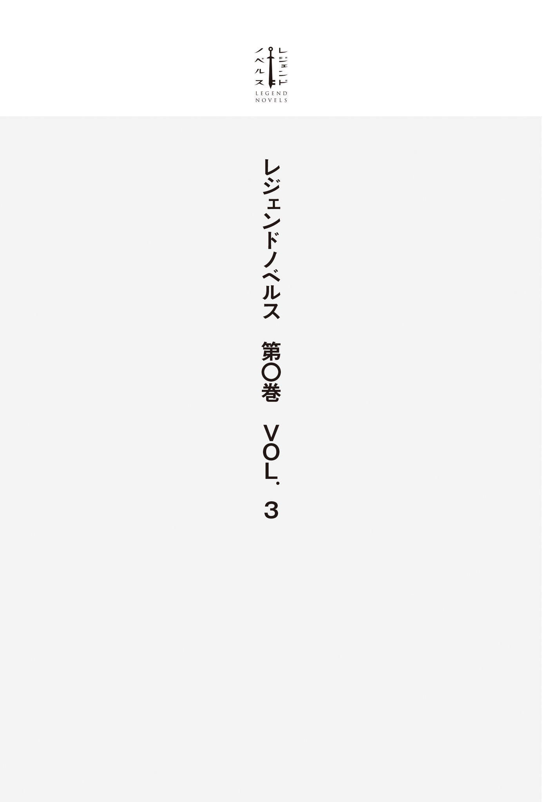

| レジェンドノベルス第０巻 ＶＯＬ．３ ２０１８年１２月版 | |
| ｅｐｉｎａ & 二上たいら & 河畑濤士 & 止流うず | |
| 講談社 (2018) | |
本作品は、縦書き表示での閲覧を推奨いたします。横書き表示にした際には、表示が一部くずれる恐れがあります。
ご利用になるブラウザまたはビューワにより、表示が異なることがあります。

日々を漫然と楽しく生きるべし。それが人生の秘 訣 なのだと、俺......三 好 明 彦 は常々考えていた。
かくいう俺も今年で大学三年生になり、就職活動真っ最中だったりするわけだが。なんとか単位は問題なく取れているものの、この就職活動というのが実にやっかいだ。自己ＰＲ。三好明彦です！ 働くのは負けだと思っています！ 志望動機。ねーよ、んなもん......とまあこれが本音なんだけど。そのままやったら青筋を浮かべた面接官に「お引き取りください」と追い出されてしまうってことぐらい、俺にだってわかる。幸い俺は呼吸するように噓 をつけるから、面接官を騙 し切る自信はあるけども。
そうやって仮にどっかの会社に入れたとして。ありもしない社会奉仕精神を奮起して奴隷のように働き、ドＭに目覚めてワーカホリックになる自分がどうにも想像できないんだよな。ひょっとしたら俺だけじゃないのかもしれない。ほとんどの人は自分にある程度の見切りをつけて、建て前上は会社のために頑張りますって吹聴して、本音ではオマンマのために汗をかく。働かざるもの食うべからず。本来この言葉って「働かないなら死んで当然」って意味じゃなかったはずだけど。ま、言葉の意味なんて時代に応じて変わるものだ。
「いやでもホント、どーすっかな......」
俺は今、講義が終わって帰路についているところだ。今日はサークルもないし、家に帰ってレンタルしたＤＶＤでも観 ようと思っている。ひょっとすると社会人になる実感が持てないのは日々楽しみにしてるアニメを観たり、サークルでＴＲＰＧ遊んだりして、遊戯の世界に籠もっているからかな。どこまでもアリじゃなくて、キリギリスな俺。最後はアリに喰 われる運命だ。まあ、それも一興だろう。今を楽しんだ分、将来ツケを支払うか。今を犠牲にして未来の老後を取るか。俺は迷いなく前者を選べる。年金は払ってるけどね。親が。
お父さんお母さん、ごめんなさい。生まれてきて、ごめんなさい。
そんなふうに益 体 もなく、いつもの様にゴールのない思考の迷宮で遊んでいると。
「......ん？」
目を留 めた先に、一人の女の子が立っていた。
なんて言えばいいのか。うん、もの凄 い美少女だ。これまで二十一年間生きてきたなかで、間違いなくトップクラス。年のころは十六～十七歳ぐらいかな？ 年下なのは間違いなさそうだけど。
気になってしまった理由として容姿はもちろんのこと、現代日本にふさわしくない時代錯誤な服装にも原因があった。まるでどこかの国のお姫様のようなドレスを自然に着こなしている。コスプレ特有の着てみた感がない。あの金色の髪は染めているわけではないだろうし、薄緑色の瞳もカラーコンタクトではあるまい。でも外国人かって言われると、それもなにか違うような......。
「あ」
つい変な声が出てしまった。見 惚 れていた俺の視線に少女が気づいたからだ。近づいてくる。確かにジロジロ見るのはぶしつけだったな。眼の前にやってきた少女にとっさに謝罪の言葉が出そうになったが、少女に非礼を窘 めるような気配はなく......それどころか嬉 しそうに笑顔を浮かべていたのだ。
え、なに。俺を見て喜んでるっ？ いや、そんなはずは!?
「お待ちしていました」
「え、あ、はい。すいません！」
なぜか俺を待っていたという少女に、思わず頭を下げてしまう。想像してたとおりの美しい声色。いや、想像以上だ。音楽として聞 き惚 れるレベル。人を魅了してやまぬ、流れるような旋律。しかもなんて見事な日本語のイントネーションだろうか。
それにしてもなんだ、このシチュエーション。恋の始まり？ いやいやいや。っていうか、そもそも俺を待ってたってどういうことだ？
「えーっと......」
「アキヒコ様、ですよね？」
逡 巡 している俺に上目遣い、しかも小首を傾 げるように尋ねてくる少女。
やばい、これはやばい。あざとすぎる。破壊力が段違いだ。負ける。この俺が負けるだと!? ばかな。中学時代から最強の朴 念 仁 の名をほしいままにした、この俺が！
「あ、はい。三好明彦です」
しかしそんなやかましい内面はおくびにも出さず、努めて平均的な日本人を装って会釈する。だがしかし。
「やっぱり！ よかった、予言のとおりです」
少女の満面の笑みに、背筋が凍りつき、同時に百年の恋も冷めてしまった。
予言？ 前世系？ ナニコレ、転生系ヤンデレは最も触れてはならないヒロインじゃないか。危険だ。この少女に深入りするのは危険すぎる。しかも個人情報まで知られてるじゃないか。きっと宗教系の勧誘だ。このままだと「これはいいものですから」とか言われて目玉が飛び出るような金額の壺 を買わされるに違いない。一刻も早く逃げなきゃダメだというのに、どういうことだ！ 動け、動け、俺の身体 ！ なぜ動かん！
「アキヒコ様。申し訳ありませんが、こちらの世界で事情をお話しする時間がありません。そろそろ滞在時間が切れてしまいますので......」
「はいぃ？」
少女の意味不明なセリフに思わず人材の墓場の人みたいな返しをしてしまった。
俺の身体が動かないのは、チャームの魔法にでもかかってしまったからなのか。さらに少女が伸ばしてくる手も取ってしまう。思わず守りたくなるような華 奢 できれいな手。そして、柔らかい。少女はさらになにか言おうとしたようだが二の句が継げないといった様子だ。なにを言おうとしたのだろう。表情からすると謝罪......いや、願い、だろうか。
俺が思考している間にも、少女と俺の周囲には光が満ち始めていた。
「え、これは......いったい」
もっと気の利いたセリフはなかったものか。己が身に起こっている怪現象にさしたるリアクションもできず、少女を見つめてしまう。俺の目に映った少女はその瞳に強い決意を秘め、こうつぶやいた。
「お許しください。でも、どうか......」
俺は光に包まれるなかで、なんとなく思った。こんな子にだったら、どんなひどいことをされても許してあげられるな、と。
光を抜けると、そこは見知らぬ風景だった。
俺のよく知る路地は跡形もなく消え、現れたのは石レンガに囲まれた広い部屋。戸惑うばかりの俺は、ゆったりとしたローブのようなものを羽織っているギャラリーたちを見て、ファンタジーの映画で見た魔法使いみたいだなとのんきな感想を浮かべてしまった。
「やったぞ、成功だ！」
「姫様、おかえりなさいませ！ 大事はございませんか！」
「おお、その方がアキヒコ様ですか！」
ローブの人たちが歓声をあげていたが、俺と少女に近づいてくる様子はない。姫様、というのは間違いなく少女のことだろう。この人たちまで俺を知っているという事実に、少女の言っていた予言という言葉を思い出した。
「皆様、ありがとう。ですが喜ぶのは早いですよ。アキヒコ様に事情を説明しなければなりません。部屋の用意は？」
「はい、こちらです」
部屋の入り口に立っていた侍女が......うほっ、いいメイド服。やらないか。
いや......コホン。メイドさんが扉を開けた。
「アキヒコ様、こちらへどうぞ」
少女がつないだままだった手を優しく引いてくれる。やらかい。ありがたや。もちろん美少女のエスコートに抵抗なんかするわけない。少女に続いて部屋を出た。通路に出るときに振り返ると、部屋の床が見えた。あれは魔方陣だろうか？
「だんだんなにが起きてるか、わかってきたぞ」
俺のヲタ知識によると、これは異世界召喚に間違いない。となると、このあと少女からお願いされるであろう内容もだいたい察しが付くが......。うーん。意外と冷静だな俺。もっと混乱してもいいシチュエーションだと思うけど、これも日々の妄想訓練の賜 物 なんだろうか。
だからというわけじゃないけど、少女が俺を通してくれた部屋が謁見の間ではなく普通の応接間だったのには、ちょっとばかり肩透かしを食らった。こういうときって王様が偉そうにふんぞり返って「よくぞ来た、異世界の勇者よ」とか言うのがテンプレだと思ってたんだけど。
「まずは、アキヒコ様。無理やりに連れてくるような真 似 をしたことをお詫 びいたします」
勧められるまま席に座った俺に、とても申し訳なさそうにふかぶかと頭を下げる少女。って、なりません姫、この角度はいけませんぞ。胸チラです。殿中でござる。
「いや、きっとなにか事情があったんでしょう。頭を上げてください。困ります」
主に目のやり場にな。これだけの前金をもらっておいて更なる謝罪と賠償を求めるほど、俺は厚顔無恥ではないぞ。
「ありがとうございます、アキヒコ様。さぞ混乱しておいでかと思いましたが、さすがは予言の勇者様......」
頭を上げてと言っただけなのに、少女はなぜか感動していた。これってあれか、いわゆる「さすおに」ってやつなのか。
「えーと。まずは、その......予言というのを聞かせてもらえますか」
どうにかこうにか口を開いて脱線する思考を引き戻した。実際、予言というのはずっと引っかかっていたキーワードでもある。会話のイニシアチブを握ることも兼ねて、ここは俺のほうからどんどん突っこんでいったほうがいい。
「はい。ですが、まずは自己紹介をさせていただきます。私はタート゠ロードニア王国の第一王女リオミ゠ルド゠ロードニアと申します」
「ご丁寧にどうも」
俺も自己紹介しようと立ち上がりかけて、やめた。そういえばもう名乗ってるし、そもそも相手は俺のことを知っている。そして案の定、マジモンのお姫様だったってわけね。
「予言ですが......アキヒコ様の名はこの世界......アースフィアに『魔王を消し去るもの』として予言詩が伝わっているのです」
魔王を消し去るもの、ねぇ......。ますます胡 散 臭 い。とりあえず異世界の名前はアースフィアか。覚えたぞ。
「とりあえず予言の詳細を聞かせていただいても？」
「はい」
俺のお願いにリオミ王女は嫌な顔一つせず、予言を暗唱......もとい唄い始めた。
「『蒼 き星よりきたる勇者。闇よりいでし魔王を消し去る。魔を極めし王女が導き現れる。その名をアキヒコ。天からの贈り物、聖なる剣で光を降らす』」
うっとりとした表情のまま、リオミ王女は唄い切った。ああ......うん。やっぱり唄っても芸術だな。この子の美声は。
「私は、この予言を子守唄代わりにして育ちました。とても大好きな詩なのです」
大事なものを手繰り寄せるように胸に手を当てるリオミ王女。うん、よかったよかった。予言と聞いて嫌な予感してたんだけど、リオミ王女はヤンデレではなかったんだね。いや、予言詩の内容はとっても物騒だったけどさ。
「つまり、俺が聖剣でもって魔王を倒すと」
とても信じられないが、リオミ王女は確信に満ちた瞳でこちらの目をまっすぐに見据えてきた。
「はい。アースフィアには昔から、強大な魔王が存在するのです。どこからやってきたのかはわかりませんが、アースフィアの魔物を支配し、人の地を荒らしています。元から軍勢を率いていたという説もありますが......」
「いかにも魔王って感じだな」
まあ大方、地下の魔界からでもやってきたんだろう。そこを深く考えても仕方ない。
「やっぱり人類殲 滅 とかが目的だったりするのか？」
「いいえ。魔王の目的は人間の支配だと言われています。もし世界を滅ぼすのが目的であるなら、三日で達成するだろうと言われるほど、強力な力を持った存在ですから」
「え、それは......」
おいおい、マジかよ。俺が尊敬する偉大な大魔王様を超えておられるぞ、ホントなら。あのお方がファンタジー版の核爆弾を使って成し遂げようとした大事業を、三日でって。ますます予言詩が俺の死亡フラグに思えてくるんですけど。
「アースフィアになんのゆかりもないアキヒコ様を頼るのは、王族として責任放棄に等しいと自覚しています。ですが......私も魔法に関してなら多少の才もございますが、魔王の持つ強大な魔力には到底太刀打ちできません。いえ、私だけのことならいいのです。魔王の配下に苦しめられる民の声を聞くのは、もう......耐えられません」
それなりの人生経験しか積んでない俺だが、年下の王女の告白は......充分、胸にクるものがあった。リオミ王女は自分だけのことならいいと言う。だけど自分以外の人が傷つくのが耐えられないと。揺れる薄緑の瞳には、事実に基づく説得力があるような気がした。
「恥を忍んでお願いいたします。どうか、アキヒコ様。魔王を倒してください」
頭を下げるリオミ王女に、俺は肩を竦 めて嘆息するしかない。当然だ。そんな怪しい予言に従うなんてバカげてる。ただの大学生に魔王が倒せるはずがない。ここは断るのが順当だ。
「はい、いいですよ」
「......え？」
俺の即答に、リオミ王女が信じられないとでもいうような驚きの表情を浮かべた。ん、あれ、聞こえなかったのかな？
「あの、アキヒコ様......」
「今言ったとおりさ。魔王なら倒す」
もう一度言い直す。さも、それが当たり前だというふうに。
「ほん、とうに？ こんなふうに連れてこられて、お怒りにならないのですか......？」
リオミ王女が一言一言、確かめるように言葉を紡 ぐ。
「いやまあ、ちょっと戸惑いはしたけども。でも、予言に俺の名前が伝わってたんでしょう？ なら俺にできることなのかもしれない。正直、自信はあんまりないんだけど」
後半以外は噓だ。そもそも予言なんて信用できない。俺が勇者で魔王を倒すなんて話、中学生じゃあるまいし。ホイホイ乗っかるほうがアホだ。
だけど、リオミ王女は予言の詩を子守唄代わりにしていると言っていた。予言の詩が大好きだとも。俺の名前を聴きながら育ち、健やかな心を持って育った王女の心からの願いを、どうしてむげにできようか。
「あ......っ」
と、声を漏らしたかと思うと。リオミ王女が糸の切れた操り人形のようにへたりこんでしまった。
「だ、大丈夫ですか？」
「は、はい......。安心、してしまいました。あはは」
駆け寄る俺に、力なく。しかし安 堵 に満ちた笑い声を返すリオミ王女。俺が支えるより先に部屋に控えていたさっきのメイドさんが、リオミ王女を助け起こした。
「本当によろしいのですね、アキヒコ様......」
「うん。えーっと、でも俺にはなんの力もないと思う。なんかこっちの世界に来て、力が目覚めてるとかじゃなければ」
あとはこっちの重力が小さくて地球ではヘナチョコな坊やだった俺が、アースフィアなら無敵の超人！ とかでもなければ。特技なら一応あるっちゃあるけど、魔王退治の役に立つとは思えんし。
「よかったです。本当に、ありがとうございます」
またまた頭を下げてくれるリオミ王女。今度は俺も立ってるから胸チラは回避された。正直、今見えちゃったら罪悪感ぱない。良かった。それにしても俺ってこんなに善人だったっけかな。もっと斜に構えて世の中見てるつもりだったんだけど。
「おそらくアキヒコ様は、聖剣を抜くことで大いなる力を得られるのではないかと思われます」
「聖剣？ ああ、予言の」
聖剣か。確かに、それに賭けるっきゃないかな？
「アキヒコ様には承諾をいただけましたので、これから聖剣のある地へと向かいます。来ていただけますか？」
リオミ王女の問いかけに、俺は力強く頷 いてみせた。
そうだな。その聖剣とやらを抜くと、俺の超絶パワーが覚醒して魔王もビックリな勇者になるに違いない。予言もそう言っているようなものだし。うーん、そういえば帰る方法とか聞いてないけど魔王を倒すって言っちゃった以上、長期滞在を覚悟しないといけないのかな。変にホームシックにかかってもまずいから今は聞かないでおこう。折を見てリオミ王女から話してくれるに違いない。
こうして俺はリオミ王女とともに護衛を引き連れて、聖剣があるという地へ向かった。
「おお、すっげえ。本当に城だ」
揺られる馬車の窓から見える景色に、思わず唸 ってしまった。馬車の通る石畳の向こう側に、大きなお城。中世暗黒時代のリアルな土を掘って堀を作っただけの城ではなく、ファンタジーのゲームかなんかで想像するようなほうの城だったのだ。
カタコトと上品な車輪の音を立てながら、王族御 用 達 の馬車が城下町を行く。うーん、いろんな種族の人がいるな。エルフにドワーフまでいる。ひょっとして、あのオヤジ顔の子供は小人族かな？ あらゆる種族の人たちが王族の馬車を遠巻きに見ている。特にひれ伏したりはしていないが、失礼のないよう頭を下げている人たちが見えた。
「あ、あれは！」
そのとき俺の目に飛びこんできたのは、頭に猫耳とか犬耳をつけて、腰のあたりからは尻尾の生えた......いわゆる獣人であった。
「ワ、ワンニャンぱらだいす......！」
心の内から湧き上がる衝動に総身を震わせる。気がついたら、俺は窓枠から身を乗り出していた。
「アキヒコ様、なにか変わったものでも？」
「えっ!? うわわっと！」
あっぶね、落ちるところだった！
「だ、大丈夫ですか？ あんまり身を乗り出すと危ないですよ！」
俺の向かい側に座っていたリオミがびっくりしながら、俺の身体を支えてくれた。
「ご、ごめん。俺の世界には、ああいう耳の長い人とかはいなかったから、ついね！」
「そうなのですか？」
身振り手振りを交えて必死にごまかすと、リオミ王女が心底意外そうに目を見開いた。地球に来てたみたいだけど、時間制限があったらしいし、あんまり見て回れなかったんだろう。
「そういうことでしたら、聖剣の件が終わったら一度王都を案内させていただきますね。多くのことがアキヒコ様にとってははじめてでしょうし」
あかん王女、それフラグやで。まさかとは思うが、アキヒコはアキヒコでも、俺ではなくて別人のアキヒコかもしれないのだ。聖剣が抜けなくて人違いでした！ だったら目も当てられない。
そんな具合で王女と親睦を深めていると、三十分ほど経過しただろうか。馬車が止まった。すでに城下町からは出ていて壮大な平野が地平まで続いているのが見える。こんな辺 鄙 なところに聖剣が？
「足元に気をつけてくださいね、アキヒコ様」
リオミ王女が従者に促されて馬車を降りる。本当に終着点らしい。案外近いんだな......などという安易な感想はすぐに覆された。
「え、これって......」
馬車を降り、王女たちが歩いて行く方向を見て絶句する。草原にぽっかりと大穴が開いていた。すり鉢状のとてつもなく巨大な、大 隕 石 でも落ちてきたかのような......そう、クレーターだ。俺たちの目の前にはクレーターとしか形容できない大地の傷跡が広がっていたのである。
「アキヒコ様、お手を」
クレーターの端で啞 然 としていた俺は、半ば無意識に差し出された手を取っていた。
「《我らが身は泡のごとく。レビテイト》」
リオミ王女が呪文を唱えた。浮遊の魔法のようだ。俺たちはふわりと宙に浮きクレーターの内部へゆっくり落ちていく。
「すげえ！ 魔法だ。本当に魔法！」
宇宙飛行士にでもならなければ経験できなかったであろう無重力体験に、俺は年 甲 斐 もなく大興奮していた。子供のころ、遊園地で擬似無重力を体験できるコーナーがあったけど、俺はやらなかったんだっけ......などと、まったく関係ないことを思い出す。
俺が考えていたよりクレーターは浅かったようで到着は意外と早かった。底に降り立つと魔法の効果も切れたのか、無重力感覚が消える。あれ？ てっきりお付きの人も来るのかと思っていたが、俺とリオミ王女だけ、二人っきりで降りたのか。ああ、よくないな。妙に意識してしまう。
「アキヒコ様。あれが聖剣です」
リオミ王女の指し示した方向には、確かになにか棒状のモノが地面に突き刺さっていた。クレーターの紛れもなく中心、そこに聖剣はあった。
「まさか、このクレーターって......」
「はい。聖剣は天から光とともに降ってきました。この穴はそのときにできたのです」
空から落ちてきた剣が、このクレーターを作った。いや、剣の質量落下でこれだけのクレーターができるもんかね、普通。つーか聖剣、壊れてないだろうな。
「あの聖剣を引き抜けた者は、アースフィア史上において存在しません。また、落下した後も破損はないらしく、不壊の聖剣とも呼ばれています」
壊れていないらしい。さすがは聖剣といったところか。確かに予言詩でも天からの贈り物、という一節があった。これが聖剣と伝えられるものに間違いないのだろう。
「さあ、アキヒコ様。聖剣の下へ」
「え、俺だけで？」
「あの聖剣が抜けないのは、大地から引き抜く力が足りないからではありません。あの聖剣の周囲には結界のようなものがあり、誰も近づけないのです」
な、なるほど。詳しく調査しようにも、それじゃあ無理だよな。
「ここで俺が近づけなかったら、大変なことになるな」
「大丈夫です、アキヒコ様。私は信じております」
ああ、その無条件の信頼が痛いです王女様。だが、その信頼には応えねばなるまい。やってやる、やってやるぞ！
奮起しつつ、おそるおそる聖剣へと近づこうとした......そのとき！
「な、なんだこれ！」
大地が揺れる。地震だ。地震？ こんなすり鉢状のクレーターのなかで地震だと!? おい、これやばいんじゃないか。俺も王女も聖剣とともに生き埋めになってオダブツというオチではないのか？
「アキヒコ様、危ない!! 」
俺が揺れで一歩も動けないなか、リオミ王女がとっさに先ほどの浮遊の魔法を唱え、俺の手を摑 んだ。揺れがなくなる。いや、地震は続いているんだが、俺とリオミ王女が地面から避難したのだ。
しかし、それで一安心とはいかないのが世の常。
「ぬぅぅん!! 」
地球では一度も聞いたことのないような野太い声が轟 き、大地が爆 ぜた。今まで俺が立っていた地面が爆発したのだ。もしまだあそこに立っていたらと思うとゾッとする。
「あ、あれは！」
土煙が晴れた先に、こちらを見上げる巨人が立っていた。不敵な笑みを浮かべ、肩に担いだ巨大なハルバードを構える。
「待ちわびたぞ、聖剣の勇者よ。わが名は無双巨人ゴズガルド。いざ尋常に勝負するがいい!! 」
拝啓、お母さん。お元気ですか？ 僕は異世界でも元気です。最近、悩みがあります。異世界の展開に全然ついていけないわけで。いざ聖剣を抜こうと思ったら、地面が割れて巨人が現れたわけで。しかも、どう見ても友好的には見えないわけで。まだ聖剣を抜いてもいないというのに、強敵の予感なわけで。残念、勇者アキヒコの冒険はここで終わってしまうわけで......。
「ゴズガルド!? ザーダス八 鬼 侯 の一人がなぜここに！」
「グアッハッハッハ！ 魔王様のご命令により、聖剣を抜くという勇者とやらを拝みに来たのよ」
逃避モードの俺の目の前で繰り広げられるリオミ王女と巨人のやり取りを聞く限り、どうやら魔王軍のなんか凄 い強い幹部のようだ。きっと軍団かなにかを任せられている奴 に違いない。見た感じ武人肌っぽいが......い、いや待てよ。こういう一番手は魔王軍幹部でも一番の小物と相場が決まっているはずだ！
「アキヒコ様、まずいです！」
「や、やっぱり、まずいのかな！」
だ、ダメだ。リオミ王女が本気で焦ってる！
「考えておくべきでした。魔王とて予言は知っているはず。聖剣を抜く前に刺客を送ってくる可能性も想定していましたが、まさかここで......しかも、よりによってゴズガルドとは」
「有名な奴なのか」
「オイ、おまえが勇者か？」
リオミ王女が俺の質問に答える前に巨人が会話に割りこんできた。ジロリ、と俺を睨 みつけてくる。
あ、あれはいけない、獲物を品定めする目だ。いや、そんな目で見られたことはないけど。ブルッときてるから、きっとそうだ。漏れませんように。死力を尽くせ、わが膀 胱 。
「降りてこい、勇者の。ワシはおまえと戦うのを心待ちにしておったのよ。わがブラキニスの錆 としてくれる」
巨人がこれみよがしにブオン、ブオンとハルバードを振るうと風圧が空中にいる俺とリオミの身体を揺らした。
「え、遠慮しておきます」
まったくもって冗談ではない。あんなモノで攻撃されたら俺の身体など粉 微 塵 に吹き飛ぶだろう。
混乱する頭とは別に、俺の頭脳はあらためて巨人の姿を曇りなき眼ではっきり捉えたうえで、分析を開始する。背はだいたい七～八メートルぐらいだろうか。その肉体美を惜しげもなくさらしていて、腰に巻いた板チョコみたいな金属板が申し訳程度の防具だ。全身は筋肉で引き締まっており、鋼鉄よりも頑丈でありながら、しなやかに動きそうだ。明らかに魅せ筋じゃない。
だが、なによりもヤバそうなのは巨人が持っているエモノのほうだ。ハルバードというのはただでさえ斧 と槍 の両方の特徴を備えた凶悪な武器なわけだが、ヤツが装備しているのは普通の人間の扱うサイズじゃない。ブラキニスとか言っていたか？ 直撃はもちろん、かすっただけでも死ぬに決まってる。
「ふん、こんな青ビョウタンが本当に勇者か？ 魔王様も心配性であらせられるな」
おびえる俺を見て、巨人がつまらなそうに鼻で笑う。俺たちが浮いてる場所はヤツがその気になれば決して届かない間合いではないはずなのに。
......ふむ。すぐには襲ってこないのか？
「ま、魔王は俺のことをなんて言ってたんだ！」
ちょっと質問しただけなのに、ギロリと睨み返された。コ、コワイ。
「興の乗らぬ仕事よ。おまえが聖剣を抜く前に摘み取れ、とな。エモノも持たぬ勇者を討ち取ったところで、なんの自慢にもならぬのに」
「そ、そうだな」
とりあえず話を合わせながら巨人を観察する。どうやらコイツ、この仕事に乗り気じゃないっぽいな。こちらの出方を窺っている？ なら......。
「もし俺が聖剣を抜かないで逃げるって言ったらどうする？」
「アキヒコ様!? 」
ああ、そんな「めちゃめちゃショックです！」みたいな目で見ないでくれ！ 探りを入れてるだけなんだ！ 泣かないで、後生ですから。
「そのときは、お主以外の者を皆殺しにするだけの話よ」
うん。普通に尻尾巻いて逃げる、の手はなしだな。
さて、どうする。感じるんじゃない、考えるんだ。現実には一度も立ち向かったことなんてないけど、こういう脳内シミュレーションだけは幾度となくやってきたじゃないか。
コイツは勇者との尋常なる勝負を望んでいる。そこに隙がある気がする。魔王はコイツになんて命令したんだっけ？ 聖剣を抜く前に俺を倒せ、か。コイツは明らかに任務を面白がってない。聖剣を抜いた俺と勝負できないことが不満なのか？ いや、それだけじゃない気がする。俺が魔王のことを言ったとき、睨んできた。あれは怒りだ。主君の侮辱を許さないという怒りだろう。強さを重んじる武人肌。俺が聖剣を抜く前に倒せと言われ、面白くはないが魔王の命令は絶対、だがコイツはすぐに襲いかかってくる様子はない、逃げるなら問答無用で皆殺し、そうできるだけの実力を自負している。
......そうか、わかったぞ。
「魔王はおまえを随分安く見たようだな」
「......なんだと？」
「なぜ、魔王が聖剣を抜く前に俺を殺せと命令したか、おまえはもうわかっているんじゃないのか？」
俺の挑発に、意外なほど顕著な反応があった。怒り。屈辱。だがそこに、わずかな狼 狽 が。
「魔王様を侮辱するか、貴様！」
「いや、違うな。侮辱されているのはおまえのほうだ。そして、侮辱してるのも俺じゃない」
充分なヒントがあった。導き出される答えは一つしかない。巨人は怒りに震えているが、挑発しただけで直情的に攻撃してくるタイプではないと見た。そういった行為を誇りある武人はしないものだ。
なら、俺がここで退くわけにはいかない。
「貴様になにがわかるというのだ......！」
「おまえは魔王に、こう思われている。『おまえでは、聖剣を抜いた俺には勝てない』と」
俺の言葉に巨人が顔を赤くする。ここまで言われても攻撃してこないのは......あいつもうすうす感じていたからだろう。自身の誇る武 を、魔王に軽く見られていると。ひょっとしたら魔王はあの巨人を試しているのかもしれない。武人としての甘さを捨てきれるかどうか。下した勅命と、武人としての誇りを天 秤 にかけ、忠誠をとるか否かを。なんとも悪辣な上司だと思うが、これを利用しない手はない！
「証明する機会が欲しくはないか？ おまえほどの忠臣なら、主の勘違いを......時には諫 めることも必要じゃないか？」
あくまで俺は、魔王とコイツを貶 めるのではなく。持ち上げたうえで、なおかつ魔王による侮 りを指摘する。奴が感じていた不満を、他ならぬ、奴が戦いたいと切望している勇者の言葉で自覚させる。これは俺にとっても賭けだ。
「戦ってやる。俺が聖剣を抜いたら、な」
挑発に乗ってこない可能性もある。魔王の命令を優先し、俺を殺すという選択肢を取った場合が最悪だ。そもそも聖剣を俺が抜けるか否か。抜けたとして、その力でもって魔王軍の幹部クラスに勝てるのか。もうコインをベットした。あとは奴が伸るか、反るか。
「......貴様の挑発に乗ってやろう、勇者」
想像とは違った。俺は、あいつが怒り狂って聖剣を抜けと叫ぶんじゃないかと思っていた。だけど巨人は静かに。ただ静かに......地の底から響いてくるような声で、俺を凝視したのだ。
「だが、勘違いするな。魔王様の命令に逆らうのではない。不遜な言葉を吐く貴様の全力を砕き、魔王様への供物とするためだ。ワシはしかる後、いかなる誹 りでも受けよう」
そんなのは詭 弁 だ。コイツは魔王を侮辱した俺を万全にしたうえで倒すという大義名分を見 出 した。自身の武を示す機会、その誘惑に抗 えなかったんだ。だが、それでいい。意外と冷静なおかげで助かった。もしコイツが武人としての自分をかなぐり捨てて、あるいは俺の言葉をただの侮辱と解釈してハルバードを振るってきたら、俺たちの命はなかった。
「アキヒコ様」
リオミ王女が心配そうに俺を見る。笑い返してあげた。
「降ろして、リオミ。行くよ」
自然とリオミ、と呼び捨てにしていた。リオミが頷いて、俺をクレーターの底に導く。聖剣のところに行こうとして、つんのめりそうになる。リオミが俺の袖を摑んでいたのだ。
「アキヒコ様。どうか、ご無事で」
リオミの瞳が揺れている。その顔は、今にも泣きそうで。ああ、うん。そうだよな。俺が......俺が守らなきゃいけないよな。頼んだぜ、聖剣。本当に俺が予言の勇者だっていうなら、応えてくれよな......。
俺がリオミに微 笑 み返すと......名残惜しそうに、リオミは俺の袖を解放する。
慎重に巨人を注視しながら、聖剣のほうへ向かう。奴は......動かない。俺が聖剣を抜いて構えるまでは手を出さない、そう目で訴えている。ほどなくして俺は聖剣に触れられる距離まで近づいた。リオミを振り返る。頷かれた。よし、結界は越えたみたいだな。なら、あとは抜くだけだ。
「すぅ......」
深呼吸する。これほど緊張したのは、小学生のとき......初恋の先生に告白するとき以来だ。あのときは散々だった。やなトラウマを思い出してしまった。今回はどうだろう。うまくいくだろうか。いや......やらないといけない。俺だけのことじゃない。後ろで俺を信じてくれているリオミや、まだそんなによく知らないけど、魔王に苦しめられてる人たちの希望が......俺の双肩にかかっている。
（ああ、またか）
幾度となく頭を悩ませてきた自身の一面に苦笑しながら、俺は聖剣に触れた。
「ぐ、う......ッ!? 」
なんだ、これは。なんだ、これ！ とてつもない情報量。脳を圧迫する０と１の羅列。聖剣の正体、そして機能。付随するあらゆる情報が俺のなかになだれこんできた。永遠にも等しい時間が流れたように思えたが、実際にはほんの一瞬の出来事だったはずだ。
肩で息をしながら聖剣を握り、実にあっさりと地面から引き抜いた。リオミの喜ぶ声、巨人の笑い声が聞こえたが......俺に一切の感動はない。『これが地面から抜けるのは、もうわかっていた』からだ。そして、振り返る。事態を分析する。
（まずい......！ この聖剣じゃあ、戦えない！）
俺は王道的な展開で異世界に召喚され、聖剣を抜く勇者としてアースフィアに降り立った。おっかなびっくり聖剣を抜いて、それでもって隠された力かなにかに覚醒して、この世界を救う展開になるのだと思っていた。結論から言う。それは間違いだった。
まず、予言では聖剣と呼ばれているこの剣だが......いや、剣と呼ぶにはちょっと問題があるか。確かに形は剣だ。だが、刃がない。最初からこの剣は、なにかを斬るために造られたものではない。形状も異様だ。刃に相当する部分は鋼やらオリハルコンではなく......こう、なんていうんだ。メタリックな機械みたいと言えばいいのだろうか。ところどころに細長い溝があり、溝によって色が違う。さすがに空から落下しても傷一つないだけあって、とても頑丈な素材が使われているようだ。いや。実はなにで造られているかというのも、もうわかっているのだが。今は省こう。
重要なのはそこじゃない。今大事なのは、あの巨人を戦闘で圧倒できるようなチートパワーの有無だ。可能であれば、勇者にふさわしいだけの力を与えてくれる超常的な......そう、魔法的なアーティファクトが欲しかった。だが、期待は裏切られた。聖剣そのものに武器としての特別な力はない。これは武器ではないのだ。これでは、この聖剣では、戦えないのだ......。
「どうした、勇者。構えよ」
いつまでも呆 けている俺に巨人が訝 しげな視線を送ってくる。いや、さすがに気づいたか？ 明らかに斬れるようには見えないもんな。すぐに襲っては来ないだろうが、このまま構えないでいても痺 れを切らして攻撃してくるだろう。先ほどとは状況が違う。こちらはもう、聖剣を手に取ってしまっているんだから。
どうする。どうするよ俺。
「アキヒコ様」
リオミ。彼女は祈るように手を合わせてくれている。俺が状況を打開できると、信じてくれている。
そうだ。呆けている場合じゃないぞ、三好明彦！ 聖剣は確かに俺の肉体を直接パワーアップさせてくれるようなアイテムじゃない。だからといって、方法はないのか？ いや......あるにはある。これは武器ではないが......兵器だ。
「大丈夫だ、リオミ」
先ほど聖剣に触れたとき、膨大な情報が俺の脳に入力された。さまざまな情報があったが、要するにあれは聖剣のマニュアルだ。この聖剣がどのような機能を持つのか、どんなことができるか。そういった使い方が遺伝子レベルで俺にインプットされたのだ。その気になれば、今すぐヤツをケシズミにできる。だが、それはまずいのだ。リオミやクレーターの上で状況を見守るしかない護衛兵たち、そして......王都の人々すべてを、巻きこんでしまう。だから、その方法はダメだ。
「......待たせたな」
俺は覚悟を決めて時代劇の見よう見まねで聖剣を構えた。巨人もまた、待ってましたと言わんばかりにハルバードを構える。やはり冷静なままだ。すぐに打ちかかっては来ない。ヤツも未知の聖剣を多少なりとも警戒している。武人だからこそ。戦士なればこそ。剣の機能を持たない聖剣を、侮 らないでくれている。
さあ、今のうちに考えるんだ。この状況を打開する方法を。さっきとは違う。聖剣の使い方はわかっている。リオミたちを殺させず、俺も殺されない方法だ。ヤツに勝つ方法でなくていい。この場を犠牲なく乗り切る策でいいんだ。
「俺がこの聖剣の刃を返すとき......おまえが俺を見る、最後の瞬間になる」
巨人が俺の言葉に目を見張った。俺が挑発的に戦いの合図を指定したことで、巨人がニヤリと笑う。よし、これで俺がタイミングを主導できる。この方法しかない、というわけじゃないが......現時点で思いつく限りでは、これが最良のように思えた。ここにいる全員が攻撃にさらされることなく、逃げ切る方法。
「いくぞ！」
選択した。もう、迷いはない。俺は刃を返した。
「随分と囀 ってくれたものだな。小僧！」
来た！ 巨人はまさしく一瞬で間合いを詰めてきた。あちらの体 軀 を考えれば距離などあってないようなもの。だけど、俺に焦りはない。余裕で間に合う。
──起動！
聖剣の溝が各々に発色し、輝きを増す。
「あばよ、オッサン!! 」
巨人は驚 愕 の叫びをあげたようだが、それが最後まで聞こえることはない！
──範囲はクレーターの周辺を含めた半径五十メートル圏内。対象は巨人を除いた有機生命体すべて。リオミと護衛兵士たち。あとついでに馬車！ 範囲指定、瞬間転送......!! 転送先──アースフィア衛星軌道──マザーシップ......！
「こいつは......この聖剣の正体はッ！ アースフィア宙域周辺に遺 された超宇宙文明の兵器の数々を統制する......マスターキー！ 俺の武器は聖剣そのものではなくッ！ 《聖 鍵 》によって操作・指揮・管制する兵器群に他ならないッ!! 」
転送先のマザーシップのブリッジで、俺は不敵に笑った。
「ったく、ファンタジーの異世界召喚だと思いきや、とんだ番狂わせだぜ」
そう、ここから本当の意味で始まるのだ。アースフィアを支配せんとする魔王軍に対し、俺の......聖鍵指揮下にあるＳＦ兵器を駆使した戦いが。
ファンタジーだと思ったの？ 残念、ＳＦでした！
さーて。どうも、皆さん。三好明彦です。今後に関しての注意事項を喚起させていただきます。俺は今、聖鍵を通して各兵器の情報を理解してしまっているため、自己完結して説明不足になる可能性があります。もしなにかわからないことがあったら、たぶん巻末とかに問い合わせ用のメールアドレスがあったりなかったりするので、そちらまでお送りください。説明の必要性を感じたら後々の紙面にてフォローをさせていただきます。
む？ 巻末？ 紙面？ なんだそりゃ。聖鍵がそう言えって言うから一応言ったけど。
まあいいや。気を取り直して。さてさて、なにから話していいものか。そうだな、まずはマザーシップについてはちゃんと説明する必要があるだろう。
その名のとおり、マザーシップは母艦だ。アースフィア衛星軌道──座標は、別に言わなくてもいいか。とにかく大気圏を越えた先、宇宙に浮かんでいる。衛星軌道ということは、当然、アースフィアは惑星である。第一九三〇四宇宙惑星エグザイル。それがマザーシップに登録されていたアースフィアの名称である。
いわゆる宇宙戦艦であるマザーシップには各種兵装が搭載されている。主砲ホワイト・レイ一門、副砲百二十二門、対空砲二千四百十六門。周囲の隕石やデブリを取りこんで打ち出すマスドライバーカタパルト砲一門。エネルギーシールド発生装置は万を超える。
搭載兵器。宇宙戦闘機百六十機、万能攻撃機三十二機、多脚バトルポッド十六機、大気圏突入及び離脱能力を持つ戦略爆撃機八機、キャンプシップ四機。すべて無人有人操縦に対応。現時点でこれがすべてだが、ペイロードには余裕があるため必要に応じて改造、改装は可能だ。
内部施設。ブリッジには艦長席があるのみ。ここの台座に聖鍵をセットすることでマザーシップを自分の手足のように扱える。さらにここからは、アースフィアの美しさを展望できる。広さは充分に確保されているので、ブリッジクルーを迎え入れることも可能になっている。
生産プラント。農業、工業などの各種生産施設。現在は稼働していない。これも拡張可能。
居住区画。各種船室もあるが、街をまるまる納められるようなスペースもある。これは必要に応じて建造する仕様だ。
動力部。各所に縮退炉が八基あり、通常稼働については二基を稼働させれば充分なエネルギーを賄える。
中枢部。巨大なミラーボール球体が浮かんでいる部屋。マザーシップの情報管制を一手に担う、唯一替えの利かない施設。ルナベースと超時空ネットワークで接続されており、月で蓄積されたすべての情報はここを通してやり取りできる。ルナベース......については今度説明するかな。なんとなく伝わるとは思うけど。
これらの区画の移動はすべてテレポーターを使うが、聖鍵を持つ俺はこれを使わなくても施設内を自在に瞬間移動できる。
マザーシップには各種オートボットが無数に配備されているが、有機生命体はただの一つも存在しない。当然、俺がいるときを除いては。
まだ説明してない部分もあるけど、概略だけで充分だろう。もちろん、これらの兵装・施設は聖鍵を持つ俺だけが操作できる。ゲスト権限を与えれば他人にも一部開放できるが、今のところは必要ない。なお、これだけ規格外なマザーシップだが、聖鍵から起動できる最強の兵器というわけではない。あくまでアースフィアの一番近くにある中継基地兼橋 頭 堡 という位置づけだ。
超宇宙文明とやらが、なんでこんなものをアースフィアに派遣しているのか、聖鍵のマニュアルにはなかった。必要ないのか、ブラックボックス化されているのかは、まだなんとも言えない。いったいどういう運命の導きで聖鍵が俺の手に入り、俺だけに扱えるのか。予言とは結局なんなのか。こんな当たり前の疑問にすら説明はない。
確実に言えるのは、これらはあくまで道具であり、兵器であるという点。使い方次第で、俺は文字どおり神として君臨することもできる。気が向けばアースフィアを完全に破壊してしまうことさえ朝飯前だ。自分でも恐ろしい。核ミサイルのスイッチを、ポケットのなかで口笛混じりに弄 り回 している状態と言っていい。
一応は俺が命令しない限り、自動防衛システムの発動を除いて、兵器が暴走したりすることはないらしい。逆に言うとすべての責任は聖鍵を持つ俺に集約されている。決して思いつきなどで、みだりに使ってはいけないシロモノだということだ。今のところ、魔王を倒す以外の目的でアースフィアに干渉しようという気はないが......正直、俺の気が変わらないことを願うばかりだ。
『アキヒコ様！ アキヒコ様！』
む。艦内のマイクがリオミの声を拾ったようだ。範囲転送先はデフォルトの設定で俺がブリッジ。他の有機生命体がだだっ広いだけの倉庫区画となっている。いかんいかん、すぐに行ってあげなくては。
「もう大丈夫だ、リオミ」
艦内の転送装置は便利だ。突然現れたので護衛兵たちを驚かせてしまったが。一方、リオミは俺の姿を認めると一目散に飛んできて......って、え？
「ぐっはあ！」
リオミは俺に抱きついて、そのまま床に押し倒した。
「よかった！ アキヒコ様、よくご無事で!! 」
いててて。こんなことなら重力装置は切っておくんだった。役得のはずなんだけど、リオミのはちょっと激しすぎるぞ。
ひとしきり感動の再会を済ませた後、みんなをブリッジに集める。
「これが聖鍵の力だ」
リオミたちに、俺はたった一言で説明を済ませた。ファンタジー世界の住人である彼らに聖鍵からもたらされた知識を理解できるとは思えなかったからだ。とはいえ一応クレーター付近で「逃げおったな！」とか叫んでいる巨人の映像も見せて、ヤツから逃げおおせたことも端的に伝えた。
「それにしても、窓の外の光景はいったいなんなのですか？ 夜空のなかに一つだけ、大きくて蒼い......とてもきれい。あれは......」
「アースフィアだよ。キミたちが住まう大地だ」
不思議そうにつぶやきながら見下ろすリオミに、俺はあっけらかんと答えた。
「大地が丸い!? ばかな、有り得ん！ それでは我々はどのように立っているというのだ!! 」
護衛兵の一人が叫び散らしながら足を持ち上げたり、床に手をついたりしていた。アースフィアでは天動説が一般的なのか。ガリレオはまだ現れていないんだな。まあ、信じるかどうかは各個人に任せればいい。
「大地が丸いなんて。知りませんでした！」
リオミあたりは俺の言葉っていうだけで、無条件で信じてくれちゃってるし。将来、悪い男に騙されないか心配だ。
「でも、あんなに小さいということは遠いんですよね。私たちは帰れるのですか？」
「うん。聖鍵を使えばいつでもお城に帰れるよ。安心していい」
俺が胸を張って確約すると、リオミの瞳がキラキラと輝いた。
「なんというか、私......もう、言葉がうまく出てきません。アキヒコ様、凄すぎます」
「あはは......凄いのは聖鍵であって俺じゃないのが悲しいところだけど」
俺が本心から言っているのに、リオミは謙遜と受け取ったのかブンブンと首を横に振った。
「いえいえ、そんなことありません！ 聖鍵をこんなふうに使いこなしてるんですから。それで......これから、どうするのですか？」
「うーん」
あの巨人から逃げることだけ考えてたからな。どうするかとか、まだ全然考えてなかった。俺の役目からすると、聖鍵の兵器を使って魔王を倒しにいくべきなんだろうけど......たぶん、赤子の手を捻 るより簡単だよな。魔王軍にどれだけの戦力があるか知らないけど、聖鍵が用意できる無尽蔵の兵器群を相手にできるとは、とても思えない。無限の戦力を持つ疲れを知らない機械が相手では魔王軍に限らず、アースフィアのいかなる国家であっても勝てるわけがない。勝負にもならないだろう。
......いや、魔王を倒すだけなら、そこまでしなくても簡単な方法があるんだ。このマザーシップの主砲......ホワイト・レイは、魔王城を含む周辺地域をまるごと地上から消し去るだけのスペックがある。ちょっとした小島ぐらいなら、地図から削除する程度、造作もない。クレーターのときには遠隔起動であの巨人に発射することを検討した。そしたら聖鍵経由でシミュレーション映像が脳内に流されたわけだが......まあ俺の反応からしてどうなったのかは察してほしい。
ふーむ。ここはリオミの好きなアレで占ってみるか？
「リオミ。もう一度、予言詩を唄ってみてくれないか？」
もちろん笑顔で唄ってくれた。歌声に聞き惚れる。おかげで方針が定まった。あとは確認。
「魔王城の付近に、人間が住んでいる場所があったり、人質にとられている人とかはいないか？」
「あの地は闇の瘴 気 が濃くて、人間が入りこんだら五秒ともちません。私が予言成就の大宣言をしてからは、誰も決して近づかないよう厳命されています」
リオミが神妙な顔をしている。決まりだな。
「よし......だったら今から魔王城を消し飛ばす！」
「「「「「ええええええええええ!? 」」」」」
周囲のどよめきを無視して、俺は艦長席の台座に聖鍵をぶっ刺した。
──聖鍵、起動。
「主砲チャージ開始。目標、魔王城！」
「なにが始まるんです!? 」
リオミの悲鳴にも近い叫び声がブリッジに響く。そのセリフを言われちゃ、ヲタクの俺としちゃこう返すしかない。
「大惨事大戦だ！」
──エネルギー充塡、一二〇パーセント。縮退炉八基、正常に稼働。いつでもいける！
「『蒼き星よりきたる勇者。闇よりいでし魔王を消し去る。魔を極めし王女が導き現れる。その名をアキヒコ。天からの贈り物、聖なるケンで光を降らす』......か」
正しき意味に置き換えて、予言詩を反 芻 する。予言詩が口伝ゆえに、俺は聖剣なんぞに期待してしまった。唯一、未達成の一節に従う。
「予言の勇者......三好明彦の名の下、今ここに！ 聖なる鍵 にて光を降らす！ ホワイト・レイ──発射！」
マザーシップの下部、主砲発射口から宇宙の漆黒を開 闢 する一 閃 が奔 り、アースフィアに向けて吸いこまれていく。ホワイト・レイの白き輝きは大気圏で減衰することなく、魔王城に降り注いだ。三十四秒間のレーザー照射。後に聞くと、アースフィア各地で光の柱が観測されたという。
こうして。アースフィアを支配せんとする魔王軍に対し、聖鍵指揮下にあるＳＦ兵器を駆使した俺の戦いとやらは、始まってからたったの十五分で終結。魔王は城と周辺半径三十キロメートルの大地もろとも、世界から姿を消した。
「ここが本当に魔王城のあった場所なんですか......？」
「ああ、この座標で間違いないよ。とはいえ......景色は随分変わったろうけどね」
リオミのつぶやきに頷 きながら、あたりをぐるりと見回した。魔王城跡地は見事になにもない。見える範囲にはひたすらまっ平らな焦土が続くばかりで、周辺に生息していた魔物も光のなかに消え去っている。
ホワイト・レイ照射完了後、俺はすぐに偵察用ドローンを魔王城のあった座標に派遣し、状況を確認させた。人体に有害な瘴 気 もきれいに吹っ飛んでおり安全確認もできたので、リオミたちとともにテレポートしてきたのだ。
理由は大きく分けて二つある。一つは、魔王の消滅を確認、証明するため。もう一つは、この周辺に二度と魔王の配下や魔物を近づけない布石を打つためだ。現在、魔王城跡地に無数のバトルオートマトンを転送し続けている。こいつらはメンテナンスフリーだし、可動用のエネルギーはマザーシップから無尽蔵に供給可能なので半永久的に展開できる。魔物の類 いを攻撃対象にするよう設定しておけば隊 伍 を組んで包囲、殲 滅 してくれるはずだ。
いずれここには要塞モジュールを投下して、生き残りの魔物どもを駆逐する拠点を構築しよう。そうすれば、より強力な地上用兵器の運用も可能になる。
「《しめおろす星よ、わが地を照らせ。マッピング》」
リオミが魔法を唱えた。やっぱりきれいな声だと思う。詠唱は唄の次ぐらいに素晴らしい。
「確かに、ここは魔王城のあった場所のようです！」
俺の言葉に半信半疑だった護衛兵たちが、リオミの言葉には「おお！」と歓声を上げる。ですよねー。
「本当に、魔王は斃 れたのですね！」
「うん、間違いない」
喜ぶリオミに自信満々に頷き返した。
調査によれば、この周辺に生命反応はない。マザーシップから観測した情報でも魔王がテレポートした反応は確認できなかったが、一応ドローンから気になる報告はあった。赤い影が南に飛んでいったというのだ。慌てて魔王のデータと照合したところ一致しなかったので、追跡を打ち切り衛星による監視をつけた。
とにかく魔王は消えたのだ。予言詩に唄われるとおりに。
「アキヒコ様！」
うぉっし、ばっちこーい！ さすがに今回は備えてたから、押し倒されることはなかったぞ！
「今日はなんだかもう、感動しっぱなしで......胸がいっぱいです」
護衛兵たちも口々に俺を讃 えてくる。嬉 しいことは嬉しいが、別に自分の力というわけではない。聖 鍵 が優秀なだけ。正直複雑な気分だ。あまりにも簡単に事が運びすぎて、実感もほとんどない。
「その......アキヒコ様。今すぐ城に飛べますか？」
「でででできるけど」
俺の胸のなかで上目遣いとか、マジやめれ。惚 れちゃうから。
「魔王が本当に斃れたのなら、きっと......」
リオミがそうつぶやいて故郷、遠くロードニアの方角を眺めた。
リオミのリクエストに応え、俺たちはタート゠ロードニアに帰還する。なにやらリオミがそわそわしているのでなにかと思ったけど、理由はすぐにわかった。
「そなた、まさかリオミなのか！」
「ああ、リオミ！」
「お父様！ お母様！」
城の謁見の間。王と王妃と思われる二人がリオミと抱き合って喜ぶ。どういうことだろう？ って、二人とも若いな！ 二十代そこそこにしか見えないぞ。王妃に至っては、リオミのお姉さんにしか見えん。驚いていると、王と王妃がおおらかな微 笑 みをこちらに向けてくる。
「そなたが......アキヒコか。魔王を倒してくれたのだな」
「は、はあ」
「おかげでわたくしたちにかけられた石化の呪いも解けたようです。どのような言葉で感謝を伝えればいいのかわかりません」
なんだってー!? そんなの全然聞いてなかった。そうか、王様たちが俺の召喚時に現れなかった理由って......そういうことだったのか。
そうと知ってればリオミを魔王城跡なんかに連れていかず、城に直行してあげたのに。ともあれ、魔王の滅びは石化の解呪でいよいよ確定だ。
「今 宵 は宴 だ。民にも余の姿を見せ、魔王が滅びたことを伝えねばな」
「はい、お父様！」
「ですがあなた。今はリオミとの再会を喜びましょう」
これ以上、感動の再会の邪魔をしちゃいけないな。そう思って謁見の間から出ようとしたとき、リオミの嗚 咽 が聞こえてきた。なんとなく足を止めてしまう。
「......お父様、お母様......わたし、頑張りました。お二人が石になってしまってから十年、アキヒコ様を呼び出せる魔法使いになるために、頑張って、頑張って、頑張りました。だから......ぐすっ......」
リオミ......。
俺はなんかもう、それ以上見てられなくて、謁見の間からひっそり出ようと試みる。家臣たちは、親子の再会にもらい泣き。誰も俺を気に留めない。あ、メイドさんが気を遣って、扉を開けてくれたぞ。と思ったら、俺といっしょに通路についてきた。
「王女は、自分が予言詩に登場する『魔を極めし王女』になるために、政務をこなしながら血の滲 むような努力をされてきました。すべてはこの日のために」
「ああ......うん。よくわかったよ」
──......。
──......。
──......なんで逃げたんだろ、俺。
──......。
──......よく、わかんねぇ。
「一介の侍女にすぎないわたくしですが、ずっと王女の補佐をして参りました。お礼をさせてください」
メイドさんに引っ張られていく。頭がガンガンと痛くなって全然思考が回らなくなる。それから先のことは、よく覚えてない。気づいたとき、俺はベッドで目覚めた。メイドさんが疲れているように見えた俺を休ませてくれたのだろうか。脱いだ覚えもないのに、服を着ていなかった。なんか、だるい。
「なにしてるんだろうな、俺......」
呼ばれて、魔王を倒して、リオミは親と再会できて。別になにも悪いことないじゃん。なのに、なんで逃げてるんだよ。本当にわからない。ただ、あそこにいちゃいけないって。俺にはそんな資格はないって気がしたんだ。無性に、自分の存在が恥ずかしくて恥ずかしくて仕方なくなった。なぜそんなふうに感じたかの理由。それがわかったら、わかってしまったら、今度こそ俺は俺でいられなくなる気がする。
......よそう。今は、考えないほうがいい。
「お目覚めになられましたか」
ん？ さっきのメイドさんだ。部屋にいたのか。
「着替えはそちらに置いておきました。着てらした服は洗濯しておきますので」
「ありがとうございます。今、何時ぐらいですか」
「夕方の七時です。もうじき宴も始まりますよ」
こっちでも一日は二十四時間なのかな。リオミは最初から日本語を話していたし、アースフィアは地球と結構つながりがあるのかもしれない。ん、ちょっと思考力も回復してきた。
「着替え終わったら行きます」
「お手伝いしましょうか？」
「いえ、一人でやります」
丁重にお断りすると、メイドさんが一礼して退室した。用意された着替えはアースフィアの礼服だったが、てこずるほどの違いはない。聖鍵も机の上に置かれていた。一応、持っていこう。空 間 収 納 装 置 に入れておけば、手ぶらになれるし。
思えば、こちらの世界に来てからは、ずっとリオミといっしょだった。こうして一人になるとあらためて自分が異世界に来ているんだということを思い知らされる。
「俺はアースフィアを救った......んだよな」
ああ、救ったと言っていいはずだ。だからもう、この世界にいる理由はない。俺の役目は終わった。リオミも念願叶 って両親を元どおりにできた。当然、これからは親子水入らずの時間を作りたいだろう。だから俺は邪魔になる。そして地球に帰れば、もうリオミが俺の隣に来ることはない。それは寂しいけど仕方のないことだ。いっしょにいた時間はそれほど長いものではない。だけど、リオミの声がもう聞けないのは残念だな......。
俺はどうしたいのだろう。帰りたくないと言えば噓 になる。まだこの世界のことをなにも知らないに等しい。はたして魔王を倒した勇者が、このままこの世界にいていいのかすらわからない。
それに聖鍵。俺がいなくなったあとの聖鍵はどうなるのか。
「この世界にいれば、俺には聖鍵があるのか」
地球にも持ちこめるかもしれないが。帰るにせよ帰らないにせよ、聖鍵のこと抜きに判断はできない。今は保留するか。
「どっちみち、パーティに顔を出さないわけにはいかないしな」
扉の外で待機していたメイドさんに、宴の会場へ案内してもらった。もう始まっていたが、問題ないらしい。聞けば俺はＶＩＰかつスペシャルゲスト的な扱いらしく、リオミに呼ばれたら顔見世をするという段取りなんだそうだ。
扉向こうの会場から拍手が聞こえてくる。
「どうぞ、アキヒコ様。絨 毯 に沿って歩いて、そのままリオミ王女のいる壇上に上がってください」
メイドさんに促され、俺は会場に入った。歓声と拍手が一段と大きくなる。両サイドには貴族と思 しき身なりの男女が列席し、俺に熱い視線を送ってくる。まだテンションの戻りきらない俺は、なんとか笑顔を作りながらリオミの待つ壇上へと向かった。リオミの姿を見ただけで、なんだか安心してしまった。同時に元気が湧いてくる。
「アキヒコ様！」
リオミの笑顔は、これまで見たなかでも最高だった。その笑顔を向けてくれるのが俺であることが、とても嬉しく、誇らしい。
壇上に上がり、彼女の隣に立った。
「あっ......」
そこで俺ははじめて気づいた。人々が俺に向けてくる笑顔が、リオミの笑顔と同じものだと。それはそうだ。魔王に苦しめられていたのはリオミだけではない。ここにいる人たちも魔王の存在によって大きな苦しみを抱えていたのだろう。俺がどれだけ自分を卑下したところで、彼らが送る感謝に貴 賤 はない。俺はあなたたちから羨望を送られるような人間じゃない、と言ったところで謙虚とはならない。
「アキヒコ様。アースフィアの民は皆、ここにいる人たちと同じぐらいアキヒコ様に感謝しています」
それはリオミ一人の意見にすぎないかもしれない。でも。自分のしたことが、これほど人々に喜びを与えることになるなんて、少し前の自分には想像もできなかった。誰かに自分のしたことを喜んでもらえることが、こんなにも......こんなにも嬉しいことだったなんて。
ああ、そうなのか。聖鍵があれば、俺でも人々を、世界を救えるんだ。地球にいるときはうまくいかなくて、ずっと悩んできた。だけどここにいれば、捨てるしかないと思っていた夢が、叶うのだ。
「ア、アキヒコ様!? 」
会場に動揺が広がる。はは......、俺泣いてら。ひょっとしたら、段取りとかあるかもしれないけど、もう我慢できない。声を大にして叫ぶ。
「皆さん！ アースフィアにはもう、魔王はいません！ ですが、世界にはまだ魔王の行為によって傷つけられた人たちがいると思います。俺はその人たちを助けたい！ 俺は、俺自身は皆さんと同じ、只 の人 間 です。でも、聖鍵が使えます。聖鍵の力を皆さんのために役立てたい!! 」
空間から聖鍵を取り出し、掲げた。
「魔王亡き後、俺はただの厄介者かもしれません。ですがどうか、今しばしアースフィアに留 まることを許していただきたい！」
俺がひとしきり叫ぶと、会場は水を打ったように静まり返ってしまった。沈黙を破ったのは、
「アキヒコ様！」
リオミだ。この強烈な抱きつきは、何度目だったろう。もう馴 染 みのスキンシップだ。
「本当に残ってくださるというのなら、いつまでもいてください！ 私たちは大歓迎です！」
「「「アキヒコ様万歳！ リオミ王女様万歳！」」」
会場は熱狂に包まれ、拍手が鳴り止 まない。
自分は全然なっちゃいない。まだ帰れない。この人たちの感謝の笑顔に、素直な笑顔を返せるまではとてもじゃないけど地球に帰るわけにはいかない。帰りたくない。
リオミに抱きしめられながら、俺は聖鍵を強く握りしめていた。
「うっま！ なにこれ、うっま！」
宴に出されていた食事は超絶うまかった。コンビニ弁当メインの俺には少々味が薄めだったけれど、素材がいいのだろうか。バイキング形式で出されている食材は、地味に地球で食べられるものが多い。
「って。これ、寿 司 じゃないか？ なんでアースフィアに!? 」
寿司そっくりの料理が大皿に並べられていた。コメの上に生魚の切り身がのってる以上、これが別の料理でも俺には寿司にしか見えない。とりあえず一貫、手づかみでひょいぱく。
「わさびもちゃんと入ってる！」
間違いない、寿司だ！ これ食べてると、日本に帰ったような気分になって小躍りしてしまう。あ、話しかけようとしてくれた貴族さんたちがめっちゃ動揺しとる。ごめんなさい。ていうか俺のところへ挨拶に来る貴族の人たちもみんな流 暢 な日本語を話してた。ひょっとしたらアースフィアは日本の未来の姿だったりするんだろうか？ いやいや、地球と惑星エグザイルではそもそもサイズが違う。
その後も人間観察していると、外見は皆さん日本人離れしてらっしゃるのに、全員日本語。俺のほうが逆に「アースフィア西欧語がお上手ですね」と言われてしまった。
酒も日本酒っぽいものを見かけたけど、あんまり人気がない。ほとんどの貴族はイメージどおりワインを飲んでいた。俺もどっちかというと洋酒のほうがイケる口なので、ウィスキーをロックでいただく。もちろんハイボールと唐揚げの組み合わせも外せない。
結構酔いが回ってきたので夜風にあたろうと、バルコニーに出る。この時間だと電気もない王都は真っ暗かと思いきや、街もすっかりお祭りムードでどんちゃんやっている。どこかで聞き覚えのある祭り囃子 のフレーズが、ますます俺を懐かしい記憶へと誘う。
俺が知る異世界召喚モノというジャンルにおいて、ストーリー進行上ブチ当たる問題に言語や衣食住、文化の違いがある。駆けこめば助けてくれる警察機構は存在しないことが多いし、最近だと奴隷制度のある異世界に飛ばされるノベルもよく見かける。言語なんかは異世界の魔法による同時翻訳、なぜか英語が通じるなどで解決することもあるが、そもそも言語の違いに触れないという回避方法が一般的な気がする。
ところがどっこいアースフィアは、誂 えたように日本の要素を多く含んでいる。人々は当たり前のように日本語を公用語とし、文化がどの程度まで取りこまれてるのかはわからないが......寿司、日本酒といった食文化にまで食いこんでるとなると、偶然では片付けられない。
まるで誰かが作為的に日本の要素をアースフィアに取り入れているかのようだ。
「はは、まさかな......」
古いＳＦじゃあるまいし。いくら俺が聖鍵のテクノロジーが使えるからといっても、アースフィアはあくまで剣と魔法のファンタジー世界なのだ。
「これは、あれだな。俺以外にも日本人が召喚されてるパターンだろ。常考」
俺が召喚されてる以上、他に誰か来ててもおかしくない。きっとそういう人が過去にいて、寿司や日本語を広めたんだろう。聖鍵の情報にもない以上、自分をそう納得させるしかない。
もちろん、日本との明確な違いもある。
「すー......はー......」
アースフィアに来て何度目になるかわからない深呼吸をする。
この世界に来てすぐに感じたのは、空気がうまいということだ。東京から地方の山とかに登ると、空気の味の違いをはっきりと感じるんだが、それとも違う。なんというか、独特の味のようなものがある気がするのだ。これも、アースフィアにしばらく残りたいと思わせる要素の一つだった。
「アキヒコ様、こちらにいらっしゃいましたか」
「あ、リオミ」
衣装替えをしてきたのだろう。肩の出るちょっと大人びたドレスを纏 い、ガウンのようなものを羽織っている。今のリオミのドレス姿は前のよりも艶があり、蠱 惑 的な雰囲気を醸し出している。有り体にいうとエロいのだが......今の俺は賢者のごとく冷静だ。なぜだ？
「魔王討伐と順番が逆になっちゃいましたけど、明日は王都を案内しますね」
「え？ ああ、うん。頼むよ」
言われてみれば、そんな約束をしたっけ。いろいろありすぎて完全に忘れてたよ。
この世界についてなにも知らないまま最短コースで魔王を消した。それでイコール世界の平和につながるわけじゃないのは理解している。ただ勇者に救われただけの世界がどうなるか。人間同士の争いが始まるかもしれないし、魔王を失った魔物たちが今までより暴れるかもしれない。戦争経済の恩恵を失ったことで、食 い扶 持 を失った失業者が大量に出る可能性だってある。役目を終えた俺になにができるのかは、まだわからないけど......聖鍵があれば、俺にだってできることがあるはずなんだ。
そんな俺の思考を読んだわけではないだろうが、リオミがこんなことを言い出した。
「先ほどは驚きました。アキヒコ様の口からあんな言葉が出るなんて」
「迷惑だったかな？」
「とんでもありません！ むしろ、私はアキヒコ様がすぐに帰ってしまうんじゃないかと思っていたんです」
そうだよな。勇者の役目は魔王を倒すこと。魔王を倒した勇者なんて必要ない。
「まあ、普通に考えて。俺は用済みだしね」
そう思い、別に皮肉でもなんでもなく口走ったのだが。
「そんなふうに言わないでください！」
びっくりした。
「リオミ......怒ってるのか？」
それはこの異世界に来てはじめて見る、リオミが本気で怒る顔だった。
「当たり前です！ 用済みとか、軽はずみに言わないでください。他の者がどう考えていようと、私がそのように思うことは決してありません。そんなふうに言う者は、リオミ゠ルド゠ロードニアの名にかけて絶対に許しません。だから、あなたが自分で自分のことを用済みだなんて、言わないでください！」
リオミにとって、予言に登場するアキヒコという存在は絶対の救世主。両親を救う唯一の希望。十年、だったか。まだ子供だったろうに、ずっと予言を信じて、頑張ってきたんだもんな。それを当の勇者に否定されたんじゃ、怒るに決まってる。失言だった。
「ごめん」
「いえ、すいません。私も言いすぎました......」
よほど俺が落ちこんでるように見えたんだろうか、リオミも顔を伏せる。
「アキヒコ様がこの世界に残ると言ってくれたとき、安心したんです。だから」
「......ったんだ」
「はい？」
俺の言葉は風に消されて届かなかった。
「はじめてだったんだ。自分のしたことを誰かに喜んでもらえたこと」
「............」
まずい、リオミが凄 く悲痛な顔して黙りこんじゃった。ムードがますます暗くなっていく。俺もそろそろこの現状を脱却しないとダメだ。ここからの景色を見てたら、ちょっと思いついたことがある。実行しよう。
「見てて」
俺は聖鍵を取り出し、いくつかの命令を送信した。リオミに街のほうを眺めるよう促す。
「なにをされたんですか？」
「すぐにわかるよ」
そう言って、バルコニーにもたれかかり、俺も肩越しに街のほうを見上げる。......お、きたきた。
城壁に沿って、哨 戒 ドローンが次々に転送されてくる。警 邏 に使うための兵器だが、今回は本来の用途とは違う運用だ。哨戒ドローンは王都を囲む城壁の上で等間隔に整列し、王都内側に向けて四十五度上方へサーチライトを照らす。情緒もへったくれもない大光量ライトだが、空に伸びるいくつもの光条は、王都を昼と同じ明るさにするのに充分だった。
「わあ......」
リオミが感嘆の吐息を漏らす。さらにドローンはライトを左右ランダムに振って、遊園地のアトラクションのように、王都の空を演出した。王都の人々も不思議そうに空を見上げているが、俺の出した指令はこれだけに留まらない。
──時間だ。
地平の向こう側から、煙を引いた輝きが空へと上っていく。星々の闇の間に吸いこまれたかと思うと次の瞬間、大きく花開いた。数秒遅れて爆音と振動が王都を揺らす。
プラズマグレネイダー。本来は間接砲撃用で、着弾と同時に半径百メートル以内の敵を融解する兵器だが、今回は着弾地点調整用の推進装置を全開バーストして、上空で爆発するようタイマーを調整させた。花火代わりである。もちろん進路及び範囲内に有機生命体が存在しないことは確認済みだ。
時間を置いて何発か発射させた。人々がパニックにならない程度に間隔を置く。何事かと窓やバルコニーに集まる貴族の皆さんに向かって、俺は自分がやらせている旨を伝えた。
「話には聞いていたが、随分とでたらめな力なのだな」
王様だ。あ、ちょっと怒ってる。
「勝手に始めてしまって、すいません」
「いや、よい。今から民にも敵の攻撃ではないと伝える」
王様が隣の魔術師と思 しきローブの人に何事か伝え、自分になんらかの魔法をかけさせた。リオミと違って、詠唱を歌ったりはしないみたいだ。仕組みが違うのかもしれない。
「わが民よ」
王様の声が大音響で聞こえた。なるほど、こうして王都中の人々に声を聞かせるのか。
「今宵は聖鍵の勇者殿の計らいで、そなたたちが見たこともないような魔法の数々を披露してくださるとのことだ。存分に楽しむがよい」
こうして王様のお墨付きをもらった後、俺はいろいろ試してみた。敵性設定を省いたバトルオートマトンを広場でグルグルと回転させて踊らせたり、圏内戦闘機にアクロバット飛行をさせたり、マザーシップからヒュプノウェーブ・ブラスターを照射して人々に陽気な幻を御覧いただいた。戦略爆撃機でお菓子の雨でも降らせようかと思ったが、あいにくとマザーシップ生産プラントは稼働させていなかったので用意できなかった。これを機に動かしておこう。
「アキヒコ様！」
ふんぬ、とへその下、丹田に力を込める。リオミのハグは気合を入れないと、バルコニーから転落しかねない。
「素敵な日にしてくれて、本当にありがとう。これはお礼です」
ちゅっ。はう。ほっぺにキスされた。俺のなかで賢者が「ばかな！」と叫んで憤死する。
「......続きは今度、ね？」
らめえええええ！ 続きがあるとか言っちゃらめえええ！ 不潔です。フシダラです。不純異性交遊です。お兄さんは許しませんよ。お父さんもきっと許さないよ。
え、王様どうしてそんな悪い笑顔をしてるの。王妃様も王様にしなだれかかって「今夜はわたくしたちも」なんてのたまってらっしゃるの。
あ、ヒュプノウェーブ・ブラスターの照射位置がずれた。
俺たちは全員催眠状態になって、長い夜をなにも考えずに楽しく過ごした。
狂乱の宴の後、俺はメイドさんに連れられて部屋に戻った。メイドさんは、なかなか部屋を出ていこうとしない。なにか指示を待っていたようだが、やんわり出ていくように伝えると退室した。なんで残念そうな顔をしてるんだろう。チップが必要だったんだろうか。この世界の文化も謎が多い。勉強しないと。
明日はリオミが王都を案内してくれることになっている。さっさと寝ようと思うのだが、今日は一度眠ってしまったためか、なかなか寝付けない。
今日だけで、いろんなことがあった。リオミと出会って、アースフィアに召喚され、魔王軍の幹部と一 悶 着 あって、聖鍵を抜いて、魔王を消し飛ばして、さっきの宴だ。
怒 濤 のイベントラッシュだったわけだが、リオミ視点で考えると召喚当日に魔王が消えて両親が助かった最速のハッピーエンドということになる。
正直、魔王を速攻で倒すことでなんらかの弊害があるんじゃないかと危惧していたのだが、リオミが幸せなら他は大した問題ではあるまい。なにしろ好感度マックスのヒロインなのだ。大事にせねばなるまい、うん。
こんな夢を見た。
勇壮な帝国マーチが流れるなか、俺は漆黒の生命維持装置つきスーツを着てしゅこーしゅこーと呼吸している。マザーシップにリオミを捕らえて、あーんなことやこーんなことをする。そこになぜかあの巨人が乗りこんできて、俺は光の剣を抜き......。
といったところで目が覚めた。脇にメイドさんの洗濯してくれた服が置いてある。いそいそ着替え、洗顔、歯磨きを済ませた。なんの違和感もなく使っていたが、水道施設はもちろん、歯ブラシも完備されていた。やはり、現代日本の文明の利器が活躍している。トイレも水洗でトイレットペーパーもあったが、もはや驚くに値しない。中世風の世界を装っているが、文明レベルは極めて高いようだ。タート゠ロードニア以外の国はどうなんだろう？
メイドさんの案内で朝食の場へ向かう。俺はどうやら王族と同じ扱いらしく、王様、王妃、リオミといっしょに食事を摂 った。会話は普通の雑談で、まるで俺を家族のように扱ってくれる。リオミが女王になっても、跡継ぎは安泰だとか言い出す王様。リオミが赤面しているが、話の流れがさっぱりわからん。ひょっとしたら婿養子の候補でも決まったのかもしれない。
「お父様のおっしゃっていたこと、気にしないでくださいね！」
「お、おう」
城下町に出たリオミはなにやら必死に弁解していたが、俺はこくこくと頷くしかない。昨日クレーターに向かったときと同じ馬車に揺られる。あのときいっしょに転送しておいたから、破壊されずに済んだんだっけ。
リオミは甲 斐 甲 斐 しく王都の設備や観光スポットについて話してくれた。馬車を降りて、王族御 用 達 のお店でショッピングしたりもした。お付きの人や護衛の人は最低限いるんだけど、これって普通にデートだよな。昨日よそよそしかった護衛の人たちは、今日は俺に対して最敬礼してくる。やはり王族扱いだ。
「あー、なるほどね」
さすがにここまで続くと、鈍い俺でも気づく。あの王様、俺を囲いこむつもりだ。きっと朝のうちに指示を出しておいたんだろう。
なにしろ俺は、百年も君臨していた魔王を倒した勇者だ。国に取りこむメリットは計り知れない。これはいずれ、リオミと俺が婚約すると民たちの間で噂 が流れ、退路を塞がれるだろう。なし崩し的に結婚、俺はゆくゆく王配となる。リオミと結婚するのはやぶさかじゃないけど、正直政治の道具にされるのはなぁ......。
石化してたおかげで王様は若い。治世は長く続くだろう。甘い汁を吸わせてもらえるかもしれないが、俺が権力を握るのは随分先のことになるんじゃなかろうか。
どっちにせよ政治は専門外だ。なにか先に手を打っておかないと、動きが取りづらくなる。いつまでもこの国にいるわけには、いかないか。
「アキヒコ様......あまり、楽しくないですか？」
「あ、いや、そんなことないよ。ちょっと考え事をしてただけ」
「............」
しまった。リオミの話を聞いてなかった。な、なにかフォローしないと。
「リオミのことを考えてたんだ」
「わ、私のことを......？」
噓というわけじゃない。ごめんよ、リオミ。俺はサイテーだ。
「実は、旅に出ようと思ってて」
「えっ」
とっさに出た言葉だが、これは普通にありだろう。聖鍵の力は一国に所有させるべきものじゃない。俺は、いつまでも同じところに留まっていてはいけないのだ。
「そうすると、リオミとは別れることになるね」
心を鬼にしなければならない。リオミの隣は居心地がいいけど、恋とは違う気がするんだ。妹っていうのとも違うけど、大切にしたい人だと思う。リオミはもっと、両親と多くの時間を過ごすべきだ。
「この国に留まってはくださらないのですか？」
リオミ必殺の上目遣いだが、今回ばっかりは袖にしないといけない。俺は背を向けて回避する。
「聖鍵の力は大きすぎる。やがて、この国に災厄を呼びこむかもしれない」
これも、やはりないとは言い切れないだろう。聖鍵のマニュアルでは俺がやらかさない限りは大丈夫みたいだが、知らない情報が秘匿されてる可能性はある。昨晩の宴で俺が操作をミスることがあると図らずも証明してしまったしな。それがホワイト・レイ誤射とかだったら、目も当てられない。
「お願い。いかないで」
リオミが背中にぴっとりと寄り添ってくる。そのぬくもりに、心が揺れる。自身に向けられる無 垢 な好意に、頭がクラクラしてくる。ゼンだ。ゼンの心を思い出すのだ、三 好 明 彦 よ。暗黒面にとらわれてはならぬ。
「大丈夫。リオミのところには、いつでも会いにいけるから」
ああ見えるぞ、俺にも刻 が見える。これ以上、後ろ髪引かれる想 いに耐えられない。リオミを振り切って、前に歩き出す。そっと振り返るとリオミが胸の前で祈るように手を合わせ、潤んだ瞳で俺を見つめている。
王都の真ん中を横切る大河の橋の上で、俺たちは見つめ合った。
「王様と王妃様によろしく。リオミ、キミとの時間はとても楽しかった。どうか達者で」
そう言って空間から聖鍵を取り出すとリオミが目を見開いて、こちらに駆けてくる。俺の意図に気づいたのだ。
「アキヒコ様、ダメ！」
俺は手を上げ、リオミに微笑んだ。
──聖鍵、起動。対象、三好明彦。転送先、マザーシップ中枢。
空気が変わる。アースフィア独特の、心地良い大気が二酸化炭素として排出され、無菌洗浄されたマザーシップの無味乾燥な酸素が、俺の肺に取りこまれる。
この空気は、好きじゃない。
「うっ、く......」
中枢ミラーボールの輝きの前で、俺はひざまずく。結構、きつい。転移酔いじゃないよな、これは。胸が締め付けられる。まるでぽっかりと穴が空いたようだ。隣が決定的に足りない。出会ってまだ一日だというのに。あの笑顔が恋しくて懐かしくて仕方ない。
必死に首を振った。つらい気持ちを振り切って、俺は聖鍵をミラーボール前の台座に差しこむ。
マザーシップの情報管制システムは、ルナベースに直結している。アースフィアすべての情報を保存するには、容量が足りないからだ。どういう目的なのかは不明だが、マザーシップは観測した情報のすべてを月のデータベースに蓄積しているのだ。聖鍵にはマニュアルがインストールされていたが、搭載されている情報検索能力がデフォルトだとオフラインになっている。
これを、設定変更する。
ルナベースに蓄積された情報をすべて取りこむのは自殺行為だ。俺の脳が焼き切れる。だから、必要に応じて情報を検索し、調査可能なように聖鍵を超時空ネットワークに接続する。これによって聖鍵が本来のスペックを獲得できるのだ。アースフィアについて気になったことを、マザーシップ中枢を経由して、ルナベースに蓄えられた情報の宝庫から調べることができる。
つまり、アースフィアについてググることができるようになるのだ。
リオミから基礎的な知識はある程度教えてもらった。あとはそれを取っ掛かりに、自力で調べることにする。まずは、魔王がいなくなったあとのアースフィアについて情報を集めなくてはならない。
──調査ドローンをアースフィア全土に派遣。魔物に関する情報を調査、報告せよ。
マザーシップによる観測だけではなく、実際にドローンを派遣して生で見た情報も加える。早速報告されてくるデータを吟味し、目を通していく。この作業に没頭すれば、すべて忘れられる気がして、夢中になって情報を集めた。
ふと。俺は、親 父 が言っていたことを思い出していた。仕事をしている間は、嫌なことを忘れられる、だったか。信じていなかった。仕事なんて、つまらないものだと。働かないことこそ至高だと。
今の俺は......親父の言葉はこういうことだったんだなと実感しながら、意識を情報のプールに埋没させていく。
リオミと別れてから最初の朝を迎えた。
アースフィアの情報をピックアップしていくと、いくつか傾向が見えてくる。魔物が凶暴化している場所と、逆に一切人を襲わなくなった場所がある。これは魔物本来の気性に起因するものと思われる。逆にそのおかげで、人間同士の争いがすぐに始まるといった気配はないようだ。
魔物が凶暴化した地域には、バトルオートマトンを送りこんでおく。当該の魔物だけをターゲットに設定。手に負えないようなら別の手段を考えればいい。とりあえずは定時で撃退数と損耗率をマザーシップに報告するよう指令を出した。報告を聖鍵直通にしなかったのは、いちいち脳内に報告がポップアップされると面倒だからだ。
アースフィアについての一般的な情報も、少しずつ学ぶことができた。あるだろうと思って真っ先に検索したキーワードは「冒険者ギルド」。冒険者はファンタジー世界におけるなんでも屋。当然のように検索にヒットする。アースフィアのファンタジー世界観がリアル寄りじゃない以上、ここは外さないと思っていた。ついでにギルドが凶暴化した魔物について動いているか調べたが、まだそれほどアースフィアに凶暴化の情報が伝わっていないようで、魔物退治の依頼はそれほど増えていない。
アースフィアの情報を調べていて最も気になったのは、魔王がどのように現れたかについての情報が秘匿されていた点だ。これは魔王について情報がなかったというわけではなく、ルナベースへの情報アクセスが不可能だったという意味である。情報の閲覧に権限レベルが設定されていて、聖鍵を持っているからといって、すべての情報が見られるわけではないらしい。特に超宇宙文明についてや、マザーシップがここにいる目的についてなどは一切わからなかった。情報閲覧レベルを上げるには、聖鍵を長い時間所持し続ける必要がある。こればかりは、今すぐに解決する方法がない。
それにしても、魔王のルーツについての情報が閲覧できないとは思わなかった。魔王が出現したのは、おおよそ百年前。これは魔王として活動を始めた時代の話であり、魔王がどこで生まれどこで育ち、いかにして魔王となったかについては、一切の情報を開示してもらえなかった。
ちなみに魔王の名前はザーダスという。倒してから名前を知ることになるとは、苦笑するしかない。
そういえば、リオミがザーダスという名前を言っていた気がする。あの巨人が出てきたときだ。気になって「ザーダス 幹部」をググる。そうだそうだ、「ザーダス八 鬼 侯 」だ。
さらに必死に巨人の名前を思い出して入力する。「ゴズワルド」違う。「ゴズランド」これも違う。「もしかして：ゴズガルド」それだ。さすがはルナベースだ。
・ゴズガルド
ザーダス八鬼侯の第四位。巨大なハルバート、ブラキニスを振るう猛将。二つ名は無双巨人。
巨人族の出身であり、その体 軀 は七～八メートルほど。巨人族としては小さいほうであり、氏族では虐げられていた。鬱屈した憎悪を心のなかで育てていたが、あるとき魔王ザーダスに見 出 され、傑出した才能を示す。
以後ザーダスに多大な恩義を感じ、魔王のために戦ってきた。武人と呼べる漢 。魔王の命令で聖剣を抜く前の勇者を倒すはずだったが、聖剣を抜いた勇者と戦いたいという欲求に抗 えず、聖鍵を抜くことをみすみす許してしまった。その結果、主君と仰ぐザーダスは無残にも光のなかに消えることとなった。
その悔恨から勇者明彦を倒さねばならぬと考えるようになり、明彦を倒すのは自分だと宣言して憚 らない。
また、特殊能力として──
な、長い。とりあえずここまでにしとこう。
閲覧した情報はウィキペディアのような情報をまとめたところだったのだが。ここまで詳細な設定が出てくるとは。凄い。凄すぎるぞルナベース。
つーか、俺あいつに恨まれてるよ。当然か。「ゴズガルド 今どこ」と検索すると、ヤツの現在位置が一発でわかった。超宇宙文明、鬼すぎる。一応衛星監視もつけておき、いつどこにいるかわかるようにマーキングしておいた。無闇やたらに人を襲うようなヤツではなかったし、今は監視に留めておく。
今度は「ザーダス八鬼侯」を検索。ああ、出てきた出てきた。結構入れ替わりの激しいメンバーだったようだが、ここ数年は固定だったようだ。魔王討伐前の最終メンバーの情報を確認する。
・ディオコルト
ザーダス八鬼侯の第八位。魔王軍で最も美しい顔、最も醜い心を持つ男。二つ名は妖艶魔卿 。
魅了系の能力に秀 でており、あらゆる女性にとっての敵。現在位置不明。
むむ、こいつは殺したい。爆発せよ。現在位置不明か。判明次第、報告するようにセット。おまえだけは手ずから殺す。
・ヴォイエルト
ザーダス八鬼侯の第七位。無機物を溶かすレッドスライムと有機物を溶かすブルースライムの融合体。魔王によって創造された。二つ名は無形大公。
しゃべることはできないが、テレパスによる意思疎通が可能。しかし自分のなかに獲物を取りこみ、吸収することしか考えていないため、あまり意味がない。その特性上、物理的手段によって倒すことができない。普段は地下を移動していて、必要に応じて魔王に召喚され、かの存在を護 る。
地下を移動しているとなると、超宇宙文明の捜索方法の特性上、すぐに捕捉するのは難しいな。いずれ、対策を練らないと。
ん、次はこれか。
・オーカード
ザーダス八鬼侯の第六位。ただのゴブリンから上り詰めた叩 き上 げで、魔王の側近。二つ名は魔術参謀。
かつて人間に虐げられていたところを魔王に危機を救われて以来、あらゆる尽力をして呪言魔術を極めた老人。魔王に匹敵する魔力を持つ鬼才だったが、ホワイト・レイにより消滅。
城にいたのか。じゃあ、ひとたまりもあるまい。さらば魔術参謀。
・ダイカンド
ザーダス八鬼侯の第五位。無機物の主。二つ名は移動城塞。その正体は二つ名が示すとおり魔王城そのものであり、巨大なゴーレムに変形した姿がダイカンドである。
当然ホワイト・レイによって跡形もなく消えている。
クソワロタ。あの城も幹部だったのか。
第一位から第三位までも調べたが、正体不明だった。魔王城にいたなら、おそらく魔王といっしょに消滅しているはずだが、ちょっと不気味ではあるな。
「ま、こんなところか」
情報はひとまずこれぐらいでいいだろう。早急に対処すべき魔物の凶暴化についても、即応できる体制が整った。一息つこう。
「今日の飯はなんだろなっと」
食堂に転移する。ここで固定配置されたオートマトンにご飯を頼めば、日替わりのプレートがもらえる。個別の注文をすれば、好きな料理を作ってもらうこともできる。アースフィアで日本食が食べられたので寿司を頼んでみると当たり前のように出てきた。回らない寿司というメニューらしい。結構うまかった。
生産プラントに寄ってみた。ここでは穀物、野菜はもちろんのこと、畜産もオートでやっている。食堂で出てくるご飯は、ここで生産されたものを利用している。数日前まで稼働していなかったというのに、もう作物が実ってるっていうのは、ちょっとコワイ。特に牛とか豚は、キャトルミューティレーションしてきたんじゃないかと心配になった。
ヘルプで確認してみたところ、アースフィア各所に点在する地下拠点で生産されたものをプラント稼働と同時に取り寄せたらしい。農民の皆さんにご迷惑をおかけしたわけじゃないとわかり、ほっとする。
そういえば、子供に配るお菓子も作らせ始めたんだった。いくつか試食してみたところ、日本で食べてたレベルと寸分変わらないものをいただけた。一番びっくりしたのは、きのことたけのこがあったこと。戦争反対。
続いて工業プラントを視察する。ここでは地上における主力ユニットの一つ、バトルオートマトンが量産ラインに乗っている。形状は円筒に四つの脚がついているだけのシンプルなもの。移動手段はローラーダッシュ。局地戦用にホバーレッグに換装できる。武装は９ミリマシンピストルが二門、40 ミリグレネードランチャーが一門。こいつは地上の拠点でなくともマザーシップで量産でき、なおかつすぐに送りこめるので斥候としても重宝する。一機ごとの性能はぶっちゃけ大したことないが、短時間で大量生産可能、どこにでも大部隊を送りこめる。補充も楽だから、損耗を気にすることなく使える気軽さは素晴らしい。
もう一つの主力ユニットはドロイドトルーパーだ。ＳＦモノの括 りでいうロボット歩兵である。武装は標準だと手持ちのレーザーカービンのみだが、基本的に手で装備できるものならなんでも使える。バトルオートマトンに比べると展開速度に難があるが、隊伍を組んで前進させれば弾幕で何者も近づけなくなる。ただしバトルオートマトンと違ってメンテナンスフリーではないため、地上に配置してある各拠点や、魔王城に投下したような要塞モジュール付近にしか配置できない。緊急展開させる場合はキャンプシップを使えば一隻につき五十機を投入できる。
主力というほど数を揃 えられないが、単体で強力なセントリーボットというユニットもある。ずんぐりとしたボディに、四脚ローラー。腕部は固定武装になっていて、ガトリングレーザーとミサイルランチャーを装備。武装の変更はできないが、大抵の魔物は一瞬で溶けるはずだ。特筆すべきは装甲の厚さで、戦車砲の直撃に一発は耐える。レッドドラゴンのファイアブレスでさえ、そう簡単には融解しない。俺の護衛に連れていくのに最適かと思ったのだが、その場合はミサイルランチャーの爆風に巻きこまれないよう注意する必要がある。メンテナンスフリーであり、長期の任務に耐えるのはいいのだが......コイツには致命的な弱点がある。背部のコントロールユニットを破壊されると制御不能になってしまい、誰彼かまわず襲いかかる殺人マシーンと化すのだ。それゆえに迂 闊 に投入できないのが残念である。
個体戦闘力に最も秀でているユニットは、メタルノイドだ。これはロボットというよりも人に扮 したアンドロイドで、非常にタフなのが特徴だ。標的を設定すると敵をどこまでも追跡し、絶対に諦めることがない。文字どおり、死が二人を分かつまで、絶対に止まらない。どうやら超宇宙文明は元知事の出演していたハリウッド映画もチェックしていたようだ。素材から量産が難しいようだが、何機かストックがある。ディオコルトってのが見つかったら、こいつを全部送りこんでやろう。あんなヤツはさっさと死ねばいい。
さて、ここに来たのには視察以外にも用件がある。
俺の装備を作りたい。どれだけ強力な兵器を運用できても、指揮官である俺が脆 弱 では問題がある。どうやら、超宇宙文明も聖鍵を使う者がそのように考えることを想定していたらしく、いくつかのプランが用意されていた。最初になんの戦闘能力もなかったのは、使い手の好みに合わせるためだったらしい。そのせいで死にかけたんだぞ、くそ。とにかく、いつまでも安全なマザーシップでぬくぬくとしてはいられない。俺の装備は急務だ。
提示されたプランのなかから、いくつかを採用することにした。
まずは銀色の光線銃、ディスインテグレーター。丸みを帯びたデザインの拳銃だ。先端から光線を発射し、命中した相手を原子分解して、塵 に変えることができる。安全装置として、聖鍵を持つ俺を分解することがないようになっているらしいが、さすがに試す気にはなれない。本来ならそう何発も撃てる武器ではないのだが、俺の場合は聖鍵経由でエネルギーを供給できるからコンスタントに撃てるし、軽くて俺でも簡単に扱えそうだったため、採用となった。
次にホワイト・レイ・ソードユニット。これは聖鍵のスリットに組みこむアタッチメントだ。武器として使うことができない聖鍵だが、こいつを取り付けることで刃に相当する部分に、主砲と同じホワイト・レイを発生させる。その威力は絶大で、斬れないものはほとんどない。これも自分で自分を斬ってしまわないよう安全装置がついている。とはいえ聖鍵で自分を殴ることになるため痛いことは痛い。聖鍵を武器化できるということで、これは即採用。なにより見た目が聖剣っぽくて、かっこいいのだ。
最後に採用したのは武器とは違うが、俺にとっては絶対に必要なもの。すなわち、戦闘経験だ。俺は善良な一般市民だったので、どれだけ強力な武器を装備したところで生兵法もいいところだ。
そこでこの、バトルアライメントチップの出番である。これは解析された各人物の個人戦闘のデータを詰めこんだもので、聖鍵のスリットに挿しておくだけでデータの人物の戦闘経験を得ることができる。戦闘の素人が、最強の戦士に様変わりできるというわけだ。人間の努力をあざ笑うかのような設計思想に眉をひそめたくなるが、今の俺には必要だ。さらにいちいち起動が必要な瞬間転送と違って、聖鍵を超時空ネットワークに接続しておくだけで使い手を常時強化してくれる。つまり聖鍵を手放していようが、空間収納装置にしまっておこうが弱体化の心配がないのだ。使わない手はない。
今回採用した人物は「剣聖アラム」。アースフィアにおいて最強とされる戦士の名前だそうだ。詳細はチラ見しただけだが、一番のオススメらしいのでコレにしておいた。
早速、アースフィアに降りて実験を試みることとする。弱い魔物が一匹でいる場所を検索、その付近の座標に跳ぶ。今回の標的はゴブリンだ。突然現れた俺に驚いている。すぐさまディスインテグレーターを発射。命中。哀れゴブリンは塵となった。うん、聖鍵の補助があるおかげか、照準も凄く楽だ。重くないし、使いやすい。これはいいものだ。
次の標的に跳ぶ。今度はホワイト・レイ・ソードユニットとバトルアライメントチップの実験を同時に行う。それなりの戦闘能力を持つ敵と戦いたかったので、残虐なレッドキャップという妖精と戦った。勝負は一瞬で決着。俺は自分でも驚くような速度で光剣を振るい、レッドキャップの首を跳ね飛ばした。素晴らしい。これで今日から俺も最強の戦士というわけだ。ホワイト・レイ・ソードの切れ味も最高である。
実験は成功......と思いきや。
「う、ああああああ！」
これはひどい。全身の骨が軋 み、筋肉が悲鳴を上げた。原因は明らかだと思いつつも、マザーシップに分析させたところ案の定、俺の肉体が剣聖アラムのデータについていけないことが判明した。うーん、これは想定しておくべきだったかもしれない。
となると、剣聖アラムのデータは使えないのか。だが、俺が耐えられるところまでランクを下げると、今度は肝心の戦闘能力が下がってしまう。マザーシップに帰還して、もう一度プランを練り直すとしよう。
魔族の攻勢、度重なる人類の敗北。暗黙のうちに定められた人魔の境界線を突如として破り、大陸東部から西侵を開始した魔族連合の熾 烈 な攻勢に、数多くあった人類国家は、正統ユーティリティ王国を除きすべて滅亡。正統ユーティリティ王国軍は、敗走する他国軍と合流して抗戦を続けたが、ついに追い詰められ、大陸西端の城塞都市へ退却することを余儀なくされていた。魔族攻囲軍による包囲環 の完成、攻城戦の開始、壮絶な市街戦──。
「敵騎、直上──！」
無数の連発銃と、幾重にも旦 る塹 壕 線により防御され、地上戦力に対しては難攻不落を誇る城塞都市アナクロニムズ。だがしかし、人類最後の希望となる城塞都市も、航空攻撃には無力であった。亜音速で飛 翔 する翼竜騎兵に対して有効となる対空火器は開発が間に合っておらず、翼竜騎兵に対抗できる空戦魔術士の部隊は、全滅して久しかった。つまり航空戦力に対して、城塞都市と人類軍は、なにひとつとして反撃手段を持っていなかった。
それを熟知している魔族攻囲軍の空爆は、執 拗 を極めていた。稼動率の悪さを部隊数でカバーする形で、複数個の翼竜騎兵大隊をローテーションさせ、一日あたり平均二十回前後の昼間爆撃と、嫌がらせの夜間爆撃を散発的に行うのが、彼らの常であった。
「総員退避！ 荷は捨て置け、急げ！」
そして、正統王国軍将兵が喚 く頭上に、きょうもまた死の影が覆いかぶさった。
「【焼 夷 】」
魔族攻囲軍第一一翼竜騎兵大隊三十六騎による航空攻撃。翼竜に跨 る騎兵たちが一斉に魔術を完成させる。と、同時に眼下へ火 焰 の塊が拡散し──廃 墟 同然の街並みが、一瞬で劫 火 に吞 みこまれた。有機物をすべて焼却し、その場の酸素と魔力を消費し尽くす超常の火焰は、地下壕 へと逃げそびれた見張りの兵士や、用があって外に出ていた市民を容赦なく吞みこんだ。地下壕に避難していたとしても、一瞬で周辺温度を三千度近くまで上昇させる【焼夷】の魔術が直撃すれば、壕内は蒸し焼きとなって全滅してしまうのだからおそろしい。
爆炎を噴き上げる街並みの上を騎影が通り過ぎていく。その後に残るのは、手足を前に折り畳んだ姿で炭化した無数の死骸と、それが砕けてできた灰 燼 であった。
「全騎反転」
もちろん第一一翼竜騎兵大隊による攻撃が、たった一航過で終わるはずがない。城塞都市中心部直上を通過した彼らは、優雅に宙返りすると、再び城塞都市中心部を目指しはじめた。
（非戦闘員も戦闘員も地下壕に潜っている。【焼夷】の効果は薄い。ここは物資集積所を狙って、【誘導魔弾】に切り替えるか）
第一一翼竜騎兵大隊の空中指揮官は、どうすれば効率よく人類軍の戦闘力を削 ぐことができるかを計算していた。航空攻撃は一方的に相手を叩 くことができる手段だが、防御力が高い城塞都市を、それだけで陥落させられる決定打にはなり得ない。結局のところは単なる嫌がらせに近い。が、彼らに手を抜くつもりはさらさらなかった。
「【焼夷】より【誘導魔弾】に。各中隊は所定の目標を──うん？」
事前の空中偵察で所在が割れている物資集積所に対し、精密爆撃を行わんとする空中指揮官の魔力波通信が中止された。小さな異変を感じ取ったのだ。単眼族の彼は、顔面中央にある巨大な瞳をぎょろりと動かして、西の空を見た。
「魔力波に感あり、空中目標!? 距離四万歩間（※約二十キロメートル）先、速度は──！」
大隊員の誰かが魔力波を飛ばして、他の隊員に急を告げた。ほぼ同時に、空中指揮官も反射的に部下へ命令を飛ばした。
「全騎、反転──散開！」
次の瞬間、彼らの鼻先を掠 めるように鈍 色 の翼が航過した。
馬鹿な、と第一一翼竜騎兵大隊の誰もが思った。高速飛翔の最中であっても、一瞬でも見ればわかる。
「何だ、あれは」
鋼鉄で、できていた。人類は飛翔する機械を製造したのだ。しかもその性能は、翼竜騎兵に劣らない代物を！
「人類が、あんなものを」
「うろたえるな！ 全騎全力【魔力噴射】、続けて空戦用ォ──意！」
狼 狽 する部下に対し、第一一翼竜騎兵大隊の大隊長は冷静だった。
（あの飛行機械、魔力も使わずに亜音速......だが全力の【魔力噴射】で加速すれば、こっちも追 い縋 れる。相手はこっちの前方を横断した直後に、ゆるやかに右旋回。旋回性能はこっちが上だ、すぐにケツを取れる！）
空中指揮官の戦術眼 は正しかった。後方へ魔力を吐き出して、一挙に加速した第一一翼竜騎兵大隊は、飛行機械の後方へ容易につけた。あとは航空戦において、高い命中率を誇る【誘導魔弾】を発射するだけ、と彼らが思った瞬間。
「全騎散開！」
鋼鉄の怪鳥が、後方へ放った橙 に輝く火球 が、彼らの視界いっぱいを埋めた。
反射的に第一一翼竜騎兵大隊三十六騎は散開し、回避運動へと移る。後方へ突如の魔弾連射。しかも数が尋常ではない。間一髪で火球への突入を回避できた翼竜騎兵たちは、驚 愕 したまま、散り散りに金属製の翼を見た。
それは音速の二倍にまで加速すると、翼竜騎兵たちを挑発するように周囲を飛び回り、再び西の空へと消えた。
（何なんだ、あれは）
空中指揮官は部下たちの安否を確かめ、魔力波を使った無線通信で編隊を組みなおしながら、心底そう思った。
「魔力がまったく感知できなかったぞ!? 」
「とんでもない秘密兵器だ。加速力も半端じゃねえ、しかも終 いには超音速で飛んでいきやがった──【空力制御】や【時間操作】どころじゃねえ、【魔力噴射】もなしに！」
旋回性能はともかくとして、魔力操作なしに超音速へ瞬く間に加速する飛行機械の性能に、彼ら翼竜騎兵たちは驚愕した。彼らも超音速飛翔自体は可能である。だがそれは──後方へ魔力を噴射して加速する【魔力噴射】、超音速の際に発生する抵抗を軽減するための【空力制御】、さらに現実時間から翼竜騎兵の時間を切り離し、速度を得る【時間操作】。この三種の魔術を組み合わせたときに実現する。当然ながら翼竜・騎兵の両者に多大な負担がかかるし、加速にも時間がかかる。超音速飛翔は、短時間でおいそれと実現できるものではないのである。
（にもかかわらず、あれは何だ）
初歩的な魔力操作となる【魔力噴射】すら行わず、おそらくは燃料を燃焼させた熱エネルギーのみで、音速はおろかその二倍近い速度を叩 き出 している。現在の人類に、あんな代物を開発・製造できる工業力が残っているとは思えない。
......だがあれは、まさしく人類の兵器だ。あの翼の先端部分にはガラスでできた部分があり、そこに憎き人間がふたり乗っていた。一瞬のことではっきりしないが、彼らはこちらに向けて中指を立てていた気がする。
「何なんだ、あれは!? 」
一方で鋼鉄製の翼と翼竜騎兵の短い空戦を見ていた、ごく少数の逃げ遅れた市民たちもまた騒然としていた。爆音を轟 かせて頭上に出現したのは、一目で人工物とわかる代物。それが翼竜騎兵を上回る速度で旋回し、数十発の魔弾をばら撒 いて、あっというまに翼竜騎兵の群れを散り散りにやっつけてしまった。
「空戦魔術士よりも──翼竜よりも速い！」
滑らかな腹面が鈍色、背面が茶と緑の迷彩。そして翼には、見開かれた〝赤い瞳〟。まるで幽霊のように現れ、一瞬で翼竜騎兵の空襲を退けてしまった鋼鉄の塊。それに彼らは興奮と、感謝の念を覚えた。
「ありがとォ──また来てくれよ！」
兵士のひとりが快 哉 を叫び、脱いだ鉄帽を頭上で大きく振り回した。
そして他方。
「ざまあみやがれ！」
「フドウ〇一、フドウ〇一。こちらオフサイド。所定の飛行経路を逸脱している。なにがあったか報 せ」
「オフサイド、フドウ〇一。偵察行動中に翼竜と遭遇。翼竜側がこちらの背後へと廻 りこむ等、明確な戦闘機動を開始したため、フレアを放出して回避運動を取った」
航空自衛隊第五〇一飛行隊（茨 城 県 小美玉市 百 里 ）のＲＦ‐４Ｅ偵察機を操る操縦士 は、都合のいい事実だけを報告した。
人工衛星・インターネットを利用した通信網の麻 痺 、そして諸外国との通信不能、そして東方に未知の陸地を発見するという、未 曾 有 の非常識的災害──その最中に航空総隊司令部（東京都福生 市 ）から命令を受けた彼らは、日本周辺の偵察活動中に、第一一翼竜騎兵大隊が城塞都市を爆撃するところに出くわした。
濛 々 と上がる幾筋もの黒煙、劫火に包まれる街区。戦争ですらない、一方的な虐殺。それは青少年時代の学校教育と、入隊後の座学教育によって、一方的に蹂 躙 される苦しみを学んだ、自衛隊員特有の義 俠 心を刺激した。黒煙上がる城塞都市の姿と、太平洋戦争末期の日本諸都市を映した記録映像が、彼らの脳裏で重なったのである。
ゆえに彼らは、所定の飛行経路を外れ、故意に第一一翼竜騎兵大隊の鼻先を掠め飛んでやった。しかし残念ながら、ＲＦ‐４Ｅ偵察機には武器がない。そのため彼らは一か八か、対ミサイル用の囮 をばら撒いて、翼竜騎兵たちを威嚇して追い払った、というわけだ。
......これが魔族攻囲軍軍集団百万と陸海空自衛隊、初の交戦であった。
時間は遡り──六月一日、正午。
日本列島を未曾有の異変が襲った。その端緒は、衛星通信が途絶えたことであった。地球の衛星軌道上を周回しているはずの人工衛星と、日本国内の自家用車、スマートフォン、衛星通信装置、陸海空自衛隊の情報システムとが、完全に切り離された。
ほぼ同時に、日本列島と海外とを結ぶ国際海底ケーブルと、電話回線がすべて断線。このため海外サーバーを利用しているＷＥＢサイトは、閲覧することができなくなった。
この大規模情報障害は、お昼時の国民生活を直撃し、そして一億を超える人々を不安に陥れた。いまどき人工衛星によるナビゲーションシステムを利用していない人間や、海外にサーバーを置いている電子掲示板、ＳＮＳ等を閲覧しない人間など、ごく少数派だ。
これが平常心でいられるはずがない。日常の一部が、サーバー攻撃の兆候もなく、原因不明のまま利用不能になったのだから。
そして日本政府や、諸外国大使館といった国家機関の人間は、大恐慌に陥った。
──原因不明の大規模通信障害による、海外との通信不能。
気象庁のように人工衛星を日常的に利用する関係省庁は、通信障害の特定に奔走を始めた。そして日本の安全保障に責任を持つ防衛省と外務省は、この非常識的事態に愕 然 とした。米国、韓国、中国、ロシア、諸外国との通信途絶と人工衛星の機能不全は、海外に対する情報収集手段の完全喪失を意味している。これでは日本政府は、盲目になったも同然であった。
防衛省は急ぎ在日米軍司令部（東京都福生市）に対して、アメリカ本国政府と通信可能か、状況を問い合わせた。
が、返答はノー。
むしろ本国政府や、米インド太平洋軍司令部（アメリカ合衆国ハワイ州）をはじめとする上級司令部と通信が途絶した彼らのほうが、混乱の度合いは大きく、逆に日本政府に対して協力を求めてくる始末であった。
「たしかに驚きましたよねえ。私もスタジオ入りの前にＳＮＳをチェックしようとしたのですが......」
「衛星通信とインターネットの便利さを、改めて思い知りました。原因特定と障害復旧が待たれますね」
午後のワイドショーでは、この大規模通信障害について取り上げられはじめた。十三時台や十四時台のワイドショーのコメンテーターたちは、普段どおり他 人 事 のようなコメントをしつつ、いずれ障害は復旧するだろう、と結論づけ、他の話題──あらかじめ組まれていた、芸能ニュースに関する話題に移っていった。
が、時間が経 って十七時台の番組にもなると、徐々に事態の深刻さを理解したのだろう。キャスターたちの口調は深刻さを増し、不安げな表情を見せる回数が増えた。番組もまた、より時間を割いて、通信障害に関する情報を取り上げた。
前後して、国際線の就航する空港の職員たちは、非常識的事態の連続に忙殺されていた。
正午の時点で、日本国の排他的経済水域外を飛行していた国際便との連絡は途絶。また正午を迎えた後に、領空内外に上がっていたすべての旅客機が、人工衛星が関係する機器の不調を訴えるか、「排他的経済水域外が、既知の地形と異なる。東方に巨大な陸地が目視できる」として一斉に戻ってきたためであった。
空港職員たちは、半ば愕然としながら業務にあたっていた。国際便の離発着予定時刻は狂うものの、トラブルを起こした旅客機が戻ってきてくれる分にはよい。問題は連絡が途絶したまま、戻ってこない国際便が少なからずあることだった。
人工衛星の不調で、航法を間違えて遭難したか──そんな暗い疑念を誰もが抱いた。が、彼ら空港職員は事態発生の原因追及よりも、国際線ターミナルで暴徒と化しそうな日本人と、外国人への対応を急いだ。国際便で予定どおりならばもう帰ってくるはずの家族を待つ人々は、「事故か事件か」と空港職員を捕まえては、質問攻めにした。
「馬鹿な──」
そして、夜が来ると同時に、いよいよ異変をその目で確かめる人々が増えはじめた。
「は、春の大三角は......どこだ」
ふと夜空を見上げたアマチュア天文家から、宇宙航空研究開発機関（ＪＡＸＡ）の研究員までが、衝撃に打ちひしがれ、愕然とした。子どものころから見慣れた不変の星空が、まったく違うなにかに変わっていた。
「落ち着けよ、落ち着け......星図が変わるはずが......」
「落ち着いていられるか！ だいたい北 極 星 は？ 北極星がないじゃないか！」
有史以前から人類を導いてきた北極星がない。
春の大三角や夏の大三角、へびやおとめといった著名な星座がない。
星図がまったく違ったものに変わっている──それどころか。
「月が、違う」
「そう言われれば、たしかに大きさも模様も......」
「晴れの海も静かの海も、コペルニクスのクレーターもない！」
能面のようにのっぺりとした凹凸のない月が、爛 々 と日本の夜空に輝いていた。そのさまは、まるで鏡。何の面白味もなく、太陽の光をそのまま反射するだけの、不気味な衛星。それを見たとき、天文学者から一般市民まで、自分がまったく異なる世界に迷いこんでしまったような不安に襲われた。
人工衛星の機能不全。インターネット通信の不調。国際電話回線の断絶。消息不明となる国際便。一向に現れない入港予定の外国籍の船舶──。
「以上が、日本国内で現在起きている異常事態の概要になります」
この非常識的事態の連続に対して、日本政府は災害対策基本法第二十八条の二に基づく形で、緊急災害対策本部を内閣府に設置した。今回の非常識的事態が自然災害にあたるかは異論が残るところだが、現在進行中の異常事態が、第二十八条の二にて明文化されている〝著しく異常かつ激甚な非常災害〟に該当することは、間違いない。
「これは人工衛星の不調に端を発する事故なのか、それとも何者かが故意に画策した大規模なテロリズムなのか」
「現状では不明です」
「肝心なことは情報不足で、なにもわからないじゃないか」
緊急災害対策本部が設置された、首相官邸地下危機管理センターに、苛 立 ちの声が響いた。
声の主は緊急災害対策本部長を務める、古 川 誠 恵 内閣総理大臣である。
議場の他の閣僚たちも、みな一様にしかめ面や困り顔だ。事態が非常識的かつ広範に亘るためか、情報がなかなか緊急災害対策本部の閣僚にまで上がってこない。
その原因は、関係省庁の官僚たちにある。「正午の時点で洋上に光の柱を見た」「一部の国際線旅客機の機長らは、東方に巨大な陸地を目撃した」──噓 か実 かわからない情報の中から、彼らは正確性の高い情報のみを報告するため、閣僚らへ上げる情報の選別に、時間をかけていたのだった。
が、閣僚たちからすれば、多少は不確実な情報が混じっていても、自分たちで判断できる材料がすぐさま、そしてより多く欲しかった。
一方の現場では、事態の全貌が徐々に見えはじめていた。
行方不明となった旅客機や外国籍の船舶を捜索すべく出動した海上保安庁や、海上保安庁の要請を受け、日本近海の遭難者捜索を開始した航空自衛隊・海上自衛隊は、すぐに日本列島を取り巻く地理的状況が、文字どおり天変地異級に変貌していることに気がついた。
──樺太 島（ロシア・サハリン州）が確認できず。
──釜 山 市街（韓国・釜山広域市）方面の灯火が肉眼で確認できず、韓国方面に航空機の反応なし。
──犬 吠 埼 （千葉県銚 子 市 ）より東方二百海里（約三百七十キロメートル）の太平洋上に、広大な陸地を認む。
「鋼鉄製の飛行機械と遭遇した、とはまことか!? 」
「はい、参謀総長閣下。大隊本部を通して報告したとおり、我が大隊は魔力操作もなく、高速飛翔する鋼鉄製の飛行機械と交戦いたしました」
日本列島が異世界転移を果たした翌日──そして航空自衛隊第五〇一飛行隊のＲＦ‐４Ｅ偵察機と、第一一翼竜騎兵大隊が遭遇を果たした三時間後に、ここで話を戻す。
第一一翼竜騎兵大隊の空中指揮官は帰還するや否や、すぐさま地上の上級司令部に、大空での体験を包み隠さず報告した。
魔力操作なしに、燃焼エネルギーのみで高速飛翔する、鋼鉄製飛行機械との遭遇──その報告に大隊本部、指揮系統において上位にあたる第一翼竜騎兵連隊本部さえもが、騒然となった。
万が一、だ。人類がその飛行機械の量産に成功していたならば、人類最後の城塞都市を包囲する魔族攻囲軍の航空優勢は、揺らぐことになるかもしれない。魔力操作なく超音速まで達する非常識的加速力に、従来の翼竜騎兵では対応できない可能性がある。飛行機械に速度を活 かした一撃離脱戦法を採られれば、こちらは手も足も出ないのではないか。
......事態の重大さに、第一一翼竜騎兵大隊空中指揮官の報告は、連隊本部とその上級部隊単位にあたる航空艦隊司令部を越えて、さらに上層部へと駆けあがった。そして最後に報告を受け取った、魔王直轄軍を統べる 耳長族の参謀総長は、第一一翼竜騎兵大隊の空中指揮官と話がしたい、と魔力波式の遠隔通信装置を使用して、直接話を聴くことを決めた。
「正気を疑われるかもしれませんが......」
第一一翼竜騎兵大隊本部では、空中指揮官が巨大な水晶板に映った参謀総長を前に、恐る恐る報告を続けていた。この段階に至って、人類軍の飛行機械が出現するなど、常識的に考えればありえない話だ。超音速飛行機械を開発・製造する工業力、資源など人類にあるはずがない。
「いや、貴官を疑っているわけではないのだ」
だがしかし、〝長い枯れ枝〟と称される最古参の魔族、参謀総長は鷹 揚 にうなずいてみせた。
「噴進弾と同じ原理、つまり燃料を燃焼させたエネルギーだけで、鋼鉄の塊が超音速で飛翔するなど、到底信じられないだけなのだ。老害もここに極まる、だな」
「はい。いいえ、参謀総長閣下。小官もいまだに信じられない思いでいます」
「うむ......人類軍の新兵器、か」
考えこむ参謀総長を前に、単眼族の空中指揮官は不動の姿勢をとった。
そして数秒経ってから、参謀総長は聞いた。
「その飛行機械は、城塞都市に着陸したのではなく、西方に去ったのだな」
「はい、そのとおりであります」
参謀総長が導き出した推論は、ごくごく一般的なものだった。飛行機械が駐機する航空基地か、飛行機械を製造する拠点が、城塞都市以西の海上に存在するのではないか。彼はそう考えた。
「では、第一一翼竜騎兵大隊に、あらたな任務を与える」
「はい」
「飛行機械が西方より飛来した以上、人類が城塞都市西方の海上にあらたな拠点を築いた可能性がある。貴隊は城塞都市西方の海上を捜索し、人類拠点があれば威力偵察を行え」
「はい。第一一翼竜騎兵大隊は、これより城塞都市西方の海上を捜索し、人類拠点があれば威力偵察を行います」
挙手の敬礼をして、命令を復唱した単眼族の空中指揮官は、意外にも早く飛行機械と再戦できることに喜んだ。地上を這 いずり回 る連中を叩き潰すだけの、退屈な対地攻撃任務は終わりだ──久方ぶりの空中戦の予感に、武者震いが走る。
「参謀総長閣下、お任せください。空を制するのは、魔力操作を極めた魔王直轄軍航空艦隊の翼竜騎兵です。連綿と続く魔導文明の極みが、科学文明のぽっと出の産物に負けるはずがありません」
自信満々に告げる空中指揮官に対し、参謀総長は「期待しているぞ」と一声かけて通信を切った。
そうしてから彼は、幾度も水晶板になにも映っていないことを確認してから、呟 いた。
「まさか、な。いや、だがしかし」
参謀総長の周囲で魔力が弾 け、バチバチと音を立てて、魔力の残 滓 が発光した。
「現在の人類軍が、飛行機械を製造できるはずがない」
超音速飛翔する飛行機械など、生半可な工業力で製造できるものではない。末期戦で原料も人的資源も窮乏している彼らに、それを開発・製造するなど不可能だ。そもそも最初から参謀総長は、城塞都市に引き籠もる人類勢力が、飛行機械を製造したとは考えていなかった。
「【勇者召喚】。......海底に沈んだ遺跡を使ったか」
いよいよ追い詰められた人類が、絶対的な力を呼びこむ救済──そして破滅の魔導を行使した可能性に、参謀総長は慄然とした。
同日。古川首相を本部長とし、閣僚から関係省庁の高級官僚、統合幕僚監部の幕僚、果てには在日米軍司令部参謀までが参加し、異例の規模に膨れ上がった緊急災害対策本部には、正確な情報が大量に集まってきていた。
宇宙航空研究開発機関（ＪＡＸＡ）の観測結果では、既知の天体と星図が消滅していること。行方不明となった旅客機や船舶を捜索していた海上保安庁、陸海空自衛隊の報告から、日本列島の周辺地理が、既知のそれとは大きく変貌していること。犬吠埼より東方二百海里（約三百七十キロメートル）の太平洋上に、広大な陸地が出現しており、また白亜紀に棲 息 していた翼竜に酷似した、未確認生物が飛翔していること。
そして陸地の西端部には、防衛陣地と一体化したような都市の存在が確認されており、翼竜に酷似した未確認生物の襲撃を受けている、ということ。
こうした非常識的事態を観測した関係者たちの見解は、奇妙なまでに一致していた。
日本列島は地球上からまったく異なる惑星、あるいは世界へと移動したのではないか。
......受 け容 れがたい報告ではあるが、日本列島が既知の地球上からまったく異なるどこかへ移動した、と考えればすべてに説明がつく。
「真っ先に予想されてたシナリオ。何だったっけな。そうだ──核戦争で国外が全滅した、よりは幾分かマシじゃあないか」
古川内閣ナンバー２の赤河 一 郎 財務相は、非常時にもかかわらず、そんな軽口を叩いてみせたが、周囲はそれほど能天気ではいられなかった。
夢なら覚めてくれ、と誰もが思っていた。
破滅的自然災害でも、覇権国家による武力侵攻でもなく、日本列島の異世界転移に対応しなければならないなど、誰が想像しただろう。国を導く人間として、想定外という言葉は許されない。許されないだろうが......今回ばかりは想定しているほうがおかしかった。想定していたのならば、そいつはただの変人だ。
そして閣僚たちを交えた会議の最中、さらに想定外の事態が発生した。
「あなたがただけが頼りなのです！」
瞼 を開くこともできない眩 い光とともに、ひとりの美 姫 とその従者が、比喩ではなく虚空から湧くように現れたのだった。
「お願いいたします、この世界の人類をお救いください！」
閣僚から若手の官僚までが目を疑う中、〝正統ユーティリティ王国王女〟兼〝正統王国軍最高司令官〟兼〝人類軍統合幕僚会議議長〟を自称する、見た目十代の少女が頭を下げて、懇願した。
そして彼女は、この世界の人類がおかれている絶望的状況について、説明を始めた。連合した人外諸族を前に、敗北を重ねた人類の生存領域は、いまや中央大陸西端の城塞都市のみしかないこと。その城塞都市も、このまま孤立無援の状況が続けば、あとひと月、ふた月で陥落するということ......。
「城塞都市の陥落。それは単に正統王国や他国の亡命政府が消滅する、ということではありません。人類滅亡を意味しているのです。魔族攻囲軍は例外なく、全人類を殺害するでしょうから......」
その声は震えていた。この声を聞き、懇願するその姿を見て、心を動かされない人間がいるとしたら、それは悪鬼であろう。
だが彼女のいる首相官邸の某会議室、そこに詰める古川首相をはじめとする閣僚や、官僚たちは顔を見合わせるばかりであり、しばらく気まずい沈黙が続いた。異世界転移、異世界人類からの救援要請──前例なき事態に、どう対応していいのかわからない。この場でなにか発言して注目を集めるのは、火中の栗 を拾いにいくのと同じだ、と計算している者も多かった。
「あー何だ。状況が緊迫しているのは、よくわかりました」
ここで過去に首相を経験したこともある赤河財務相が、いつもの調子で沈黙を破る。
「とりあえず座ってもらえませんか」
「......私としたことが、申し訳ありません」
謝罪した少女は、急 遽 準備された座席に腰を下ろすと、非礼を詫 びるために、慌ててぺこりと頭を下げた。
銀の長髪の左右に分けた縦ロール、澄んだ翠 眼 、絹で織られた純白のドレス。日本国中捜しても見つけることがかなわないであろう、可 憐 で高貴な雰囲気を纏 う少女──その泣き腫らした目元を、赤河財務相は覗 きこむように注視した。
それから、彼女の説明は続いた。
前述のとおり、中央大陸に数多くあった人類国家は、正統王国を除いてすべて滅亡。正統王国の正規軍である正統王国軍は、魔族の追撃を逃れた他国軍残存戦力と合流して抗戦するも、圧倒的な戦力差を前に抗しきれず、全人類とともに大陸西端の城塞都市への籠城を余儀なくされている。
まさに人類滅亡前夜。人類王族唯一の生き残りとなった正統王女は、藁 にもすがる思いで、正統王国に残る伝承や伝説の類いを研究し、大陸西方の海底遺跡を利用する形で、ついに異世界から救世主を喚 ぶ、大規模召喚魔法を完成させた。
そしてその結果、彼らが籠城する城塞都市の西方の洋上に、日本国を召喚したのだ、という。
（いい迷惑だと怒るべきなのか、同情してやるべきなのか）
あまりに突飛な話に、その場の一同はしばらく思考停止した。その場に居合わせた若手の官僚たちにしても、正統王女を自称する少女の話を到底信じることができず、なにかの冗談だとしか思えなかった。
しかし相手が極限状態に陥っていることを聞いた手前、これを笑い飛ばすことも、疑ってかかることも、そして日本国を人為的に召喚したことを一方的に責めることもできそうになかった。
（......しかし、なぜ我が国が）
正統王女を名乗る少女の非常識極まる説明を聞いていた、古川首相は内心でため息をついた。決して表情に出さないように努めているが、心中は穏やかではない。予想外の出来事に腹痛がした。
経済・防衛・外交、あらゆる面でリーダーシップを発揮できる強い指導者──それを演じてきた古川としては、遅かれ早かれなにかを決断しなければならないのだが......。
主観的には、日本国周辺の地形が消滅し、あらたな地形が出現してから、すでに丸一日が経っている。だが海上保安庁、都道府県警察、陸海空自衛隊、その他の政府機関による情報収集は、なにか決断を下すにはまだ不十分だ。
この情報不足の状況で、正統王女を自称する彼女から一方通行の説明を受けて、「はい、そうですか」となにかを決定するのは難しい。見た目に騙 されて、一から十まで彼女の話を信じこむのは危険だ。
「......申し訳ありませんが、正統王女殿下。私どもはいまだに召喚による、混乱の只 中 にあります。すぐさま貴国に対して、支援をお約束することはできません」
「そっ、そんな......古川閣下！」
まるでこの世の終わりだ、とばかりに彼女の顔面が崩壊した。頰を滂 沱 の涙が伝い、ついには俯 いて、泣き顔を両 掌 で覆いつくしてしまった。
対する日本政府側の人間の反応は、人それぞれだった。古川首相に対して、咎 めるような視線を投げかける者もいれば、小さくため息をついて、内心で「めんどくせえ」と呟く者もいた。
官僚たちはただただ、古川首相と泣き崩れた正統王女の間で、視線を彷徨 わせるだけだ。正直言って彼らは、政治的決断をして責任をとるのが自分ではなく、古川首相をはじめとする閣僚でよかったと、このとき心底思っていた。
一方の古川首相は、沈黙したまま思考を巡らせるばかり。女の涙に強いわけがないが、同情だけで動くほど、彼も甘くはない。
正統王女の背後では、無表情の護衛ひとり──市街戦を意識してか、鈍色の野戦服に身を包んだ女性が立ったまま、こちらもやはり黙りこくっている。
「言っておくけど、泣き落としはきかないよ」
すると、いい意味でも悪い意味でも空気を読まない閣僚、赤河財務相が沈黙を破った。
「あんたも政治家の端くれだろう、なら政治家らしく利害の一致を目指そうじゃありませんか......下手な芝居はやめてだね」
戦後の日本の政治家に対する国内外の評価は、決して高くはない。だがしかし曲がりなりにも、不安定なかりそめの平和を保ってきただけの実力はあるのだ。その筆頭ともいえる赤河財務相は、人を見る目、本質を見抜く力に長 けていた。つまり彼女の正体を、すでに看破していたのである。
彼の第六感は、こいつはお飾りの王女なのではなく、策謀に長けた政治家だ、と叫んでいた。このあたりに関しては、完全なる直感がなせる業であり、口で説明できるものではない。
「へえ」
赤河財務相の指摘を受け、正統王女は顔面を覆っていた両掌を退けて、顔を上げた。そこに先程までの弱々しい少女の顔はない。ふてぶてしい、余裕の笑みだけがあった。
「泣き落としが通用しない程度には、皆様しっかりされているようで安心いたしました。さて」
彼女はいやらしい笑みを浮かべたまま、言葉を続けた。
「利害の一致、と言いましたか。利害の一致も糞 もありません、私の要求に応じてください」
「要求とは」
「日本国自衛隊約二十五万を即時出動させ、魔族攻囲軍約百万を殲 滅 してください」
突如として豹 変 した正統王女に、閣僚から下っ端の官僚までが戸惑い、顔を見合わせた。
いや、彼女の豹変などどうでもいい。
もっとおそろしいことがある。
（これはファーストコンタクトのはず......にもかかわらず、なぜ彼女は自衛隊の存在やその規模を知っている？）
当然、古川首相もこの点に気づいたが、経験の妙で動揺を表に出すことはしなかった。
「お待ちください」
ここで口を挟んだのは、木 下 正 外相であった。
「我々日本国は、平和主義を根幹とする国家です。外交交渉もない相手、その魔族なる勢力と交戦することは、決してできません」
木下外相は、世間的にタカ派の集まりとされる古川内閣の中でも、実に穏健と評価されている。彼からすれば、外交関係もない相手に攻撃を仕掛けるなど、到底考えられない話だった。だいたい日本国自衛隊は、日本国の安全と平和、日本国民の生命と財産を防衛する組織だ。海外を先制攻撃することは、法的な面でも装備の面でも考えられていない。
「じゃあ──」
ところがしかし、正統王女は言い放つ。
「糞の役にも立たない平和主義と平和憲法を掲げたまま、日本国民一億みな仲良く、この異世界で野垂れ死んでください」
彼女の言葉に、まただ、と誰もが思った。
なぜ彼女は憲法九条の存在や、日本の人口規模を知っている？
官僚たちは押し黙り、閣僚たちを見つめ、閣僚たちは想定外の展開に二の句を継げずにいる。
「待て待て、危機に晒 されているのは君たちなんだろう」
衝撃からいち早く立ちなおった、赤河財務相が声を上げた。
「召喚されたばかりの我々は、この世界においては中立的存在だ。言うなれば、まっさらな状態。魔族との間に遺恨もない。その魔族とやらと、外交交渉を行うことだってできるだろう。正直に言ってしまうが、あんたらの生殺与奪の権は、我々が握っているとしか思えないんだが」
外務省の事務方トップである外務次官が、表情を引きつらせて赤河財務相を見た。仮にも一国の王女殿下に対して、あんたら、は無礼も無礼であろう。
だが正統王女は、特に気分を害したわけでもなかった。
「外交交渉？ 人類と魔族の間に停戦などありえない、ただどちらかが絶滅するまで総力戦を続けるのみ。信じるかは別として、あなたがたが交渉を行えるのは、私たち人類だけだ」
そして正統王女は、冷酷でいやらしい笑みを湛 えて言い放った。
「あなたがたはこの異世界において、〝まっさら〟な状態だ。地下資源の埋蔵量も知らなければ、魔術に関する知識もない。もちろん元の世界に戻る召喚魔法技術もない。先に言っておくが、独力の開発は不可能だ。猿が核兵器を開発するようなものだからな......。もちろん、我々の要求を蹴るなら構わない。我々は潔く滅亡しよう。そしてあなたがたも魔術に対する知識もないまま、魔族攻囲軍と泥沼の長期戦に突入し、ガソリンもミサイルも食料も尽きて死ねばいい」
ここに至り、ようやく古川首相や赤河財務相をはじめとする閣僚、関係省庁の官僚たちは、お互いがそれぞれ相手の生殺与奪の権利を持っていることを理解した。
魔族との交渉が不可能、という彼女の言葉が仮に真実ならば、この異世界で生き残るにしても、元の世界に戻ることを目指すにしても、彼女たち正統王国に協力し、その見返りとしてこの世界の知識や、魔導技術を吸収する必要がある。
「やろうと思えば、この場であんたを捕まえて、欲しい情報を吐かせることだってできるんだぞ」
赤河財務相は揺さぶりをかけるためか、脅迫の言葉を口にした。もちろん、日本国憲法で拷問は禁じられている。これがマスメディアに漏れれば、日常的に失言を繰り返し、失言老人などとあだ名されている彼でさえ、辞職は避けられないだろう。
だが正統王女はどこ吹く風で、「やれるものならやってみればいい」、と赤河財務相を嘲笑した。
その酷薄な笑みを赤河財務相もまた、しかめ面で受け止める。たしかにいまここで彼女とその護衛を拘束したとしても、得られる情報は少ないだろう。正統王女を人質に、正統王国軍、あるいは人類軍統合幕僚会議とやらと交渉するか、とも赤河財務相は一瞬考えたが、反発を生むだけでなにかを引き出すことができないのは、目に見えていた。
「赤河閣下、余計なことは考えないほうがよろしいかと」
正統王女の背後に立つ護衛の女性が、無感情な声色で釘 を刺した。
「我々は異世界召喚技術の応用により、この日本国の領域内に限り、瞬間移動が可能です。申し訳ありませんが、殿下の身に危険が及んだとき......そのときは閣下もご覚悟ください」
「わかってるわかってる、もうそんなことは考えないよ」
護衛の女性が放つ、殺意さえ感じられる視線を浴びた赤河財務相は、苦笑いをしながら手を振った。万全の警備体制を搔 い潜 り、ここに出現した以上、彼女たちが瞬間移動できることは証明済みだ。つまり彼女たちを拘束することは不可能であろうし、正統王女の生命を害しようとすれば、次の瞬間には自由自在に転移する護衛の女性によって、閣僚たちの生命が失われるだろう。
「殿下」
再び訪れた沈黙を破ったのは、古川首相であった。
「......我々が殿下の要求を吞めば、元の世界へ戻る技術を供与していただけるのですか」
「やぶさかではありません」
「どうやらこちらの事情は、すべてご存じのようですが、一応申し上げておきます。日本国と日本国自衛隊は、すぐさまこの世界の人類と魔族の戦争に、参加することはできません」
結局のところ、まだ情報が不足している、というのが古川首相の率直な感想だった。開戦経緯も戦況も不明のまま、彼女たち異世界人類に肩入れするのはまずい。端的に言えば、後戻りができなくなる。話を聞いている限りでは、異世界人類は火中の栗にほかならない。圧倒的劣勢に立っている彼らを救うということは、圧倒的優勢にある魔族と敵対する、ということだ。
（はっきり言って、異世界人類の側に立つのは愚にほかならない）
議場に居合わせた外務省の職員は、心底そう思った。
（おそらくベストは、この世界の過半を勢力圏に収めている魔族と外交関係を構築し、魔族から魔導技術を導入し、元の世界へ戻る。これだろう。あるいは魔族と共存共栄の協力関係を築き上げ、この異世界で生き残る術を確立する）
魔族と関係構築が可能なのであれば、異世界人類の側に立つ必要はまったくない。もちろん、異世界人類を見捨てることは、同じ人類として心苦しくはある。だがしかし、日本政府が優先すべきは日本国民と在訪日外国人の生命と財産であり、異世界人類の生命ではない。
「あくまでも日本政府は魔族との交渉を試み、また貴国との国交を正式に樹立したいと思います」
古川首相は、そう言い切った。
「まあそうでしょうね」
対する正統王女の反応は、淡白だった。
「しばらく猶予を差し上げます」
「ご理解いただき、ありがとうございます」
古川首相は頭を下げつつ、内心ではなぜこちらが礼を言わなければならないのか、と苛立っていた。もとを正せば、こちらは同意もなく召喚された被害者であり、謝罪するべきは向こうの側のはずなのだ。もちろん謝罪や賠償について、ここで話をしてもしかたがないので、追及はしないが。
正統王女と古川首相の会話が、いったんとぎれたときを見計らって、今度は他の閣僚や官僚たちから手が挙がった。
「こちらから質問してもよろしいでしょうか？ 魔族は我々と異なる言語を話しているのですか」
「それくらいなら、いくらでも教えて差し上げます。一口に魔族、と言っても、彼らは獣人族、鬼族、妖精族など様々な種から成っています。種によってコミュニケーションの手段が異なっていますが、基本的には発声ではなく、魔力波による空気振動や、いわゆるテレパシーによって異種間コミュニケーションをとっています。そもそも言語、コミュニケーション能力がない種もあります」
「言語について、続けて質問がある」今度は赤河財務相が手を挙げた。「いまあんたは日本語を喋 ってるが、この世界の人類の共通語は日本語なのか」
「......翻訳魔術ですよ」
質問を受けた正統王女は、一瞬言葉に詰まったが、それをごまかすようにため息をついた。
「私にはあなたがたが、正統王国語を喋っているように聞こえています」
それは便利だな、と赤河財務相はうなずいた。が、内心ではだいぶ肝が冷えている。魔法、魔術はいったいどういったことまでを可能にしているのだろう。現在の時点で、日本列島のような大質量の物体を召喚したり、王女やその護衛を瞬間移動させたり、自動翻訳まで可能にしたりしている。もしかしたら大量破壊兵器なみの攻撃手段もあるのかもしれない、と思うと相手を舐 めてかかることはできなそうだ。
日本政府側の人間が思考を巡らせていると、正統王女はゆっくりと立ち上がった。
「他にご質問がないようであれば、私はお暇 いたします。お話を聞いていただいて、ありがとうございました」
「こちらこそすぐにお力になれず、申し訳ありません」
「もしよろしければ」
正統王女が言葉を切ると、彼女の背後にずっと控えていた女性──ショートカットの黒髪と、纏う鈍色の野戦戦闘服が、冷たい印象を与える女性が、前に進み出た。
「オブザーバーとして、彼女を置いていきます。正統王国軍情報幕僚のアーネ・ニルソンです」
正統王女に紹介された女性は、「よろしくお願いいたします、古川閣下」と頭を下げた。
「こちらこそよろしくお願いいたします」
古川首相も釣られる形で、頭を下げた。軍事面等 の専門的な質問や、より細かい世界情勢等の質問は、彼女にしろということだろう。
......以上で、最初の会談は終了した。目に見える形で得られたものは、お互いなにもなかったが、日本政府としては今後の方針を、一気に立てやすくなった。正統王女の言葉を一から十まで信じるのは危険だが、現在の日本がおかれている世界情勢が明らかになったのは、本当に大きい。
古川首相の頭の中では、もうほとんど今後の動きが決まっている。
当面の間は情報収集に徹し、魔族との外交交渉を試みる。仮に魔族との外交関係の構築に成功できれば、第三国として正統王国と魔族の講和を仲介することもできるかもしれない。もちろん選択肢の中には、魔族との関係を重視して、正統王国ら異世界人類を切る、という考えも入っている。
もしも正統王女の言葉のとおり、魔族との外交交渉が不可能であることがわかった場合は、そこで初めて異世界人類を支援する。あるいは魔族との衝突を避けるために、正統王国を黙殺して、自給自足体制を構築する。そして元の世界へ帰還する手段を、独自に探すというのも選択肢としてはありだろう。
古川首相が思考を整理していたところ、「そうそう」と正統王女が思い出したように言った。
「そろそろ魔王直轄軍航空艦隊が、日本列島の存在を嗅ぎつけるころだと思いますよ」
そして彼女は、いやらしい笑みを満面に浮かべた。まるでこの場に居合わせた閣僚たちを試すような笑み。彼女は、侮蔑を隠そうともしていなかった。
彼女が内心に抱く思いはただひとつ、「せいぜい足 搔 け」。この世界に召喚された時点で、もう日本国の運命は決まっているのだ。魔族との衝突は避けられず、必ず両者の間に航空戦が勃発する。正統王国と絶交しようが、魔族との交渉を試みようが、貴重な時間を確実にもたらしてくれる。
ゆえに彼女は、日本政府に媚 びるつもりも、へりくだるつもりもなかった。そもそも彼女は、日本国のことを憎悪していた。であるから、平和と繁栄を享受していた人々を、強引に異世界へ召喚したことに対して、良心の呵 責 さえ感じていない。
客観的に見れば、彼女の人格は破綻しているとしか思えない。彼女の人格を歪 め、陰険な怪物に変えた存在があるとするならば、それはどれだけ罪深いことだろう。
「魔力波に感あり、真西に空中目標複数」
正統王女の予測は、正しかった。魔王直轄軍参謀総長の命令を受けた第一一翼竜騎兵大隊は、犬 吠 埼 東方沖三百六十キロメートルの上空に進出していた。その数は二十四騎（二個中隊）。大隊定数は三十六騎（三個中隊）だが、連続出撃の無理が祟 ってしまい、稼動率が落ちている。
「彼我距離は、約七十万歩間（約三百五十キロメートル）です」
「よし、当たりだな」
科学文明技術のレーダー波に相当する、魔力波による索敵を効率的に行うため、高高度にまで上がっていた早期警戒騎からの一報を受け、単眼族の空中指揮官は、航空戦の予感に笑った。
「全騎に告ぐ、所定どおりの戦闘隊形を取れ」
彼が指示すると同時に、第一一翼竜騎兵大隊二十四騎は、二手にわかれた。空中指揮官が直接率いる第一中隊は、急上昇して高度を取る。一方の第二中隊十二騎は、位置エネルギーを犠牲にしながら、海面直上へと急降下して超低空飛翔に移った。
基本的にこの異世界における空戦では、高度を取って位置エネルギーを稼いだほうが、回避にしても攻撃にしても有利、というのが常識である。
にもかかわらず、大隊を高空と低空に分断したのには、理由があった。
まず西方の海上、おそらく未知の島 嶼 部に存在する敵拠点が、いかなる攻撃手段を有しているか不明であるためである。相手が魔力波式等の索敵手段を有していた場合、高空を飛翔する翼竜騎兵は、すぐに捕捉されてしまう。そして仮に彼らが長射程の新兵器を持っていれば、すぐさま攻撃に晒されてしまう危険性があった。
ゆえに戦力の一部、第二中隊を超低空に隠す必要があった。
機械文明技術の電波や、魔導文明の誇る魔力波は直進する性質がある。そのためこの星が球体であるために、水平線の向こう側──遠方の低空目標を索敵することはできない。低空の第二中隊は、いわば保険。相手の飛行機械が強力な攻撃手段を持っていたり、人類の拠点がなにか新兵器を配備していたりして、万が一第一中隊が全滅したときに、情報を持って帰るのは、超低空に隠れた第二中隊の役割になる。
もちろん相手が早期警戒騎のような、高空から遠距離を索敵する手段を持っていた場合、第二中隊の存在も露見してしまうだろう。それでも用心するに越したことはない。
もちろん賛否両論がある。出撃前、第二中隊長は「全騎が低空を飛翔したほうが、所在が露見する危険性が減る」と主張した。だが単眼族の空中指揮官は、今回の任務が相手の戦力を推し量る威力偵察であることを重視して、「相手を釣り出すためにも、高空を飛ぶべきだろう」と説得した。
威力偵察の任務には、ただ敵情を観察するだけではなく、相手と交戦してその戦力を推し量るところまでが含まれる。こそこそ接近して、敵情を窺 うのとはわけが違うのだ。
一方で、この第一一翼竜騎兵大隊二十四騎の進出を航空自衛隊航空総隊はすでに察知していた。
彼らを捕捉したのは、空中警戒中であった航空自衛隊第六〇二飛行隊（静岡県浜松市）の、Ｅ‐７６７早期警戒管制機である。
通報を受けた航空自衛隊航空総隊司令部（東京都福生市）および中部航空方面隊司令部（埼玉県狭山市・入間市）は、すぐさま戦闘機隊の緊急発進を決定。そして緊急発進指令を受けたのは、首都圏防空を担う航空自衛隊百里基地の第三〇一飛行隊であった。
「スクランブル！」
待機室から操縦士と整備士たちが転がり出るように走り出て、すぐさま鋼鉄の亡霊Ｆ‐４ＥＪ改へ向かった。緊急発進任務に就く操縦士 は、機体に取りつけられた梯子 を駆け上り、すぐさま座席に収まると素早くヘルメットと酸素マスクを装着していく。
ほどなくＦ‐４ＥＪ改の左右両エンジンがスタートし、爆音があたりに轟きはじめた。
「百里管制塔。こちらエポック〇一──スクランブルオーダー。離陸許可を願う」
格納庫から続々と現れる鈍色の翼。異世界の日射を浴びて輝いたそれは滑走路まで自走した後、爆発的な推力を発揮して空中へと躍り出た。
それを地上の整備士や手隙の隊員たちが、固唾を吞んで見守っていた。
すでに第五〇一飛行隊の偵察機が、国 籍 不 明 機 ──翼竜に跨 乗 する未確認人種と遭遇した旨を知らされている彼らは、今回の緊急発進任務が、既知のそれとは異なっていることを知っていた。
また今回の緊急発進任務に供される戦闘機の武装も、平時とは異なっている。
通常の緊急発進任務に就くＦ‐４ＥＪ改ファントムⅡの武装は、概 ね二十ミリバルカン砲と短距離空対空誘導弾のＡＩＭ‐９サイドワインダーが二発である。
だが東の空へと消えていくＦ‐４ＥＪ改ファントムⅡには、過剰に思えるほどの重武装が施されていた。まず主翼下には前述のＡＩＭ‐９サイドワインダーが四発。そして胴体下には、中距離空対空誘導弾のＡＩＭ‐７スパローが四発。もちろん二十ミリバルカン砲に備えられた数百発の弾薬は、すべて実弾である。
これは実質的に有事を想定した武装であり、司令部が攻撃を受ける可能性が高い、と考えていることの証左でもあった。
自衛隊機は法的に先制攻撃を仕掛けることはできないし、攻撃を受けて初めて自衛戦闘が可能となる──隊員たちにとって、これほどリスキーな制約はない。前線部隊の司令部はそれを承知で送り出す、だからせめて、と思って重武装を施したに違いなかった。
隊員たちからすれば、搭載された武装が宝の持ち腐れとなることを祈るほかない。彼らの指揮を執る中部航空方面隊司令部は、さらに上級の指揮系統から、武装は認めるができうる限り戦闘を回避するよう、厳命されていた。これは古川内閣が、魔族との交渉前に、空自と翼竜騎兵が交戦することを恐れたためであった。
こうした事情があり、上層部と前線部隊の両者に対して配慮しなければならない、航空自衛隊航空総隊司令部は、板挟みの立場におかれた。とりあえず彼らは中部航空方面隊司令部に対して、戦闘回避を厳命しながらも、完全武装の第三〇一飛行隊を出撃させた。さらに北部航空方面隊司令部に対して、Ｆ‐２戦闘機を装備する第三飛行隊（青森県三沢市）を、空対空装備で空へ上げておくように命令を出した。これは国籍不明機の数が二十以上であり、万が一戦闘になった場合、第三〇一飛行隊の緊急発進機八機では荷が重い、と判断しての対応である。
「魔力波に感あり、新手です。空中目標八。真西の方角。彼我距離は約三十万歩間（約百五十キロメートル）。速度は一宴 間 あたり約二百万歩間（時速約千キロメートル）！」
「よし、間違いなく鋼鉄の飛行機械だな」
第三〇一飛行隊Ｆ‐４ＥＪ改戦闘機八機の接近を、魔力波の反射により察知していた第一一翼竜騎兵大隊の騎兵たちは、いよいよ武者震いして、舌なめずりをした。
距離約三十万歩間は、命中率は低いものの、【誘導魔弾】の有効射程距離である。
血気はやる部下が「攻撃しますか」と問うたが、しかし第一一翼竜騎兵大隊の空中指揮官は「いや」と全騎に魔力波で通信を送った。
「敵飛行機械の外観や攻撃手段、飛行性能を調査したい、できうる限り接近するぞ。全騎、【魔力噴射】【空力制御】用ォー意──いま！」
時速四百キロメートル程度の巡航速度で飛翔していた第一一翼竜騎兵大隊が、突如として一斉に急加速する。大気圏外から降り注ぐ魔力のみならず、魔臓（魔力を蓄えておく内臓）から引き出した魔力を後方へ噴出した翼竜たちは、さらに【空力制御】の魔術で空気抵抗を最小限に抑え──時速千キロメートルにまで達した。
そして奇妙なランデブーが始まった。
「オフサイド。エポック〇一、目 標 視 認 。九時方向。国籍不明機は翼竜だ」
「こちら日本国航空自衛隊。貴機は現在、日本国の領空に接近中である。ただちに進路を変更せよ」
第三〇一飛行隊Ｆ‐４ＥＪ改戦闘機八機は、二手にわかれて低空と高空の両編隊に接近し、地上管制塔とともに、日本語、英語、ロシア語、中国語、韓国語──選択可能なあらゆる言語で、進路変更を呼びかけた。
同時に空自隊員はカメラを取り出して、並走する翼竜騎兵たちを撮影しはじめた。低視認性を持つ、薄灰色の竜 鱗 を纏う翼竜。そしてそれに跨る騎兵たちの姿に、隊員たちは驚愕するほかない。
「事前に報告のあった飛行機械と、形状は酷似しています。やはり量産には成功している、とみていいと思います。主翼には共通して、〝赤い瞳〟。なぜか尾翼には、黄色い襟巻きをした蛙 族が描かれています」
一方の翼竜騎兵たちも、日本製カメラに比較すれば、遥 かに原始的な撮影機材を使って、飛行機械の撮影を開始していた。また逐一、地上の指揮本部へも報告していく。
「繰り返す、ただちに進路を変更せよ......くそ、こっちの言葉が通じているとは思えないな。このままじゃ領空に入るぞ」
両者による撮影会の最中にも、航空自衛隊側の無線による呼びかけは続いている。
が、翼竜騎兵の通信体系は、機械式電波ではなく、魔力波によるものであるため、そもそも航空自衛隊側のメッセージを受信することができない。
第三〇一飛行隊の操縦士たちは、翼を振ったり、身振り手振りによるジェスチャーを行ったりして、進路変更を呼びかける。が、それを翼竜騎兵たちは、一笑に付した。
航空自衛隊第三〇一飛行隊の隊員にとって、もどかしい緊張の時間が続く。その間にいよいよ第一一翼竜騎兵大隊は、日本国の領空へ侵入した。
「警告する。貴機は日本領空を侵犯している。すみやかに領空から退去せよ」
「オフサイド。エポック〇一、警告射撃の許可を求める」
「エポック〇一、オフサイド。警告射撃は許可できない。繰り返す。警告射撃は許可できない」
本来ならば、二十ミリバルカン砲による警告射撃を実施すべきタイミングであり、平時ならば許可も下りたであろう。だがしかし、今回は魔族との関係悪化を恐れる上層部の意向もあり、警告射撃の許可は下りなかった。
そのため、隊員たちの合間では、焦燥と緊張が極限まで高まった。もうここは海岸線から約十二キロメートルを切る日本領空だ。このままでは翼竜騎兵たちは、領土の上空にまで達してしまう。
「こんなところに陸地があるとは」
すでに翼竜騎兵たちは、日本本土を視認していた。このとき千葉県をはじめとする南関東地方には低い雲がかかっていたため、彼らはその全貌を明らかにすることはできなかったが、あらたな敵の策源地を確認できただけでも、満足であった。
「彼らが攻撃を仕掛けてこないのは解 せないが、このまま敵の航空基地を捜索──」
単眼族の空中指揮官が、大隊各騎へあらたな命令を出そうとした瞬間のことだった。
火線が閃 いた。遅れて、腹に響く発砲音が轟いた。
「こちらエポック〇一、誰が撃った!? 発砲は禁止されている！」
翼竜騎兵と、超音速ジェット戦闘機の群れ。その最後尾にいたＦ‐４ＥＪ改戦闘機が、発砲した。曳 光 弾 がほとばしり、翼竜騎兵の脇を駆け抜けていく。お前は領空を侵犯しているぞ、と伝えるための警告射撃──。
「連発銃で撃たれた、応戦許可を！」
だがこの世界に、警告射撃という概念はない。
「全騎魔術使用自由ッ──戦闘開始！」
次の瞬間、二十騎以上の翼竜騎兵たちが指先に魔力を集束させ、【誘導魔弾】の魔術を完成させた。
「発光現象！」
「なにかまずい、散開 ！」
激しく発光する魔弾の完成を見た第三〇一飛行隊の各機は、アフターバーナーに火を入れて、素早く回避機動を取る──が、遅すぎた。
翼竜騎兵が指先から投射した【誘導魔弾】は、誘導用の魔力波を発しながら超音速で空を翔 ける。
高空の翼竜編隊に接近していたＦ‐４ＥＪ改は、大胆な急降下により事なきを得た──が、低空の翼竜編隊を追っていたＦ‐４ＥＪ改は、失速の危険性があるため回避機動が満足に取れなかった。
「モモタロッ、ホワイトサンダー、返事しろ！ 噓だろ...黒田二尉、東雲 二尉、畜生ォ！」
「エポック〇六が空中爆発。交戦許可を！」
「こっちもだ、やられたっ！ オフサイド、エポック〇四。右エンジン不調、右翼に被弾。緊急脱出 」
「こちらオフサイド、国籍不明機が発砲してきたのか？」
「オフサイド、エポック〇一。国籍不明機が放った正体不明の発光物体により──くそっ、回避する！」
第三〇一飛行隊のうちの一機──岡山県出身というだけで、モモタロとＴＡＣネームをつけられた黒田二尉と、好物のお菓子からＴＡＣネームを名づけられた東雲二尉の駆る機が、複数の魔弾の直撃を受けて爆発四散。
さらにもう一機が右エンジンと右主翼に魔弾の直撃を受け、操縦士が緊急脱出した。
残る機はアフターバーナーによる急速加速と、大胆な回避機動が功を奏し、【誘導魔弾】の誘導波の範囲外に辛 うじて脱した。
だが、事態は好転しない。
「【時間操作】！」
超音速まで加速し、翼竜騎兵を振り切ろうとする第三〇一飛行隊機に対して、翼竜騎兵は【魔力噴射】【空力制御】、さらに【時間操作】の併用により、いよいよ音速の壁を破って追い縋る。魔力量と体力的問題から、超音速飛翔は僅かな時間しか行えない──が、それは燃料的制約のある超音速ジェット戦闘機も同様だ。
「二機を撃破。残るは六機ですが──新手が真北の方角から接近中。空中目標十二、彼我距離は六十万歩間（約三百キロメートル）」
「新手が到着する前に、全機を撃破するぞ！」
高高空に待機する空中警戒騎の報告に、単眼族の空中指揮官は、夢中で鋼鉄の翼へ食らいつく部下へ檄 を飛ばした。二十四騎対六機と、数的優位は揺るぎない。だがしかし、誤射の危険から、全騎が一度に敵機へ攻撃を仕掛けられるわけではないため、その数的優位を活かしきることができていなかった。
「くっ──そ──振り切れえ」
一方で、第三〇一飛行隊の隊員たちは超音速まで加速して、この空域からの離脱を図った。が、翼竜騎兵を振り切ることはかなわず、状況は不利なまま変わりなかった。翼竜騎兵は後方から追い縋り、断続的に【誘導魔弾】による攻撃を仕掛けてくる。一方で、第三〇一飛行隊機は、反撃さえ許されていない。
が、事態は動いた。
「こちらオフサイド、発砲を許可する」
防空指揮所は、決断を下した。
「了解。エポック〇一、エンゲイジ！」
瞬間──一方的な虐殺が、対等な決闘へと変貌した。
「それは、本当ですか」
統合幕僚長から報告を受けた古川首相は、思わず聞き返した。
航空自衛隊第三〇一飛行隊が、犬吠埼東方沖上空にて国籍不明機──翼竜の攻撃を受け、二機が被撃墜の憂き目に遭った。これに対して、中部航空方面隊司令部は独自の判断で、第三〇一飛行隊に発砲を許可。かくして第三〇一飛行隊は、翼竜騎兵と交戦を開始した。
その一報がもたらされたのは、正統王女が虚空に搔 き消 えた直後であった。
背広組・制服組を問わず、防衛省職員たちが慌ただしく会議室の出入りを始め、防衛省航空幕僚監部の高級幕僚が、並み居る閣僚・高級官僚たちに対し、発生中の事態についての詳しい説明を開始した。
「困りますねえ、現場で判断をされては」
真っ先に小言を呟いたのは、防衛省事務方トップの防衛事務次官であった。防衛省が一枚岩でないことは、有名な話である。事務行政を司 る文官（背広組）と、実戦部隊を指揮する武官（制服組）。構造改革が近年は進んでいるが、それでもいまだに両者の対立関係は、事あるごとに顕在化してしまうのが現実だった。
「なぜ中部航空方面隊司令部は、第三〇一飛行隊に発砲を許可した!? こっちはこれから魔族と外交交渉を行わなければならないというのに！」
続けて語気を荒らげ、航空幕僚監部の幕僚を𠮟責したのは、国家公安委員会委員長を務めている佐 久 間 蔵人 だった。彼は周囲の目も気にせずに、大喝した。
「なにが自衛隊だっ、勝手に魔族と戦争を始めるつもりか!? これでは国が滅ぶぞ！」
彼は決して悪人ではない。むしろ責任感が人一倍強い性格をしているのだが、それゆえに感情のコントロールが利かないという短所があった。強い焦燥に駆られる彼は、無意識のうちに声を荒らげてしまっている。
これに対して、航空幕僚監部の人間はただただ平謝りするほかない。
「発砲許可は、やむをえない判断だったでしょう」
想定外の事態の発生と、佐久間公安委員長の怒声に、閣僚と官僚たちが呆 ける中、ひとりの女性が立ち上がった。
「それとも......自衛隊員たちの正当防衛の権利を認めず、撃たれれば彼らに従容として死ね、とおっしゃるつもりですか」
詰問に近い口調で、佐久間に対して掣 肘 を加えたのは、米 原 響 子 防衛相であった。古川内閣の閣僚の中でも、一、二を争うタカ派として知られる彼女は、トレードマークの伊 達 眼鏡の位置を直しながら、言葉を続ける。
「すでに第三〇一飛行隊の隊員たちは、翼竜から攻撃を受けています。警察官職務執行法第七条を準用するならば、武器使用も問題はありません。また自衛隊法第八十四条では──」
「わ、わかりました。米原防衛大臣」
米原防衛相の鬼気迫る口撃に、佐久間公安委員長は冷静さを取り戻した。
「先の発言を撤回する、申し訳ない。頭に血が上っていた。我ながら動転していた」
そして彼は、航空幕僚監部の人間に対して素直に謝罪した。根が善良なのもあるが、政治的な判断もあった。落ち着いてみればすぐわかることだ。被撃墜機が出ているこの状況で、自衛隊機の発砲を難詰するのはまずい。「自衛隊機が撃墜されている状況で、佐久間は自衛隊機の発砲に反対した」という話が外部に漏れれば、それは確実にマイナスイメージへ繫 がる。
「......内輪もめはやめましょう」
神 野 良 春 内閣官房長官が、平静な口調でその場を取り仕切った。
「起こってしまったことはしかたがありません。事態の分析と、今後の方針決定について、建設的な話し合いを進めたいと思いますが、いかがですか」
地味だが堅実な彼の発言に、古川首相もそのとおりだ、とうなずいた。
「もちろんです」
佐久間公安委員長もまた、己を恥じながら気持ちを落ち着けた。
一方の米原防衛相は、航空幕僚監部の高級幕僚に説明の続きを促した。
「エポック〇二、ＦＯＸ２！」
「くそっ、翼付きの噴進弾だと!? 振り切れ──」
敵機が放つ赤外線を捕捉するＡＩＭ‐９サイドワインダーが、翼竜騎兵が飛翔時に生み出す熱量を追いかけ、マッハ２を超える超高速で哀れな翼竜に体当たりした。
「エポック〇二、敵機撃墜 ！」
鉄片、肉片、血煙、火焰が一緒くたになった火花が、空中に咲く。Ｆ‐４ＥＪ改の主翼下から解き放たれる鋼鉄の凶弾と、翼竜騎兵の周囲に生成される超常の魔弾とが交錯し、両者があらゆる手段を尽くして逃げ惑う。
「撮影機材を持った騎は──」
第一一翼竜騎兵大隊の空中指揮官は横合いから突っ込んでくる誘導弾を視認すると、ジェット戦闘機ではありえない機動──瞬時に直角の急降下に移り、海面激突の直前で魔力を下方へ噴射してブレーキ、強引に超低空飛翔へ至る荒技──で、誘導弾を振り切った。それから、悪態をついた。
「撮影機材を持った騎は先行離脱、情報を持って帰れ！ くそったれ、敵の誘導方式は何だ!? 」
飛行機械による反撃は、翼竜騎兵にとって予想外に過ぎた。翼竜騎兵や人類の空戦魔術士が放つ【誘導魔弾】は、魔力線か魔力波を発して、その反射を追いかける魔力波誘導方式を採る。そのため、狙われている防御側は、魔力波を浴びた時点で自分が狙われていることがわかる。
だがこの飛行機械が放つ、安定翼付きの噴進弾はどうだ。誘導用の魔力波も放たず、ただただ追尾してくる高速の誘導弾。翼竜騎兵側からすれば、狙われていることにすら気づけないのだから、おそろしい武器であった。
「ベルサージっ、そっちに噴進弾が行きました！」
「畜生がァ──」
レーダー波の反射を基にして、相手を追跡していたＡＩＭ‐７スパローが、翼竜の右翼に激突した。炸 裂 する約四十キログラムの弾頭。一瞬で右翼は肩口から先が吹き飛んだ。飛散した無数の破片は、翼竜の胴部右側面に突き刺さり、そして同時にその背に跨る騎兵を射殺した。バランスを崩し、錐 揉 み降下する翼竜。その背から、全身に鋼鉄片を浴びた騎兵が振り落とされ、こぼれ落ちていく。
「この下等生物どもがぁ！」
撃墜された翼竜騎兵の僚騎は、憎悪の言葉を喚きながら、遥か頭上を翔ける飛行機械めがけて、【誘導魔弾】を連射した。だがしかし、位置取りが悪すぎる。撃ち上げられた光弾は上昇するだけでも時間を要し、飛行機械を捉えることはかなわなかった。相手を先に発見するか、相手より有利な位置を占めるべし──彼は嚇 怒 のあまり、航空戦の常識を忘れていた。
発砲許可を得た第三〇一飛行隊のミサイル攻撃により、第一一翼竜騎兵大隊は瞬く間に、二十四騎中五騎を喪失していた。
未知の誘導方式を備えた、噴進弾による攻撃。だが勇猛果敢を誇る第一一翼竜騎兵大隊の隊員たちは、恐怖するどころか激 昂 し、Ｆ‐４ＥＪ改に食らいついていく。
天地回転する格闘戦。
航空自衛隊が運用する主力戦闘機としては、Ｆ‐４ＥＪ改は旧式機にあたる。またベトナム戦争時には、米軍のＦ‐４戦闘機が旧ソ連製の軽量級戦闘機に翻弄されたため、どうしても鈍重な旧式機、というイメージがつきまとう。が、実際には機動性能に深く関わる翼面荷重が良好であり、爆発的な高推力を有するパワフルなエンジンを有しているために、Ｆ‐４戦闘機の格闘性能は、決して低くない。
「エポック〇一、ＦＯＸ３！」
眩く発光する魔弾を回避したＦ‐４ＥＪ改が、火線を吐き出して、不運にも彼の前に現れた翼竜騎兵を搦 めとる。容赦なく殺到する二十ミリ機関砲弾。それを前にして、翼竜も騎兵も区別はない。一瞬で彼らは、血肉のシャワーとなって海面に降り注いだ。
火焰を噴いて、超音速で翔け抜ける鋼鉄の亡霊。
魔力を噴いて、超音速で追い縋る翼竜騎兵。
「リトルマウンテン、上！ 上見ろ！」
「間に合わ」
上下の区別もなき乱戦の最中に、空自側三機目の被撃墜機が出た。遥か上空から降り注いだ誘導魔弾が、尾翼を砕き、左主翼を吹き飛ばし、機首を直撃した。操縦士は即死したか。肉片と血液がぶちまけられた操縦席を載せたまま、瀕 死 のファントムは海面へ激突して巨大な水柱を立てた。
「ざまあみろ！」
快哉を叫んだ第一一翼竜騎兵大隊の空中指揮官だが、すぐさま部下の報告が彼を現実に引き戻す。
「真北より空中目標群が急速接近中、彼我距離は四十万歩間（約二百キロメートル）」
この新手と交戦する余裕など、第一一翼竜騎兵大隊にはなかった。超音速飛翔と全力の空戦機動は、約二十唱（約二十分）程度が限界であり、翼竜たちが蓄えている魔力量は、もう僅かしかなかった。
「全騎、離脱するぞ」
残り五機となった飛行機械の攻撃をいなし、第一一翼竜騎兵大隊は東の空へと退却を開始する。
これを第三〇一飛行隊は、追撃しようとはしなかった。彼らもまた約二十分に亘る全力の戦闘機動により、弾薬量も燃料残量も心もとない状態になっていたからである。
こうして航空自衛隊第三〇一飛行隊と、魔王直轄軍第一一翼竜騎兵大隊の間で生起した航空戦は幕を閉じた。第三〇一飛行隊は被撃墜三機、第一一翼竜騎兵大隊は被撃墜六騎。結果としては痛み分け、といったところだろうか。
そしてこの航空戦により、両者が得たものは大きかった。既知の戦訓が通用しない相手が、この大空にいる──彼らはそれぞれお互いに、あらたな敵の研究を開始することになる。
「国籍不明機は我が国の領海上空から、犬吠埼東方沖の新大陸方面へ退去いたしました。航空自衛隊第三〇一飛行隊の被害は、被撃墜三機。戦闘中行方不明者が四名、緊急脱出後に海上へ着水した要救助者が二名。一方で、第三〇一飛行隊が正当防衛のために発砲した結果、国籍不明機六機を撃墜いたしました」
「戦闘中行方不明......つまりそれは、殉職ということですか」
「現在、航空救難団飛行群百里救難隊が、捜索を行っています」
不可抗力であったにしても魔族陣営と交戦してしまった、という政治的失策。そして航空自衛隊が、外国空軍と史上初の本格的航空戦を行い、人的被害を出してしまった、という厳然たる事実が、会議室に詰める閣僚や官僚たちを無言にさせた。
この最悪のファーストコンタクトから、どうやって魔族と外交関係を築いていくか。
魔族の存在、魔族と自衛隊が交戦に至るまでの経緯、航空自衛隊から戦闘による殉職者が出たことを、国民にどう説明すればよいのか。
そして日本列島が異世界へ転移した以上、今後発生するであろう食料危機やエネルギーの枯渇に、どう対処していけばいいのか。
考えるべきことが多すぎたし、一歩間違えれば日本が破滅することは明らかであった。
「こういう状況を賽 は投げられた、とあなたがたの世界では言うらしいですね」
沈黙が訪れた会議室に、凜 とした声が響いた。閣僚と官僚たちの視線が、部屋の隅──声の主に集中する。
「アーネさん、でしたか」
「はい」
市街戦仕様の鈍色の戦闘服に身を包んだ、情報幕僚アーネ・ニルソンは、古川首相をはじめとする閣僚や、高級官僚たちを前にしても、怯 むことなく淡々と私見を述べはじめた。
「貴国の国内事情は理解していますが、ここは軍事命令を古川首相に発していただき、早急に関東地方の防空能力を強化すべきです。日本列島の所在が露見した以上、彼ら魔族攻囲軍は翼竜騎兵の稼動騎を搔 き集 めて、全力で航空攻撃を仕掛けてきます」
「ああ、それもこれもあんたらのせいでね」
思わずぼやいた赤河財務相に対し、情報幕僚アーネは律儀に頭を下げて、「申し訳ありません」と謝罪した。
「いまはただただ、同じ人類種としての友 誼 に期待させていただくばかりです」
情報幕僚アーネの言葉に、「いい迷惑だ」と誰かが小声で呟いた。
が、ともかくいまは、謝罪を求めている場合ではない。
「アーネさん」
米原防衛相が挙手し、質問を求める。
「その魔族攻囲軍の航空部隊の規模と実力は、どの程度のものなのでしょうか」
米原防衛相以下、防衛省職員からすると、翼竜騎兵の実力は想像以上のものがあった。最初に翼竜騎兵と遭遇したＲＦ‐４Ｅ偵察機がもたらした情報では、翼竜騎兵の飛翔性能は、せいぜいレシプロ戦闘機程度。仮に航空戦が生起したとしても、超音速ジェット戦闘機の自衛隊機なら圧倒できるだろう、というのが大方の見方だった。
......だが実際には、どうだ。
第三〇一飛行隊が交戦した翼竜騎兵は、明らかに超音速で飛翔しており、旧式の部類に入るといっても、マッハ２級ジェット戦闘機のＦ‐４ＥＪ改に対抗できるだけの戦闘力を有していた。
航空自衛隊が装備する超音速ジェット戦闘機の数は、約三百五十機。日本列島上空の航空優勢を確保するには、十分な数と質がある、と防衛相以下は自負していた。が、それも魔族攻囲軍の航空戦力の規模にもよるだろう。
そのあたりの事情を当然理解しているアーネ情報幕僚は、真実を包み隠さず話しはじめた。
「我が城塞都市を包囲中の魔族攻囲軍が有する航空戦力は、主として魔王直轄軍第一航空艦隊です。航空艦隊とは魔王直轄軍の航空戦力における最大の部隊編制のこと。そして魔王直轄軍第一航空艦隊が保有する超音速作戦騎数は、約二千騎」
「二千──」
「もちろん超音速翼竜の稼動率は低いため、実際に一度の航空作戦に投入できる稼動騎数は、多くても一千騎が限界でしょう。ただしこれは、第一航空艦隊が保有する作戦騎のみ、の数字です」
「一千騎......馬鹿な......」
たった一戦線の話にもかかわらず、一千、二千騎という数字が飛び出してくることに、防衛省職員たちは愕然とした。従来からの空自のライバル、中国人民解放軍空軍でさえ、実戦配備されている新旧ジェット戦闘機は、中国全土で約千六百機でしかない。
「魔族攻囲軍の中核を成す魔王直轄軍──彼らはこの航空艦隊を、複数個有しています。そのため第一航空艦隊を撃破したとしても、戦力補充と再編等が行われると思われます。......魔王直轄軍が保有する超音速作戦騎数は、約六千騎から八千騎といわれています」
負ける。航空幕僚監部の高級幕僚は、背筋を凍らせた。
一千、二千、六千、八千騎──この数字は、総力戦に挑む時代の空軍が有する作戦騎数に近い。しかもおそろしいことに、質は現代空軍とそう変わらないのだ。米空軍ならともかく、一国の軍事組織が立ち向かえる相手では、到底ない。
「驚くほどの規模ではないでしょう。殺し尽くすか、殺し尽くされるか。絶滅戦争を戦っているのですから」
さらりと言ってのけた情報幕僚アーネは、言葉を続けた。
「城塞都市の東方に築かれた前線基地から出撃する、翼竜騎兵の戦闘行動半径内に、東日本一円は収まっています。中国人民解放軍を意識した現在の戦力配置では、首都圏を守りきれるか不安が残ります。イージスシステムを搭載した護衛艦を太平洋側に配置して、防空網を強化すべきでしょう。また大規模な航空戦が生起することを見越して、九州地方や沖縄県の航空部隊を、関東地方に移駐させたほうがよろしいかと。在日米軍司令部に対しては──」
「待っていただきたい」
思わず古川首相は、手を挙げて彼女の話を遮った。
「日本の防衛は、我が国の防衛省に任せていただきたい。それより、さっきの王女殿下からお話を伺っている最中にも感じたのですが──」
ここで言葉をいったん切った古川首相は、情報幕僚アーネを睨 みつけた。
「なぜあなたがたは、我が国の事情に精通しているのですか？」
核心を衝 く質問。だが情報幕僚アーネはうろたえず、平静に答えた。
「貴国を召喚する前から、我々は異世界の情報を収集していたからです。具体的な方法については、安全保障上の事情からお伝えできませんが......。不適切な表現かもしれませんが、我々は召喚後に御しやすい勢力を事前に選定する必要がありました。情報収集をおざなりにして、中華人民共和国やアメリカ合衆国のような超大国や、朝鮮民主主義人民共和国のような覇権主義国家を召喚しては目もあてられません」
「御しやすい、か」赤河財務相が、口先をへの字に歪ませた。「この日本もなめられたもんだな。まだあんたらを助けるとは一言も──」
「我々を助けるかどうかを決めるのは、あなたがたではありません」
は？ と聞き返した赤河財務相に対して、情報幕僚アーネはもう語らなかった。
それから数秒後、会議室内にひとりの官僚が慌ただしく入室し、神野官房長官に耳打ちをした。神野官房長官は、顔色を変えずに小さくうなずくと、「会議場のテレビを点 けてください」と指示を出す。
「どうやら始まったようですね」
「なにを──」
無感動にぽつりと呟いた情報幕僚アーネに、古川首相が聞き返そうとした瞬間、会議場に備えつけられたテレビが信じられないものを映し出した。
「現在、我が正統王国は多数の難民を受け容れており、酸鼻極まる状況となっています。さきほど私は古川総理と会談し、戦禍に苦しむ我が国民に対するっ......人道的な支援をお願いして参りました。しかし、首尾は......。その......どうか、お願いいたします、戦禍に苦しむ我が国民に人道的な支援を......同じ人類種としての友誼に期待します」
画面に映っているのは、報道陣に囲まれた正統王女。
先程まで会議室で見せていた冷徹な政治家としての表情はどこへやら、彼女は弱々しくも自国民の窮状を訴える健 気 な十代少女の表情を見せ、周囲に集る報道関係者に──そしてテレビの前にいる視聴者たちに訴えかける。右端には中継のテロップがあり、彼女が現在進行形で話をしていることは明らかだった。
「これは何だ!? 」
騒ぎ出す閣僚と官僚たちに、情報幕僚アーネは余 裕 綽 綽 、飄 々 と「テレビ中継ですよ」と言ってのける。
「そんなことはわかってる──」
「我が国が貴国──正統王国のそばに出現した、というのは事実なのですか？」
「はい、我々からすると、そうです。昨日、私が西の海に向けて、祈りを捧 げていたところ......突然、海が光って......。我が正統王国の西方の海上に、貴国が出現したのです。突然の出来事に驚きましたが、我が国は貴国と国交を樹立し、友好的な関係を築きたいと考えています。だからこうしていまここを訪れました」
「すぐに報道をやめさせろっ！」
怒鳴ったのは、佐久間公安委員長だった。
「彼女が話をしているのは、首相官邸 の正面玄関口前だ！ 記者クラブの連中め、特オチ（※自社だけが乗り遅れること）にビビッて、無断で報道を始めたか！」
正面玄関口前で首相の出待ちをする記者の前に、瞬間転移で姿を現す──正統王女の暴挙に、閣僚たちは慌てふためいた。若手官僚の何名かが、報道を止めさせるべく、会議室を出ていく。
が、すべてが遅い。
美しい銀髪と翠眼。白絹の婦人服に身を包み、全身から高貴な雰囲気を醸し出す正統王女は、記者からの質問に答え、あるいは自分たちに都合のよい訴えを続けていく。
「これは参戦のお願いではありません。ただ非戦闘員である我が国民のための支援をお願いしているだけなのです......」
頭を下げて懇願する彼女の姿を生中継で見て、心を動かされない者などいないだろう。
「我々はただ古着や毛布など貴国で余っている物資を少し頂けないか、と。古川総理には難色を示されてしまいましたが、どうか、どうか......」
遅れて「取材をやめてください」と警備員や若手官僚が報道陣を搔 き分 け、正統王女に迫る──が、次の瞬間、正統王女は再び虚空へ搔き消えていた。
どよめく報道関係者たち。半信半疑で話を聞いていた者も、目の前で再び超常現象を見せつけられては、いよいよこの日本が奇妙な事態に巻き込まれていることを認めざるをえない。
「これがあんたらのやり方か」
憎々しげに吐き捨てる赤河財務相に対して、情報幕僚アーネは無表情でうなずいた。
「重ねてお詫び申し上げます。ですが、ご理解ください。絶滅を目前にして、我々は手段を選んではいられないのです。......この国では主権が国民にある、と伺いました。ならばメディアに露出して、国民の理解を得るのが重要かと思いまして」
日本政府から支援を引き出すために、日本国民の同情を集めて、外堀を埋めにきたか──古川首相は正統王国側による想像外の戦術に、苦虫を嚙 み潰したような表情をした。このままではまずい。人類と魔族の絶滅戦争に、引きずりこまれる。
「これで我々を嵌 めたつもりか!? 」
感情の激しやすい佐久間公安委員長が、机を叩いて吼 えた。
「ならばこっちにも考えがあるッ！ この異世界召喚が貴国によって仕組まれたものであることをマスコミに暴露してやる！ そうすれば貴国に対する国民の同情など、すぐに吹き飛ぶぞ！」
だが情報幕僚アーネは、彼の怒声にも動じることはなかった。
「そうしていただいて、結構です」
「は？」
「正直に申し上げると、殿下の一連の行動に政治的な効果はありません。貴国民の同情が集まろうが、集まるまいが──貴国が魔族との戦争状態に突入することは、既定路線ですから」
情報幕僚アーネの言葉に、閣僚たちは困惑した。日本国自衛隊と魔族攻囲軍の激突は回避不能、そこまでの確信があるのならば、正統王女がメディア露出する必要は、本当にない。
「じゃあ、なぜ──」と問う古川首相に対して、異世界人は無感情に答えた。
「嫌がらせですよ」
「空自、国籍不明機と交戦」
「空自、被撃墜三機、行方不明者四名」
「日本国、異世界召喚」
「正ユ王女、人道的支援を依頼」
「首相、防衛出動検討か」
航空自衛隊第三〇一飛行隊と、魔王直轄軍第一一翼竜騎兵大隊が交戦し、正統王女がカメラの前に現れた翌朝──大手新聞各社の朝刊一面には、衝撃的な見出しが躍っていた。新聞各社は紙面の多くを割き、正統王女の声明や、神野官房長官が記者会見で明らかにしたことをまとめて、購読者向けの解説を載せた。
社説には各紙の特徴が出た。
「日本政府は早急に正統王国と、安全保障条約を締結し、その後に集団的自衛権を行使し、犬吠埼東方沖の新大陸に存在する、魔族攻囲軍の策源地を攻撃すべし」と論調をとったのは、全国紙を発刊する大手新聞社の中では、最も保守的とされる『扶 桑 新聞』であった。彼らの主張を端的にまとめれば、要は「日本防衛のためにも、大陸西岸にある魔族攻囲軍の航空基地を、早急に叩き潰してしまえ」、ということだ。元の世界において、アメリカとの関係を重視し、中華人民共和国・北朝鮮に対しては、敵視的な立場をとってきた彼ららしい主張であった。
この『扶桑新聞』とは正反対に、発砲した航空自衛隊への非難と、平和主義を堅持する主張に終始したのが、『旭 日 新聞』であった。大学入試等にも採用されることのあるコラム、『日本のめざまし』には、「地球上でも稀 にみる戦争放棄を規定した、日本国憲法を活かし、この異世界でも平和外交を行えば、必ず途は拓 ける」「我が国の平和主義は、必ずやこの異世界に平穏をもたらす」と、日本国憲法への信頼に基づいた論説が掲載された。
一方で『衆 知 新聞』『日 夕 新聞』といった他の大手新聞社は、より慎重な意見を述べた。
「正統王国と異世界人類には同情しなければならないが、人道的な支援を決定すれば、それは魔族勢力と事を構えることになる。すでに自衛隊機と魔族攻囲軍の航空機は交戦してしまったが、今後はできうる限り、魔族陣営に対する刺激を避けて、外交チャンネルを開くように努力するべきであろう」──まとめるなら、このような論調である。
だが、一方で。
国内サーバーとインフラで維持されるインターネット上の世論調査では、「古川首相による防衛出動命令」賛成七十六％、「正統ユーティリティ王国への人道的支援」賛成六十三％、「日本国自衛隊の大陸派兵」賛成五十一％──積極策を推す意見が、過半数を占めていた。
「いずれにしても日本列島が立ち枯れる前に、大陸へ進出して資源を確保しなければならないのだから、やるんだったら正統王国が残っているうちに、派兵を決めたほうがよい」
「大陸に自衛隊を派遣して、現代科学技術で無双しよう」
「自衛隊の退役した装備品を正統王国に供与して、正統王国軍に代理戦争をさせればいい」
今回の異世界召喚についてまとめた政治系のブログ記事には、次々とコメントがついたが、そのほとんどは積極策を推す意見であった。中には陸海空自衛隊の敵地攻撃能力に懐疑を示すコメントや、日本に総力戦を戦い抜く国力があるのかを問題提起するコメントもあったが、こちらはあまり目立たなかった。
「この度の日本列島の異世界転移......これは自然現象によるものではありません」
この日の正午には、さらに世論が動いた。神野官房長官が、日本列島の転移は正統王国によって、人為的に引き起こされたものであり、きわめて遺憾である旨を会見したのである。
正統王女に扇動されるがまま、日本国民が積極的交戦に乗り気になってしまったら、たまったものではない。少々出遅れた感はあるが、古川首相は積極策に傾こうとする世論を切り崩すべく、カードを切った。佐久間公安委員長をはじめとする閣僚の一部は、「これで世論は正統王女叩きに終始するだろう」と、溜 飲 を下げた。
だがしかし、古川内閣の思うように、世論は動かなかった。陸地だけで約三十八万平方キロメートルある日本列島を故意に召喚するなど、実際問題として現実感に乏しい。正統王国が日本列島を召喚した、という客観的な証拠もない。しかもその後、ゲリラ的にマスメディアの前に姿を現した正統王女は、「そんなことができるなら、私たちは魔族を別世界へ飛ばしています」と至極まっとうに思える反論をしてみせた。
古川内閣を信じないわけではないが、正統王国が日本列島を召喚した、という話は荒唐無稽に過ぎる──報道各局の反応は、困惑の一言に尽きた。ネット上では正統王女や正統王国を批判する書き込みが増えたものの、相変わらず強硬路線が支持された。変化と言えば、「正統王国を電撃占領して、旧・正統王国領を大陸における拠点として、魔族と戦争しよう」というコメントが、神野官房長官の会見以降に現れはじめたくらいだった。
......結局のところ、古川内閣が切ったカードの効果は、さらなる混乱を招いただけであった。
「自衛隊機は三機が撃墜され、自衛隊員の方は四名が行方不明、二名が軽傷を負った！ これは総理、自衛隊の最高指揮権を持つあなたの責任ではないのですか!? 」
「古川総理は、事態の把握と情報収集に努めるとおっしゃるが、こうしている間にも正統王国の国民は餓 えている。すぐにでも人道的支援の決定をされてはいかがですか？」
「消息筋によると、海上自衛隊の護衛艦が横 須 賀 に集結中とのこと。防衛出動待機命令も下令されていないのに、これはまずいんじゃないんですか、古川総理!? 」
そして開会中の通常国会における、野党側の追及は熾烈を極めた。政権与党に対する監視役......それが野党に本来期待されている役回りであるが、現実には攻撃材料があればそれに飛びついて、無節操な政権批判を繰り返したり、国民へのパフォーマンスに終始したりすることだけを考える野党議員も多い。
今回の日本国の異世界召喚は、彼らにとっては日本の危機ではない。むしろ彼らからすれば千載一遇、古川政権転覆の好機であった。
「............」
与野党の舌戦を、賢い一部の野党議員は、苦虫を嚙み潰したような表情で見つめている。
「馬鹿が」
泡 沫 野党の立憲労働党議員が嬉 々 として質問する傍 で、野党第一党の民主共和党議員、酒 井 茜 は思わず悪態をついた。
「酒井さん、ちょっと声が大きいですよ」
隣の席に座る同じ党の議員が、ぎょっとして酒井に注意した。
が、彼は腕を組んだまま「事実を言っただけだ」と言い放ち、質問に立つ立憲労働党議員を睨みつける。
「日本国民からしてみれば、非常識的事態を前に頑張っている古川をいじめているようにしか見えん。労働党がどうなろうが、俺の知ったことではない。が、同じ野党で括 られるこっちとしては、いい迷惑だ」
「まあ、たしかに」酒井の言葉に、隣席の同党議員も相 槌 を打つ。「挙国一致じゃないですけどね。こっちも歩み寄ったほうが、政権与党の自由民権党に借りも作れるし、国民の我々に対するイメージもよくなる」
「うん」
民主共和党議員の酒井は、政権交代を一度経験している。民主共和党政権時には、恰 幅 のよい彼の外見に似合ったポスト──防衛副大臣を務め、激甚災害への対応や、北朝鮮に関する諸問題の解決に努めた。こうした経験ゆえに、彼は思う。
「労働党の連中はわかっているのかな。万が一、この異世界で政権交代──野党連立政権が成立したら、この非常事態の収拾にあたるのは自分たちだ、ってことを」
「さあ。いままでどおり、脊髄反射で批判しているようにしか見えませんけどね」
「まあ、彼らの支持層を考えれば、批判せざるをえないというのもあるか」
比例代表で立憲労働党に投票する支持者層は、左派の人間と一般的には言われている。そのため、立憲労働党議員たちはここで古川内閣に対して、日和ることはできないのかもしれない。そう思うと、酒井は立憲労働党の人間がかわいそうになった。
だがともかく、野党としては政権与党に協力しておくのが、この局面でのベストだ。そして元の世界に戻ることができたり、当面の問題がかたづいたりしたら、古川内閣の失策をあげつらって攻撃するのが良 いだろう──このとき酒井は、そう信じて疑わなかった。
一方の古川内閣は、うまい具合に答弁を引き延ばして質問時間を浪費したり、当たり障りのない答弁を連発したりして、のらりくらりと質疑を受け流していく。
「大変なことになりましたね......ナマ弾も配られますかね」
「知らんけど、銃剣の刃をつけたりとかはするんじゃない」
与野党の舌戦が繰り広げられる間にも、陸海空自衛隊は魔族攻囲軍との交戦に備えて、着々と戦闘準備を整えていた。
前例なき命令を下すことに抵抗を感じた、古川総理以下閣僚たちと、高級官僚たちの意向により、防衛出動命令はおろか防衛出動待機命令さえ出されていない。だがしかし、そんなことはおかまいなしである。
まず第一空 挺 団や第一ヘリコプター団をはじめとする、陸上自衛隊陸上総隊の直轄部隊と、陸上自衛隊東部方面隊隷下第一師団（東京都練馬区）、同方面隊隷下第一二旅団（群馬県榛 東 村 ）が、防衛出動待機や国民保護等派遣──そして万が一、防衛出動命令が下った場合に即応できるように態勢を整えはじめた。
同時に陸上自衛隊吉 井 弾薬支処（群馬県高崎市）からは備蓄弾薬が運び出され、関東一円の陸上自衛隊諸部隊への補給が開始された。
極論を言えば、平時における陸上自衛隊に戦闘力はない、と言ってもいい。全国各地に点在する陸上自衛隊駐屯地に保管されている弾薬量は、きわめて少ない。警備に立つ陸士の銃に、弾が入っていないのは有名な話であるし、普段から使用している銃剣に至っては、ケガを防止するために刃が付いていない始末だ。
そのため、弾薬の輸送と集積をはじめとする、戦闘準備が急がれた。
中でも補給が優先されたのは、中距離地対空誘導弾を装備する陸上自衛隊第二高射特科群（千葉県松戸市）と、陸上自衛隊高射学校高射教導隊（千葉県千葉市）であった。現実的な脅威として首都空襲が考えられている以上、これら首都圏の防空を担う部隊にかかる期待は大きい。
海上自衛隊では横須賀に配備されている護衛艦に対して、有事を想定した弾薬補給が始まっていた。平時においても護衛艦は、満載量の半分から三分の一程度の実弾を搭載していると言われている。が、このときは戦闘力を百％発揮できるよう、最大限の弾薬補給が行われていた。
この時点で首都圏防空戦に即応できる護衛艦は、平時からの整備努力が実を結び、横須賀基地を母港とする全十隻となる。
海上自衛隊第一護衛隊の『いずも』『はたかぜ』『むらさめ』『いかづち』と、第六護衛隊の『きりしま』『たかなみ』『おおなみ』『てるづき』。加えて横須賀地方隊の第一一護衛隊、『やまぎり』『ゆうぎり』の以上がそれである。
ただしこの十隻の中で、広域に亘る防空（艦隊防空）を担えるイージスシステム搭載のミサイル護衛艦は、第六護衛隊のこんごう型護衛艦『きりしま』のみであった。
残りの艦艇は個艦（自艦）か、隣接する友軍艦艇を航空攻撃から防御する程度の、限定的な防空能力しか持たない──射程距離五十キロメートル程度の艦対空誘導弾しか装備していないため、実際のところ首都圏防空戦で活躍できるかは、疑問符がつくところだ。
そして先の航空戦で行方不明者を出した航空自衛隊では、ただでさえ濃密な防空網をより強化すべく動き出した。
まず首都圏の航空優勢を維持するうえでの要、航空自衛隊百里基地の第三〇一飛行隊と第三〇二飛行隊は、両隊とも国籍不明機に対する即応態勢を整えた。
さらに世界最強の戦闘機Ｆ‐15 イーグルを運用する、第六航空団第三〇三飛行隊、第三〇六飛行隊（ともに石川県小松市）と、日米共同開発のＦ‐２戦闘機を運用する、第三航空団第三飛行隊（青森県三沢市）が、完全武装の要撃機を上空待機させる、戦闘空中哨 戒 を開始。
これにより航空自衛隊航空総隊は、約六十機以上の戦闘機を、首都圏上空へ即時投入できる態勢を整えたことになる。
こうして陸海空自衛隊は、来るべき決戦への備えを整えた。
「前述のとおり、第一一翼竜騎兵大隊が交戦した飛行機械は、未知の誘導方式を備えた噴進弾を備えています。またこの飛行機械は、魔力を消費しない超音速飛翔を実現しており......」
魔王直轄軍航空総監部の参謀が、小さな腕を振り回して、あらたな敵に関する説明を続ける。
日本国自衛隊が迎撃態勢を整える中、一方の魔族攻囲軍も、人外諸族の代表者から成る最高意思決定機関『人外諸族軍事会議』を招集し、城塞都市西方の大海に出現した、あらたな人類軍拠点に対する攻撃計画を練りはじめていた。
だがこの人外諸族軍事会議は、健全な機関ではない。
人外諸族軍事会議が設置されているのは、旧・正統王国王都の中枢──王城玉座の間である。金糸に縁取られた赤絨 毯 が敷き詰められた床。銀細工で飾られた天井。そして白、桃、赤の花が収まる白陶の花瓶が置かれた円卓には、五十を超える諸族代表の席が準備されている。
......この五十を超える諸族代表が、みな曲 者 であった。
「ちょっと待て。いいか、だいたいいまさら飛行機械の量産なんてできる工業力が、連中にあるはずがねえ──禁忌【勇者召喚】で喚 び出 したに決まってる。舐めてかかったらこっちが殲滅されるぞ」
「いや禁忌【勇者召喚】が使われたならば、それこそ早急に勝負を決める必要がある。魔王直轄軍参謀総長閣下には、航空艦隊による人類拠点殲滅をお願いしたい」
「そうさな......我が種族は航空戦力を持たない。魔王直轄軍にお願いするほかはない」
人類軍を包囲殲滅せんとする魔族攻囲軍の実情は、様々な種族出身の権力者が抱える、私兵の連合軍でしかない。その中核は小人族や耳長族、巨人族、長髭 族、単眼族といった亜人を庇 護 する一大権力者、魔王を戴 く魔王直轄軍である。が、その魔王直轄軍の地上戦力はその数せいぜい約三十万名程度であり、数の上では攻囲軍全体の三分の一程度にすぎない。
魔族攻囲軍にはその他、鬼族の総大将である悪鬼王や、火竜や竜 人 といった竜族を従える竜王、知性ある獣の統率者獅 子 王 、妖精たちを指導する義勇兵団長など、五十を超える権力者たちが手勢を引き連れて参加しており、それでやっと地上軍約百万の威容を保っているのである。
つまり名実ともに、一枚岩ではない。というよりも一皮剝けば、紛争の火種を抱える烏 合 の衆にすぎない。
例えば猿族と鳥 翼 族は、山間部の支配権を巡って長年の対立関係にあり、鬼族と蟻 族は生存圏が決定づけられるまで、殺し合ってきた間柄である。
......だが、現在だけは魔王直轄軍と同盟を結び、人類をこの地上から根絶すべく結集していた。
紛争を解決するのは、それが終わってからでいいだろう。すべては人類を滅ぼしてから始まる。荒廃した生活も、戦争が終われば立ちなおる。
魔族攻囲軍の将兵は、建前ではその一念で戦っている。
ただ彼らは誰もが、人類を滅ぼした後に始まるであろう、潰し合いの予感におびえてもいた。
人類を相手にした絶滅戦争の過程で、各勢力の軍事力は拡大され過ぎた。以前ならば、戦争と言っても、所詮は〝小競り合い〟にすぎなかった。だがしかし、現在では種族が根絶やしになるだけの大戦争が起こりうる。
──人類を滅ぼした勝利の瞬間、もし自勢力が疲弊していれば、他の魔族に自分たちは殲滅されてしまうのではないか？
......人外諸族軍事会議に参加する各勢力の指導者たちは、みなそういった危惧を持ってこの対人類戦に参加している。そのため、彼らはいかに自勢力の損耗を抑えて、戦勝の瞬間を迎えるかに腐心しており、そのことが人外諸族の持つ思考や、歴史の差異以上に問題となっていた。
「我々魔王直轄軍参謀本部としては、第一航空艦隊の全稼動騎を以 てあらたな人類拠点に航空攻撃を仕掛けるつもりでいる」
発生から現在に至るまでの経緯も、社会体制も、思考形態さえ異なる諸族を取りまとめる耳長族の魔王直轄軍参謀総長は、ため息をぐっと我慢すると、魔王直轄軍参謀本部の方針を切り出した。
「人馬族代表のおっしゃるとおり、あの飛行機械やあらたな人類拠点が、禁忌【勇者召喚】によりもたらされたものだとすれば──時間が経てば経つほど、こちらは不利になる。我々魔王直轄軍参謀本部は、あのあらたな人類拠点がこの世界に馴 染 まないうちに攻撃を仕掛け、一挙殲滅しなければならないという結論に至った。航空戦力を有する諸族は、我が魔王直轄軍第一航空艦隊の攻撃に協同されたい──鳥翼族の都合はいかがか」
話を振られた鳥翼族の代表──巨大な鉤 爪で座席の背もたれに止まる大 鷲 は、首を傾 げると、魔力波で空気を振動させて答えた。
「我々鳥翼族は即時攻勢に反対である。飛行機械が有する攻撃手段の誘導方式が不明であり、あらたな人類拠点についての情報も不足している。この状態で我が将兵を派遣することはできない」
結局は自勢力から損害を出したくない、ということだろう。もとより鳥翼族の参加を期待していなかった魔王直轄軍参謀総長は、まったく落胆することもなく、強力な航空戦力を保有する他勢力に水を向けた。
「竜王陛下率いる竜王軍はいかがか」
参謀総長に話を振られたのは、竜王の言葉を中継してこの場に伝える役割を持つ竜人族の代弁者カセルである。彼は金色の瞳をぎょろりと動かし、幾度か口先へ舌を出し入れしたまま、しばらく黙りこくった。濃緑の竜鱗に覆われたその顔から、表情を読み取ることはできない。
竜種は魔族陣営、そしてこの世界における最強の種族である。身体能力と魔術操作に長ける竜人と飛竜から成る外界機動戦闘団、そして超常的飛翔能力を有する火竜たちから成る軌道爆撃竜団──前者はともかく、遥か高空の低軌道上から、地上へ重爆撃面制圧を仕掛ける後者を相手にして、無事でいられる軍隊など存在しない。
ただ彼らには、どうしようもない欠点が存在する。
「竜王陛下は〝最後の防衛機構である我々は、この戦に興味はない〟とおっしゃっております」
世界最強の武力を鼻にかける、きわめて高慢な超越者気取り。彼らは魔族攻囲軍に対しきわめて非協力的であり、低軌道上から一方的に人類軍を殲滅できる軌道爆撃も、この戦役では一度たりとも行ったことがない。名実ともに、絶対的強者として君臨する彼らからすれば、人類と人外の絶滅戦争の戦局などどうでもいいのだろう。
「小指ほどの役にも立たねえ、クソトカゲが......。参謀総長ッ！」
鬼族を代表する筋骨隆々の赤鬼──悪鬼王は、小声で悪態をつくとその豪腕を振り上げて挙手した。
「竜王軍軌道爆撃竜団の支援がないなら、攻撃は取 り止 めるべきだ。さっきも言ったとおりだが、連中は禁忌【勇者召喚】を発動したに違げえねえ。超音速飛行機械と魔力波を使わない、未知の誘導方式を持つ噴進弾が出張ってきたことからすると、科学文明が進んだ異世界の航空基地を召喚したかもしれん。幸か不幸か以前とは、いろいろ違げえみたいだ。情報収集を継続し──」
見かけの粗暴さとは裏腹に、それなりの戦略眼と、禁忌【勇者召喚】に関する知識を持つ悪鬼王は、慎重策を推した。仮に禁忌【勇者召喚】によって、異世界戦力が召喚されたのだとすれば、まずは彼らの魔導・科学文明の水準を測ることが重要である。短期決戦を挑むにしても、長期の消耗戦に持ち込むにしても、まずは必要最低限の情報収集をするべき、というのが悪鬼王の考えだ。
だが魔王直轄軍参謀総長は、「いや」とあくまで譲らなかった。
「やはり速戦即決でかたづけるべし、というのが我々魔王直轄軍参謀本部の方針だ。本国政府も認めてくれている。飛行機械が魔力を使用しない以上、その主はいびつに発達した科学文明であり、魔導文明を持たない可能性が高い。ならばこちらの手の内、魔導について把握されないうちに叩くのが最善」
「......参謀総長、焦ることはねえ」
かつてこの大陸に覇を唱えた大帝国を、一夜にして灰燼に帰し、百億を超える帝国臣民を異形へと変貌せしめた【勇者召喚】。それを人類が発動した可能性を前に、参謀総長は焦っているのではないか、と悪鬼王は彼を諫 めた。
だが耳長族の参謀総長は、悪鬼王──かつての朋 友 を無視し、諸族の代表者に対して宣言した。
「貴族らには申し訳ないが、此 度 は我ら魔王直轄軍一手のみでもあらたな人類拠点へ攻撃を仕掛ける」
この後、魔王直轄軍第一航空艦隊は、あらたな人類軍航空戦力の撃滅を目的とする、洋上新人類軍拠点への攻撃準備を開始する。そして第一航空艦隊の全稼動騎──約八百騎が晴天の青空へと舞い上がったのは、その翌日の正午のことであった。
航空自衛隊第三〇一飛行隊と、魔王直轄軍第一一翼竜騎兵大隊が交戦した二日後──日本国が異世界へ召喚されてから、四日目の正午。
日本全国のスーパーマーケットやコンビニエンスストアから輸入食品と加工食品が徐々に消えはじめ、異世界転移の影響がいよいよ国民生活を直接的に脅かしはじめたころ、東京都千代田区は混 沌 の最中にあった。
「ヒトラーの再来、古川首相の手から立憲主義を守ろう！」
「いまこそ変革のとき、陸海空自衛隊は陸海空国防軍へ、そして核武装によってあらたな脅威に立ち向かうべきである！」
まずは落ち着いて俺の話を聞いてほしい。
俺はなにかを考えながらぼんやり歩いていた。
なにを考えていたかとか、どこに向かっていたかとかは今はいい。正直に言うと忘れてしまったので、伝えることができない。とにかく路地を歩いていたことだけは確かだ。
それがふと気がつくと、見知らぬ場所にいた。
うっかり曲がり角を見落として行き過ぎてしまったような感覚だった。
最初に感じたことは、おや、なんだか暗いな、ということだった。
太陽が雲に遮られたような暗さではなく、もっとぼんやりとした暗さ。例えるなら誕生日ケーキにロウソクを灯 して、部屋の灯 りを消したときのような......、暗さで例えるより、頼りない明るさというべきかもしれない。
景色の変化についてはまったく気がつかなかった。ただ突然の明るさの変化に戸惑い、俺は顔を上げた。
するとそこには武器を構えた一団が、その切っ先を俺に向けていた。
オーケー、落ち着くのは俺のほうだった。
きっと道でも間違えたんだろう。
いやぁ、現代の日本でも一本裏の路地に入り込めば危ないところだってあるもんね。都会の真ん中にある公園でもブルーシートを張ってる人たちがいるんだし、剣とか槍 とか装備してる人がいたっておかしくはない。話に聞いた程度だが西洋甲 冑 を着込んで戦うスポーツだってあるらしい。秋葉原には武器屋だってあるそうだ。ここで装備していきますか？ ってなもんだ。
とりあえずここは目を合わせないようにして、さっさと引き返そう。
そう思って俺は踵 を返した。
そこには白い壁があった。
二十メートルほど先だろうか？
暗くてよく見えないが、漆 喰 とも、コンクリートとも違う。学校の床とかに使われているアレに似てる。壁に使われているのは見たことがないので違和感がものすごいが、のっぺりとしていて硬そうな感じが似ている。
いかにも頑丈そうだ。
その壁はぐるりと視界の端から端まで広がっている。
というか天井がある。
ここは室内だ。
ドクン、と心臓が鳴った。
血の気が引くのがわかる。
なんで室内にいるんだ？
俺は路地を歩いているつもりだった。言うまでもなく屋外だ。
天井はやや高く、四メートルくらいはあるのではないだろうか。壁と同じ材質でできており、ところどころにスリットが入っている。換気口か、照明か、どちらにせよ今は動いていないようだ。室内を照らすのは揺らめく炎がひとつだけ、今は背後にいる一団が持っていた松明 だ。
なんでこんな暗い室内に今まで気づかなかった？
ぼんやり歩いていたにしろ、そんなことはありえない。これだけ暗い部屋に迷いこむほど、呆 けていたわけじゃない。
そもそも俺はどこを歩いてきたんだ？
歩いてきたはずの道は、今は一面の白い壁だ。どこにも道はなく、通路、扉、ありとあらゆる、人が通行できる空間というものが存在しない。
行き止まりだ。
どこからも歩いてくることなどできるはずがない。
膝に力が入らなくなって、俺は一歩よろめいた。
体を支えようと踏みつけた床は平らな基板だった。
より正確に言うのなら、基板のような模様の埋め込まれた透明な床だ。電子機器なんかに入っている緑色の基板に描かれるような模様が、平面ではなく立体的に埋め込まれているのが見える。どれくらいの深さまで続いているのかは、この暗さでははっきりとしない。
まるで奈落の上に立っているようだった。
足元がおぼつかない。現実感がない。
俺はぐるりと部屋を見回した。
再び視界に入った何人かの武器を持った人たちのことは今は考えないようにした。向こうも向こうでこちらに武器を向けているものの、何か具体的なアクションを起こそうとはしない。
触らぬ神に祟 りなしとも言うし、必要に迫られるまでは放っておこう。
その部屋は学校の体育館ほどの大きさで、俺が立っているのはそのちょうど中央あたりだった。
壁や天井は白い材質でできており、全体的にゆるやかな曲面を描いている。部屋の暗さのせいもあって、どこまでが壁でどこからが天井なのかはっきりしない。
全体的には四角い箱の形状だが、角がなくなるように曲面が使われている感じだ。
逆に平面なのは俺の立っている中央部の床だけだ。
半径五メートルほどの円形の範囲が、先述した基板のような模様が埋め込まれている床ということになる。
窓すらない。
まるで格闘ゲームのトレーニング用ステージみたいだ。ロボット対戦ゲームでアリーナとか名前がつきそうな感じでもある。
とすれば、アレは対戦相手ということになるのだろうか？
俺は努めて意識から逸 らしていた彼らを直視する。
五人、いやひとりの陰に隠れてもうひとり。
十五メートルほどの距離を置いて、彼らは俺に武器を向けている。
そう、武器だ。
銃ではない。ロケット砲でもない。彼らが手にしていたのは剣や槍だ。
具体的には剣を持ったのがふたり。
ひとりは大剣、ひとりは長剣と盾を構えている。
斧 のような先端のついた槍を持ったのがひとり。他の五人とはやや離れた場所にいる。
そして杖 を抱えたのがひとり。杖、杖だ。孫悟空の如意棒みたいな棒、いわゆる武器としての棒、体を支えるための杖とは違う。どちらかと言えば西欧の聖職者なんかが持っていそうな杖だ。
ええい、言ってしまえ。
それはいわゆる魔法使いが手にする魔法の杖に見えた。
あとのふたりは武器を持っていない。
ひとりは松明を掲げ、もうひとりは紙の束に必死に何かを書き付けていた。
もはや言うまでもなく彼らの服装は現代の日本には似つかわしくないものだった。細かい描写を省いて一言で言うならば中世ヨーロッパの戦士や旅人と言った風だ。
ファンタジーＲＰＧ風と言えばもっとわかりやすいに違いない。
いや、そうでもないか。最近のゲームのキャラクターは奇抜な格好をしているものだ。
それに比べれば彼らの服装はよく言えば実用的で、悪く言えば地味だった。
そして彼らの後ろにはこの部屋の唯一の出入り口がぽっかりと口を開けていた。
彼らは門番ということになるのだろうか。
ゲームで言えばチュートリアル。とりあえずはゲームに慣れてもらおうと、とりあえず勝てる敵と一戦交えてもらう。あるいはとりあえず負けイベントということもあるかもしれない。
さて、これは夢かなにかの悪い冗談だと思いたいところではある。
全感覚没入型仮想現実なんて技術がアニメやゲーム、小説などで語られることはあるが、現実の技術がそれに追い付くには程遠い。
アニメやゲームはテレビで楽しむものだし、小説は紙の本で読む。まあ、最近は電子書籍なんかも普及してきているが、街角から本屋が消えるのはまだまだ先になりそうだ。
つまりここが仮想現実かもしれないなんて仮定は無意味だ。ありえないと一蹴できる。
だとすればまず考えられるのが、これは夢の中だという線だろう。
とりあえずお約束なので自分の頰をつねってみた。
あ、痛い。夢じゃねーわ。
痛みを感じる夢かもしれないが、痛みは現実だ。痛いのは嫌だ。
とりあえず最初の方針は決まった。
できるだけ争い事は避けよう。
怪 我 するのもさせるのも気持ちのいいものではない。少なくとも俺は痛かったり苦しかったりするのを気持ちいいと感じるような特殊性癖は持ち合わせていない。他 人 を痛めつけることについても同じだ。
そもそも俺は殴り合いの喧 嘩 すらしたことがない。
格闘ゲームなら知っているが、その知識が実戦で役に立つとか考えるほど頭がお花畑でもない。
とすれば、当然彼らへの対処も決まった。
とりあえずコミュニケーションを試みて、危なそうなら全力で逃げる。
うん、これしかない。
出口は彼らの後ろにしかないが、武器を持っている連中は鎧 なんかも着ているし、それほど速く走れるとも思えない。部屋は広く、回り込めばなんとかなるかもしれない。
話しかける前から逃げることを考えるのも後ろ向きかもしれないが、話しかけた途端襲い掛かってくるかもしれない。なぜか、隣に行って話しかけるまで棒立ちしている敵なんてゲームの中では珍しくもなんともない光景だ。
俺は武器を持っていないことを示すため、手のひらを見せて、両手を上げた。
さて、なんて話しかけよう。
そもそも言葉が通じるのか？
アニメなんかでは外国でも、異世界でも、なぜかみんな日本語で喋 っているのが普通だが、さすがにこの状況でそれが通用するとは思えない。
じゃあ英語ならいいのか、というとそうでもないし、逆に流 暢 な英語で返されたら、それこそパードゥン？ くらいしか返せない。かと言ってそれ以外の言語となるとさっぱりだ。
ここはとりあえずダメ元でも日本語で話しかけるしかない。
「あ、えっと、ニホンゴワカリマスカ？」
言葉に詰まったうえになぜかエセ外国人みたいな口調だった。
なんで普通の日本語が出てこないの。だめならだめで、普通に喋ればいいのに、バカ、俺のバカ！
「共通語がわかるのかい？」
自己嫌悪に沈む俺にそんな言葉がかけられた。
思わず顔を上げる。
「君は共通語がわかるのかな？」
さっきよりもゆっくりと確かな女性の声でそれは繰り返された。
日本語を話しているのは、一心不乱に紙にペンを走らせていた人だった。白地に朱色の模様が入ったローブを身にまとっている。輝くような金髪の西洋人にしか見えない女性から、流暢な日本語が飛び出してくるというのはなんだか妙な気分だ。
「共通語というのはわかりません。日本語ではないんですか？」
「ニホンゴというのはわからないな。ニホン、語、つまりニホンの言語という意味かな？」
「そうです！ よかった。言葉が通じなかったらどうしようかと思った」
心の底からほっとして、思わず心情がそのまま口から流れ出てしまう。
誰かと言葉を交わせることがこんなにありがたいと思ったのは初めてだ。普段から何気なく使っている日本語だが、今はそれを使えることに感謝しよう。おかげでこの訳のわからない状況について、少しは話を聞くことができる。
「あの、ここはいったいどこなんでしょうか？」
「ね、ね、それよりこっちから聞いていい!? 」
女性は俺の発言を食いぎみに、というか、完全に食った。完全スルーである。
他の人たちはと言うと、今にもこちらに駆け出しそうに身を乗り出している彼女の行く手を塞ぐように陣形を狭めていた。
どうやら俺のことを警戒しているようだ。
「ど、どうぞ」
彼女の勢いに若干引きぎみに、ここで拒否して敵意を持たれても困るので、質問を促す。
まずはお互いのことを話してわかり合うことから始めるのが一番だ。
俺は戦後の日本に生まれ育った身で、争い事とは無縁な人生を送ってきたのだ。
だって刃物向けられてすっげービビってるからね。
膝が震えないように我慢するので精一杯だ。
「君さ、なんで名前がないの!? それとなんでレベル１なの!? 」
「名前が、ない？」
名前を教えて、ではなく、なぜ名前がないのかと彼女は問うてきた。
「いや、名前なら、俺の名前は──」
え、あれ？
そこで俺は呆 然 とした。
まさしく自失したと言っていい。
これほど言葉の意味が適正な場合もないだろう。
「俺の、名前......」
俺は必死に記憶を掘り起こした。
自分の名前だけではない。
自分のこれまでの人生。
その思い出のすべて。
両親のこと。
生まれ育った場所。
学校、友人、あるいは恋人。
好きなもの。
嫌いなもの。
──ない。
ひとつも見つからない。
自分についてのすべてが抜け落ちていた。
それ以外の記憶はあるのに、自分のことが何一つとして記憶にない。
俺は不意に気づいて懐 を探った。
今着ている服はブレザーの制服のようだ。ということは俺は中学生か、高校生ということだろう。
そこらへんもまったく実感がない。
大学生と言われても、社会人と言われても、違和感を覚えただろう。
お尻のポケットから財布を発見する。
慌ててその中身を検 めるが、どうやら学生証はなくしたか、持ち歩いていないようだ。財布の中には千円札が二枚と、小銭で百十八円。ポイントカードや、カラオケ屋の会員カードがあったが、どれも記名がなく、身分証のようなものの持ち合わせもなかった。
他に何か持ち物はないだろうか？
ポケットの中からスマホを見つけたが、バッテリーが切れていた。
ハンカチ、名前の刺 繡 もない。まあ、小学生じゃあるまいし、普通はない。
鍵、家の鍵っぽいが、見覚えはない。
ない。
何一つとして自分の手がかりになりそうなものを俺は持っていない。
俺が呆然としている間に、彼らは俺のことを無害な存在だと認識したらしい。
それぞれに武器をしまい、ほうぼうに散って部屋の探索を開始した。
質問をしてきた女性と松明を持った男性だけがこちらに近づいてくる。
「ねえ、それなにかな？ 見てもいい？」
彼女は俺が探っていた財布に興味を抱いているようなので、どうぞと渡す。大した金額が入っているわけでもないし、財布自体も合皮の安物だった。
「これは、すごいな。なんだ、この紙は、こんな精巧な模様が描けるものなのか。それからこの硬い紙はなんだ？ 硬いのに柔らかい──」
財布を手に持って開き、その中身になにやら感極まっている様子なので、そちらのことは努めて考えないようにしながら、俺は松明を持った男性をちらりと見た。
彼は四十代くらいだろうか。若いころはさぞ浮き名を流しただろうなという面影がある。彼は人好きのする笑みを浮かべて、俺と、財布に夢中な女性を一歩離れたところから眺めている。
それにしても財布に夢中な女性ってすごい嫌な響きだな。それが自分の財布だとなるとなおさらだ。
「どうやら記憶がどうにかしているみたいです。自分のことだけまったく思い出せなくて」
「それは興味深いね。それ以外のことは何を覚えているの？ さっきニホンって言ったけど、それはどこにあるの？」
この女性は必ず二つ質問せずにはいられないのだろうか？
とにもかくにも、俺は俺に答えられる範囲で簡潔に、自分にわかることを語った。
日本という国、地球という星、その他の国々。
しかしそれらの話に対する反応は芳しくないものだった。
「どれも聞いたことがない話だね。それに記憶がなくたって名前はあるはずだ。だけど君にはそれがない」
「それはどういう」
「ステータスだよ」
また食いぎみに断言された。
「いや、なるほど。ひょっとして君はステータスが見えてないんじゃないかい？」
「ステータスって、ゲームみたいな、つまりヒットポイントとか、筋力とか素早さとか、そういうのですか？」
わからない人もいないだろうが、ゲームにおけるステータスとはキャラクターのパラメータや状態を示す言葉である。キャラクターがどんな状態で、どんな能力を持っているのかの一覧表のようなものだ。
彼女は俺の言葉にうんうんと頷 いた。
「語句にわからないところはあるけれど、おおよそは理解できているようじゃないか。なるほど、レベル１だとそういうことになるのか。とにかくそれによると君の名前は空欄になっている。ついでにレベルは１だ。これはすごいことなんだぞ。普通は生まれてくるまでにレベルは３か４にはなっているからな。君はまるでまだ母親の腹の中にいるような状態だ。こんなのは見たことも聞いたこともない。知っているかぎり記録にもない出来事だ！」
女性はかなり盛り上がっているようだが、一方で俺は猛烈な違和感に襲われていた。レベルとかステータスだなんて、一度は否定した仮想現実説が浮上してくる。少なくとも〝現実的〟ではない。
「とにかく君の呼びかたを決めよう。よし、決めた。レベル１だからワンだ。君はこれからワンくんだ」
あ、安直だー！
あまりにも安直な決めかたに俺は愕 然 とする。白猫にシロとか、黒猫にクロとか名付けるくらいの安易さだ。
「おっ、反映されたね。命名として認識されたみたいだ。人に名前をつけるのは初めてだよ。いやぁ、楽しいね！」
「いや、せめて自分で決めさせてくださいよ。そりゃ何か案があったわけじゃないですが」
自分の名前がわからないので、とっさになんて名乗ればいいかなんて思いつきもしないが、少なくとも他人に一方的に、それも安直に決められていいものでもない。
「そんなことを言っても、自分で名前を決められるなんてことはないだろう？ 普通は親が勝手に命名するのだし、ワンくんというのは呼びやすくていいじゃないか。それにもうステータスに反映されちゃったからね。変更は無理だよ」
「マジすか」
「マジだよ」
すごい軽いノリで名前が決められてしまった。
今後、名前を呼ばれるたびに俺はこのエピソードを思い出すに違いない。
俺に子どもができたらちゃんと考えて名前をつけてあげようとそう心に誓う。
少なくとも安直に決めるようなことはすまい。
俺が今後の人生に関わる重大な決意をしている間に、女性はちょっと考え込んでいるかと思うと、顔を上げてこちらを見つめてきた。
「ワンくん、君はこれからどうするつもりだい？ ざっと聞いた感じ、何も知らない風だけども」
確かに状況から察するにゲームの中に取り込まれたとか、あるいはそれに類似した異世界に飛ばされたってことになるんだろう。
あんまり認めたくはないが、認めずにここで不 貞 寝 をするわけにもいかない。
彼らが武器を持っているということは、それを使う相手がいるということだ。つまりモンスターとか、そうでなくとも凶暴な獣とか。そういうのに対処する術 が俺にはまったくない。
つまり彼女らの助けを借りなければ、俺は詰んでしまう。
「一応確認しておきたいんですけど、あなた方が俺を召喚したというわけではないんですよね？」
異世界に飛ばされる話と言うと、兎 を追いかけて穴に落ちるやつとか、衣装簞 笥 の中から行けるやつとかが思い浮かぶが、これらはどちらかというと文学の世界だ。
ゲーム的に考えると魔王を倒すために勇者を召喚とかがお約束になるのではないだろうか？ ゲームだとレベル１で始まるのも当然だという気がする。
「召喚？ ああ、召喚か。そういう考えかたもあるのか。いや、私たちは君を召喚していない。この場にいるのはちょっとした調査に駆りだされたからだよ。召喚主がいるとすれば、この遺跡を利用している誰かということになるだろうね。けれど今のところ私たちはそういう人の痕跡は見つけていないし、遺跡を使えるような知識を持った誰かがいるとも思えないな」
「つまり？」
「召喚主はいない。現時点での個人的な推論になるが、君はこの遺跡が勝手に作動した結果、この場に現れたということになるね」
「マジかよ......」
それはつまり日本に帰ることができる可能性が非常に低いということだ。もっとも記憶のない今の俺に帰る場所が認識できるかどうかはわからないが。とにかく俺がここにいる理由を説明してくれる人がいないというのは心細い。
できれば美女のお姫様とか巫 女 様とかが出てきて、でかいおっぱいでも揺らしながら説明を開始してくれると嬉 しいのだが。
そういえば今こうして話している相手も一応女性だった。
年齢こそうら若くはないが、金髪に西洋人っぽい整った顔立ちで、そこそこの美人だと言える。おっぱいのほうはゆったりしたローブのせいでわかりづらいが、期待はできそうにない感じだ。なにより口調のせいで中性的な感じがする。少なくともお淑 やかという言葉とは対極に位置していそうだ。
そんな俺の邪 な考えには気づいていない様子で彼女は考え込んでいた。
「もちろん誰かの意図があった可能性もある。だが今は君に是非とも同行してもらいたい」
「それはこちらからもお願いします。正直、どうしていいかもまったくわからないんです。せめて身の安全と生活の保障は手に入れたいので」
「ふむ、それも当然か」
彼女は少しの間、じっと黙って考え込んだ。
どうやらそうして考え込むのは彼女の癖のようだ。理知的と言うべきかもしれない。
「ウィンフィールドくん、同行者が増えても構わないかな？」
「割 増 料金と、特別手当ってところですね。口止め料をもらっても無駄なので、その辺はわかってくださいよ」
「じゃあそれでいこう。契約しておくかい？」
「いりませんよ。先生はそういう人ではないと、もうわかっていますからね」
「君は人がいいな」
彼女とイケメン中年の間で話は簡単にまとまった。
どうやら彼女が依頼者で、イケメン中年たち五人は彼女に雇われているようだ。そしてその護衛対象に俺を追加するという話なのだろう。そしてそれにはいくらかのお金を必要とするようだ。
だが俺の所持金は二千百十八円で、それが使えるとも思えない。
「あの、お金を払える当てはないんですが」
「わかっているよ。私が出しておく。その代わりと言ってはなんだが、君には私と契約を結んでもらう」
「契約、ですか？」
ぱっと思い浮かんだのはスマホの契約だった。一番身近な契約のイメージだったのだろう。
きょとんとしている俺の反応に彼女はうんうんと頷いた。
「やはり知らないんだな。説明すると契約というのはお互いの約束事をステータスに刻み込むことだ。契約には逆らえない。強い意志を持って逆らおうとすることはできるが、それも過ぎると魂が傷ついてしまう。場合によっては死ぬことすらある」
なんだそれ。契約というより呪いみたいだ。
「そんなにおびえた顔をする必要はないよ。契約は両者の合意によってしか成立しない。たとえば私は君を傷つけない。君も私を傷つけない。そう契約すれば、刃物を持って向かい合っても安心できるというわけだ」
「魔法の一種のようなものですか？」
「そんな大仰なものじゃないさ。我々が一般的に使うスキルの一種だ」
スキルときたか。
ゲームっぽさに拍車がかかる。
「それでどんな契約をするんですか？」
「私は君の身の安全と生活を保障する。君は私を傷つけず、私の研究に協力する。お互いにできる範囲で。期間は、そうだな、君がレベル30 になるまでにしよう。レベルは30 になれば一人前として見られるからな」
「研究、ですか」
なんだかいいイメージが湧かない。なにせ現状の推測では俺は異世界人ということになる。もし日本に異世界からの来訪者が現れたとして、それを研究者が手に入れたらどうなるだろうか？ そう簡単に死なせはしないだろうが、回復可能な範囲であればありとあらゆることを試しそうな気がする。
「痛いこととか、苦しいこととかしませんよね？」
「できる範囲と言っただろう？ ワンくんが嫌がることはできない。そういう意味だよ。そして私も自分の身を挺 してまで君を救うことはしなくていい。できる範囲で、というのは、しなくていいという意味でもある。しかしまったくしなくていいという意味でもない」
「やってもいいかな、くらいの範囲ってことですか？」
「そういう認識で構わない」
俺はちらりとイケメン中年の顔を見た。
「彼女の言葉に噓 はないよ」
俺の所作の意味を汲 み取 ったイケメン中年がそう言った。さすがはイケメンである。顔がいいだけで信用していいかなという気がしてしまうのに、気まで利くのだ。俺が女なら今のだけで腰が砕けるかもしれない。
冗談はさておき、とりあえず今の俺には他に判断基準がないし、信じようと信じまいと選択肢がないのも事実だ。
「よろしくお願いします」
「畏 まることはない。契約は対等だ。手を出して」
そう言って彼女は俺に向かって両手を差し出した。
俺の財布がローブの内側に消えたことについては後で追及することにする。
俺は言われるがままに両手を差し出したが、それをどうしていいのかがわからなかった。すると彼女は自分の手で俺の手をぎゅっと握った。
彼女の翠 色 の目がじっと俺の顔を覗 きこんでいる。
こんなに女性に近づかれるのはいつ以来だろうと考えて、俺はその記憶がないことを思い出す。頰が熱を持つのを感じた。
「宣言する」
彼女がそう言った途端、なにかが体に流れこんできて、そして流れだすのを感じた。
これはひょっとして魔力とかそういうのだろうか。
風邪を引いて熱があるときのような感じだ。
体の中で異物が蠢 いている。
正直に言って気持ちが悪い。
「アレリア・アートマンはできる範囲でワンの身の安全と生活を確保する。それに対し、ワンはアレリア・アートマンを傷つけず、その研究にできる範囲で協力する」
「はい」
「では承諾を。つまり承諾すると言ってくれ」
「承諾します」
そう言った途端、力の流れは輪になって不意に消えた。
気持ち悪さも同時に消えた。
今は何の違和感もない。まるでさっきのことが噓みたいだ。それに契約がステータスに刻まれると言っても、俺にはそれを確認することができない。
その代わりに彼女がそれを確認したようだ。
「うん。契約は成立した。でもレベル上がらないんだねえ。不思議だなあ。初めての契約なんて普通はレベルいっこは上がるもんだけどねえ」
「そんなにレベルって上がりやすいものなんですか？」
モンスターとか倒さなくていいのだろうか？
ゲームの知識からはそう思ってしまう。ほとんどのＲＰＧでは敵を倒さないかぎり経験値は得られない。一部のゲームではクエストをこなすことによって経験値が得られるものもあるが、少数派と言えるだろう。
それに対して彼女は頷いて言った。
「低いうちは、ね。20 くらいまではさくさく上がる。30 になったら一人前。ちなみに私は48 だ。他人にレベルを申告するというのも初めてだな。私のほうがレベルが上がってしまうかも」
そう言って彼女はあははと笑った。
それにしてもレベル48 とは、どれくらいの強さなんだろう。少なくともレベル１の俺が何かして敵 う相手ではないな。その彼女が護衛を依頼するくらいだから、あとの五人も相当にレベルが高いに違いない。
チュートリアル戦闘だと思って挑みかからなくて本当によかった。瞬殺なんてものじゃ済みそうにない。
しかし手とかこんなに柔らかいのに本当に強いんだろうか？
背の高さは俺と同じくらいだが、体つきは華 奢 な女性のそれだ。筋肉がついているということもなさそうだが、そこはレベル補正とかで一発殴られたら即死とかするんだろうか？
おお、怖い。
この世界の常識をある程度身につけるまで迂 闊 なことは避けたほうが良さそうだ。走ってくる子どもと衝突して即死とかありそうで、マジで怖い。
ふと彼女の手に硬い部分があることに気づいた。人差し指の先の側面。これはペンだこだろう。今は肩掛け鞄 にしまっているが、彼女は最初必死に何かを書き留めていた。
なるほど、研究と言っていたことからも彼女は学者か、それに近い仕事をしているのだろう。
「ところで、契約は成立したんだが、君はいつまで私の手を握っているのかな？」
ふと顔を上げると頰を染めた彼女の顔があった。意外と初 心 なのだろうか？ とは言え、恥ずかしかったのはこっちも同じだ。触り心地がいいのでついつい撫 で回 していた。
慌てて手を離し、彼女から距離を取った。
「す、すみません。とにかく何もわからないですが、よろしくお願いします」
「まあ、いいよ。契約したんだからちゃんと協力してもらうよ」
まだ朱色の抜けきらぬ顔で彼女はニコッと笑った。
こうして俺はまだ何も知らないうちにアレリア・アートマンと最初の契約を結んだ。
この選択が間違いだったと気づくのはもう少し後のことだ。
彼女を美しい女性と形容するのは少し難しい。
整った顔立ちに、すらりとした体型で、美しいと言えるのは間違いないのだが、その力強い瞳とショートカットの髪型のせいで〝女性〟というよりは線の細い男性に見えてしまうからだ。特に服装のせいもあるだろうが、胸部の膨らみが見つからないのが致命的だ。あとは姿勢だろうか？ 立ち姿があまりに堂々としていて、女性のそれというよりは、やはり線の細い男性に見える。
彼女の年齢を想像するのは難しいが、二十代の後半あたりだろうか。
俺は自分の年齢に対する実感がまるでないが、着ているものや、財布の中身から推測するに中学生か高校生、十三歳から十八歳のどこかだとして、まあその後半のどこかに位置するのは間違いないだろう。
彼女は母親をイメージするには若すぎ、姉をイメージするには年上すぎる。
そういえばイケメン中年が彼女のことを先生と呼んでいたが、俺からすればまさに学校の若い女教師くらいが彼女のイメージに相当するだろう。
彼女は俺に執 拗 に触られた手が気になるのか、しばらく指をこすり合わせるようにしていたが、不意に顔を上げた。
「そうだ。忘れていた。自己紹介しておこう。本来なら契約前に名乗るべきだったが、気が急 いていたようだ。私はアレリア・アートマン。アルゼキア王国の魔術学会に所属する魔術士だ。よく言われるから自分から言っておくが、ちょっと変わり者だ。おいウィンフィールドくん、なぜ笑った」
イケメン中年が吹き出したのを見て、自己紹介の途中だったアレリアさんは眦 を吊 り上 げた。
「これは失礼。いえ、冒険者と旅路を共にする学会の魔術士が〝ちょっと〟変わり者を自称するのは謙虚にすぎないかと思いまして」
しれっと真顔になったイケメン中年はそう言って頭を下げつつも、ちらりと流し目をアレリアさんに向ける。
その仕草にアレリアさんは毒気を抜かれたようだった。
くっそ、イケメンは何しても得だな。俺がそんな失礼をしたらしばらくガチ説教をされる気がする。
「まあ、そうだな。学会の魔術士としては私は〝かなり〟変わり者だ。大抵は自分の工房にこもって一歩も外には出ようとしない連中だからな。まったく学会の本分をなんだと考えているのか。スキルにしか興味のない俗物どもめ。まあ、それはどうでもいいことだ。学会の魔術士というのはちょっと人より優遇されていてな。その分、金もある。少なくとも君を生活に困らせるようなことはないだろう。屋 敷 には部屋も余っているし、使用人もいる」
さも当然のことであるかのようにアレリアさんはそう言った。
現代の日本人としては使用人という言葉はなんとも実感に乏しいが、要は自分の生活を手伝わせるために人を雇うくらいお金があることの象徴だと言えるだろう。
アレリアさんがこの世界でどれくらいの金持ちなのかはわからないが、俺を拾ってくれた彼女が女神のように思えてくる。相変わらずあんまり女性だと思えない中性的な感じだが。
「安心しました。ありがとうございます」
「礼はいいよ。お互いに承諾して成立した契約だ。私たちは対等の関係だ」
それはつまり俺が助けられた分だけ、きっちり実験動物になってもらうぞ、ということだろう。やっぱり女神じゃなかった。
「おい、フィル、この部屋何にもねーぞ」
イケメン中年に声をかけてきたのは大剣を持った人だった。見れば他の人たちも部屋の探索をやめて集まってきている。俺から微妙に距離があるのはまだ警戒対象だからなのかもしれない。
「記録じゃ開いてない扉だったから、なんかお宝が見つかるかと思ってたが、レベル１の小僧ひとりたー割に合わねーな。で、どうなんだ？ そいつ本当に〝人間〟か？」
あ、なんかよくわからないけど、間違いなく警戒されてますね。これは。
しかし人間かどうかとは、どういうことだろうか？
人間のように見える人間でないものが存在するということだろうか？
それとも単に普通じゃないから警戒しているのだろうか？
その答えはフィリップ・ウィンフィールドさんの返答ですぐにわかった。
「確かに魔族は婉 曲 した手口を好むけれど、レベル１を装うなんて聞いたことがないよ。ワンくん、彼は悪気があるわけじゃないんだ。気を悪くしないでくれ」
「いえ、大丈夫です。というか、魔族ってなんですか？」
本当に気にしていないのでイケメン中年の謝罪を軽く受け流して聞き返す。
魔族というと、悪魔の親戚みたいなものだろうか？ あるいは魔王がいるとしてその眷 属 の総称だろうか？
その疑問にすぐに答えてくれたのはアレリアさんだった。
「魔族というのは知性を持つ魔物のことだ。とは言っても魔物のことも知らないようだな。魔物というのは魔界に住む生き物の総称だ。魔界というのは俗称で、正しい呼び名は存在しない。我々人類はまだ魔界を深くは探索できていないから、具体的にどういう場所かはわかっていないんだ。とにかくこの世界には人類の生存には適さないが、魔物が生存するには適した領域があり、便宜的にそこを魔界と呼んでいる。そこに住まう知性ある生物のことを魔族と言う」
あ、これ、先生だ！
なぜイケメン中年がアレリアさんを先生と呼んでいるのか理解した。もちろん彼女が研究者であるという側面もあるのだろうが、圧倒的にこちらが原因だろう。
「そして魔族には人間と非常に似た姿を持つものもいれば、姿を変える魔術を使うものもいる。彼らは時に人間を装い町に入り込んで破壊工作を行うこともある。とは言っても見わけるのはそう難しくない。手段は二つある。ひとつはまずステータス。見るべきはスキルだ。ほとんどの魔族は〝吸魔〟というスキルを持っている。どういうスキルかはわかっていないが、人類は吸魔を習得できない。吸魔を持っているならそいつは魔族だ。そして君のスキルに吸魔はない。だがこの方法は完璧ではない。稀 にではあるが吸魔のスキルを持たない魔族もいるからだ。だがもう一つの手段で確実にわかる。ゴードンくん、私が出しても君は疑うだろう。君の分を提供したまえ」
「まあ、そうだわな。わーったよ。先生」
そう言って大剣の男はローブの内側に下げていた背 囊 を下ろすと、その中から黒に近い灰色の塊を出してきた。そしてそれをひとつまみ、親指ほどの大きさをむしり取ると俺に向かって放り投げてきたので、慌ててキャッチする。
その仕草はいかにも俺のそばには寄りたくないと言った様子だ。
「食え」
「えっ？」
「心配することはない。ただの携帯糧食だ。小麦粉と乾燥果実を練って焼いたものだ。味は保証しないがね」
「なぜ食べ物を？」
「何 故 なら魔族は人類の食料を受け付けないからだ。口に入れることはできるが、胃のほうが拒否する。つまり嘔 吐 するということだ。それを食べて君が嘔吐しなければ、君が魔族ではないと証明されて、ゴードンくんたちは安心できる」
俺は手のひらの上にある灰色の塊をじっと見つめた。
石ほどには硬くないが、パンほど柔らかくもない。これは消しゴムくらいの固さではないだろうか？ ちょうど大きさもそれくらいだし。
そんな想像をしたせいか、なにか嫌な予感がした。
ひょっとしてこれを食べたら吐いてしまうのでは？
自分が魔族ではないと断言できるが、この世界の食べ物を自分の体が受け付けるかどうかはわからない。それ以前に、食べ物に見えないんだけど、これ。
「早く食えや」
俺の躊 躇 がわかったのか、大剣さんが威圧してくる。
剣こそ抜いていないが、彼がその気になれば俺は殴られるだけであの世行きだろう。レベル差とかそういう問題ではなく、鍛えあげられた彼の肉体を見ればわかる。
俺は覚悟を決めて、えいやと携帯糧食を口に入れた。
むぐ、と口の中にその味が広がる。
味が、ん？
味があんまりないな。
美 味 しいとはお世辞にも言えないが、生理的に嫌悪を感じるようなものでもない。
一応食べ物と認識できる。
だがその固さは如何 ともしがたい。
そのまま飲み込むにはちょっと大きいので、俺はしかたなくそれを嚙 んだ。
消しゴムほどの固さのそれは、ぎゅっと歯に力を込めるとボロッと崩れた。するとふわっと果実の味がした。ほんのちょっと、ほんのちょっとだけだが、ないよりはずっといい。
問題は口の中の水分が全部この携帯糧食に吸われてしまうことだ。これでは飲み込めない。
「み、水を......」
ありがたいことにイケメン中年が水の入った革袋を差し出してくれたので、俺はそこから水分を補給して携帯糧食を飲み込んだ。なんというか、質の悪いカロリーメイトでも食べたみたいな気分だ。もちろんフルーツ味の。
俺は口を拭い革袋をイケメン中年に返すと一同を見回した。
疑惑は晴れた、というわけでもないようだ。そりゃそうか、食べた直後に吐くということもないのだろう。どんな毒物だよって話である。
「えっと、どれくらいで吐くものなんですかね？」
「個体差があるけれど、何時間も我慢できるようなものでもないね。とは言えじっと待っているわけにもいかないな。ゴードンくん、この部屋には本当に何もないんだね？」
「あぁ、ユーリアも太鼓判だ。この足元の魔法陣以外はただの空き部屋だぜ。ここは」
「ふむ、ああ、ちょっと待ってくれ。記録しておく」
そう言ってアレリアさんは肩掛け鞄 から木製の板と紙の束を取り出した。
横からそっと覗 き見ると、書き付けてある文字は日本語で、俺は頭がクラクラした。日本語で話をしているのだから、当然文字も日本語になるだろう。しかし実際に使われている文字が日本語と同じ平仮名、片仮名、漢字というのは予想していなかった。
これじゃほぼ日本だ。まだゲームのほうが世界の設定に凝っているだろう。
覗きこまれていることに気づいたのかアレリアさんが顔を上げた。俺の顔にある驚きを見て、彼女は察したようだ。
「ワンくん、読めるんだな？」
「あ、はい。俺の記憶にある日本の文字と同じです」
「もしかして書けるのかい？」
「ええ、まあ、それなりには」
俺は記憶を探ってみたが、文字を忘れているということはないようだ。読めるように書ける自信があった。
ちょっと書いてみろとペン、というか、なんだこれ？ 黒い炭の塊のようなものを渡されたので、俺はアレリア先生が手に持つ木板の上の紙、あ、これも普通の紙じゃない。とにかくその紙の上に〝ちょっ〟と書いた。
「ふむ、ますます興味深いな。共通語スキルを持っているわけでもないのに、共通語を扱えるのか。あ、いや、レベル１だからか。スキルを獲得する機会がないんだな。ちょうどいい。これを読めば君の助けになるだろう」
アレリアさんは俺のボケを完全にスルーしてひとり納得すると、俺に鞄から取り出した紙の束を押し付け、彼らと言葉を交わしながら、この部屋の状況を確認して、記録し始めた。
悲しいから俺もなかったことにしておこう。
さて、とりあえずアレリア先生から渡された紙束を読もう。
実際に手に取ってみると、これが俺の知っている紙とは全然違うものであることがわかる。
手触りは粗く、やや硬い。厚みもあるようだ。
紙束とは言ったが、それほど枚数はないだろう。というか、一番の上の紙をよく見ると、端に33 と書かれていた。一枚めくると32 、ページ数だ。
アレリア先生が几 帳 面 というべきか、それとも一枚一枚バラバラの紙束なのだから当然のことなのか。とにかく読む順番はわかった。
１ページ目から読み始めることにする。
そこにはアレリア先生がこの調査に出発した経緯から始まり、実際に出発してからの記録が、大量の考察とともに綴 られていた。
すごく簡単にまとめてしまうなら、魔物が急に増えた原因の調査を国から命令されてきたということになるだろう。
実際にアレリア先生が指名されるに至る経緯も、学会に対する大量の愚痴とともに書かれていたが、まあ呆 れ返 るようなものだった。これに比べたら日本の政治家はまだマシなほうだよ。きっと。少なくとも会議に代理人を立てて、誰ひとり出席しなかったなんて話は聞いたことがない。
で、ほぼ行きあたりばったりな調査旅行だったものの、原因と思 しきエーテルの暴走と、その発生源であろう遺跡に到達、探索していくうちにこの部屋に辿 り着 き、それまで暴走していたエーテルが魔法陣の上に収束したかと思うと、俺が現れた、ということのようだ。
いや、本当に簡単にまとめてしまったけれど、結構な長さだった。具体的に言うと小説の一章分くらいの分量はあったのではないだろうか？ 学会編と探索編で二章構成でも行けそうだ。ただ前半は愚痴が多く、後半は考察が多いので、かなりの部分を読み飛ばしてしまった。少なくとも誰かに朗読して聞かせられるような内容ではない。
ところでエーテルってのはなんだろうか？
俺の知るゲームではマジックポイント回復薬の名前だったが、この世界では空気中に存在する何かであるようだ。
「一度、外に出て状況を確かめる必要があるな」
俺がエーテルについて考えているとアレリア先生がそう言った。
「ワンくん、だいたい状況は摑 めたかね？」
「えっと、質問しても、良さそうですね。エーテルってなんですか？」
「それは光の伝達物質だ」
「はい？」
予想外の答えが返ってきて一瞬戸惑う。
「詳しい話は後で聞かせてやろう」
アレリア先生の目がキラキラ輝いてて眩 しい。もう語りたくて語りたくてしかたがない人の目だ。
「今は一種のエネルギーを伝達する性質のある物質という認識で構わない。これは理解できる？ できるね。よろしい」
「いや、結構いっぱいいっぱいなんですけど」
「君が現れて、この部屋のエーテルは正常に戻った。外も同様か確認する必要がある。もしエーテルの暴走が止まっているのであれば、魔物たちが戻ってくる可能性が高い。我々は速やかに撤収しなければならない。だがそうなると悪いが......」
「この遺跡や魔法陣について調べる時間がないんですね」
「というより、調べたところでわかるわけもないのだがね。せめて魔法陣の見える範囲の模写だけでもしていければいいのだが」
スマホのバッテリーがなくなっているのが悔やまれる。カメラで撮れば一瞬で記録できるのに。
もっともバッテリーが残っていたところでスマホでは半日程度しか持たないだろう。充電手段のない今、スマホはただの文鎮代わりだ。
「いえ、まずは安全が第一です」
工事現場の標識みたいなことを断言する。
日本に戻りたいという気持ちはあるが、それほど切迫した感情ではない。おそらく記憶がないのが原因だろう。正直、このまま日本に送り返されたとしてもどうしていいのかわからない。
それよりはこの世界でまずは安全な生活を手に入れたい。
食べるもの、寝るところ、差し当たってはその二つを確保する。いろいろ考えるのはそれからだ。
ここが危険地帯であることはなんとなく察している。それは彼らの装備を見てもそうだし、俺と出会ったときの警戒ぶりからしてもそうだ。
なによりアレリア先生の記録によるとここは魔界の中であるらしい。
魔界というのがいったいどういう場所なのかはわからないが、少なくとも人類にとって危険なエリアにつく名称であることは疑いようもない。
だからアレリア先生が町に戻るべきだと判断したなら、それに異論を挟むつもりはなかった。
「君は物分かりが良 いな。多少はわがままを言ってもいいんだぞ？ 君の境遇を考えると、もっと落ち着きをなくしてもいいものだ」
「それじゃ財布返してください」
「......また貸してくれるかい？」
「......もちろん、いいですよ」
上目遣いのアレリア先生がなんか可 愛 くてつい了承してしまった。
アレリア先生のローブの中から財布が現れる。それを受け取ると、意外なほどほっとした。
もはやこの財布にはなんの価値もないことは理解しているものの、財布があれば多少のことはなんとかなる感は、現代日本人ならわかってくれるのではないだろうか？ 電源の入らないスマホもそうだが、無意味そうだが持っていようと思う。
「ゴードンくんももういいだろう？ ワンくんにはなんの変調もないよ」
「確かにそうだ。疑って悪かった」
大剣さんはそう言って、驚いたことに頭を下げた。
「頭を上げてください。疑うのは当然だったと思います」
「そう言ってくれるか。ワン、道中は俺たちがしっかり守るから、安心してくれ」
大剣さんがそう言って拳を突き出してきたので、俺も拳で合わせておいた。たぶん、こういうことだと思う。
なんというか、この大剣さんは良くも悪くも真 っ直 ぐな人なんだろう。猜 疑 心を隠すこともしないし、自分が間違っていたらそれを認められる。竹を割ったような性格っていうのはこういう人のことを指すんだろうな。
「よし、いつまでもレベル１ってわけにもいかねーだろ。俺がビシバシ鍛えて、すぐに20 くらいにしてやるよ」
ひえっ！ どんなスパルタなんすか。メチャクチャ怖い。
しかしそんなゴードンさんにアレリア先生が待ったをかけた。
「待ちたまえ、ゴードンくん。とりあえずワンくんには魔術士の適性があるかどうかを確かめる。こればかりはレベルが低いうちの問題だ。わかるだろう？」
「あー、まあ、確かにそうだな。それにひょろっちぃから魔術士向きだな。だけど体も鍛えたほうがいいんだがなあ」
「あの、俺が魔術士になれるんですか？」
聞き捨てならなかったので聞いてみる。
「魔術士と名乗れるかどうかはわからないが、魔術自体は誰にでも扱えるものだよ。ただスキルを獲得するのが少々難しいだけでね」
「まー、俺でも魔術士スキルはもってっからな。スキルレベルは１だけどな」
「マジすか!? 」
筋肉ダルマな感じの大剣さんが魔術を使えるというのは意外にも程がある。
「おおマジよ。火と水が使えんぞ。まあ、今は杖 持ってきてねーからな」
「今度見せてください！」
「いいぜ！ 野営地に戻ったら火起こしは任せときな！」
「おおー」
パチパチと拍手はしておいたものの、なんか地味だ。
火起こしって。攻撃魔法とかじゃないんですかね？
それともスキルレベルが１だとそんなもんなんだろうか？
「アレリア先生は魔術士なんですか？」
「そうだね。というか、君まで先生って言うのか」
「おっと、つい。それで魔術士スキルのレベルはいくつなんですか？」
「私は５だな。火系統のスキルも４ある。まあ、そこは典型的な魔術学会の魔術士だな」
「レベルと比べるとスキルレベルはずいぶん上がりにくいんですね」
「そりゃそうだ。現在知られている中で最高が10 だからね。この国だと８が最高だな。レベル11 に達したという伝説もあるが、眉唾ものだな。まあ、君は知らないんだろうが、スキルレベルを上げるのはとにかく難しいんだ。特に上がれば上がるほど、上がりにくくなる傾向があるからね。私の魔術士５でも、他 人 からは羨まれるほどには高いし、ユーリア嬢に至っては、な」
アレリア先生がちらりと杖を持ちフードを被 った女性に目を向ける。
「あの魔術士さんですね」
「そうだ。彼女は魔術士スキル８だよ。水系統の８も持ってる。一番すごいのは魔力操作の７だな。世界中を探してもそうそういないのではないかな？ 彼女はまだレベルが低いから、さらに伸びるだろう。正直、冒険者にしておくのはもったいない逸材だよ」
つまりいわゆる普通のレベルは上限こそわからないが二桁当たり前で、スキルレベルのほうは10 が上限なのだろう。この国の最高が８なのだから、アレリア先生の５だって決して低くないし、あの魔術士さんの８はそれこそ国からスカウトが来ないのがおかしいくらいだ。
「魔術士を名乗るためには、魔術士のスキル３が必要だ。ここまで上がると実用的な魔術が使えるようになる。現実的な話をすると、アルゼキア王国では魔術士３あればそれだけで国から援助が出るようになる。その代わりに何かあったときに国からの要請を撥 ね除 けられなくなるがね。それでも生活には困らないくらいの援助は受けられる。そういうわけだから、君も魔術士スキルが得られるようにやってみるつもりだ。そんなところでいいかな？ それじゃ出発しようか。まずは遺跡の外へ。天球が暗くなる前に野営地に戻ろう」
つまり手っ取り早く俺が自立するには魔術士のスキルを３まで上げてしまうということになるのだろう。そうすればたとえ仕事に就かなくとも生活の保障は国がしてくれるというわけだ。
「了解しました。付いていきます」
こうして俺はまだ何一つ見知らぬ世界に足を踏み出すのだった。
アレリア先生はここを先代文明の遺跡だと言った。
いわゆる古代文明の遺跡というやつだろう。地球で言うなら古墳や、エジプトのピラミッド、イタリアのローマ帝国史跡、タイのアユタヤ、アンコール・ワットはどこにあるんだっけ？ とにかくその辺が該当するに違いない。過去の人類が残した建造物のことだ。そしてそれらに共通するイメージとして、朽ち果てているというのがあるのではないだろうか？ もちろん文化保護のために補修などが行われているケースも多々あるが、その多くが当時の佇 まいを再現するというよりは、その後に積み重ねてきた時間のことも考慮されているように思う。ぶっちゃけると古くてボロボロになっているというイメージだ。
確かにここも遺跡だった。
俺が召喚された部屋から一歩外に出ると、そこには朽ち果てた廊下があった。床に積もった埃 が管理者の失われたことを如実に語っている。材質は室内と同じ素材のようだったが、劣化が激しい。至るところでめくれ、崩れ落ちている。
不用意に息を吸った途端に咳 き込 んだ。
空気中に大量の埃が舞っている。
ただ部屋から出ただけなのに、まるで別の場所にいるようだ。
「なんで......」
そこまで言ってしばし考える。
この状況について質問する前に、質問するべきことに迷ったからだ。
「なんで、俺が召喚された部屋は風化してないんでしょう？」
「うん。それは私たちも疑問に思ったところだ。これは憶測だが、時間が止まっていたと私は考えている」
時間を操る魔法。
ファンタジーなら珍しくもなんともないと言えるかもしれない。ゲームでいう敵の行動を停止させる魔法の範囲限定版と言ったところだろうか。
「さっきの部屋の床に魔法陣があったろう。その複雑さは君も見たとは思うが、あれはひとつの魔法陣に複数の魔法を織り込んであるためだと思われる。どういう理由でかはわからないが、先代文明はとにかく物事を複雑にするのが得意なんだ。君を呼んだ魔法、時を止める魔法、エーテルを集める魔法、その他にどれくらいの魔法があの魔法陣に織り込まれているのか、私には想像もできないな」
そう言ってアレリアさんは頭を振った。どうやら魔法陣は解析できるものではないようだ。もちろん俺にもわかるわけがない。基板に似ているとは思ったが、そもそも基板に関する知識がまったく足りていないし、あったとしてもそれが役に立つとも思えなかった。
俺たちはさっさと遺跡を進むことにする。
廊下の幅は四、五メートルほどだろうか。ここにいる全員が横一列に並ぶのは無理そうだ。
隊列は松明 を持ったイケメン中年を先頭に、大剣さんと長 槍 さんが二列目、その後ろにアレリア先生と俺、その後ろに魔術士さんと盾持ちさんが最後尾となっている。イケメン中年が先頭なことに疑問を感じないでもないが、少なくとも俺とアレリア先生が一番安全な位置にいるのは間違いないだろう。
「ここはなんのための建物だったんでしょう？」
「うーん、それが先代文明のことはわからないことだらけでね。どうも彼らは記録というものを残さなかったか、あるいは我々がそれをまだ見つけられないでいるか。遺跡は至るところに残っているというのに、それに関する文献が一切見つからない。ものはあるのに機能しない。それに関する説明もない。なにをするものなのかわからない。ないない尽くしでね。一時は先代文明の解析が流 行 ったこともあったようだが、大した成果を得られることもなく、現在では発掘品を一部の好 事 家 が蒐 集 しているくらいだ。だから私にはこの遺跡が何のために建てられたものかは見当もつかないね。むしろ君の異世界の知識に期待したいくらいだよ」
アレリア先生が肩をすくめる。
俺は改めて周囲を見回したが、もちろんこんな遺跡に見覚えなどあるわけがなく、そこに自分の知識が当てはまることもなかった。
言えることがあるとすれば、
「遺跡というわりには近代的な感じがしますね」
「近代的？」
俺は自分の言ったことを反 芻 して、その意味が通じるわけがないことに気づいた。
この世界が剣と魔法の世界のお約束である中世準拠の世界であるならば、現代日本の俺の思い浮かべる近代と、アレリア先生の思い浮かべる近代には、大きな隔たりがあるだろう。それに俺の言いたいこと自体が近代的という言葉には当てはまらないような気もする。
つまり崩れかけ、埃が積もっているものの、ここは古代の遺跡というよりは学校か病院のような施設を連想させる造りをしている。現代日本の建築物とは明らかに違うが、遺跡という言葉から連想できるような古臭さもない。
「言葉を間違えました。機能的で無駄がないと言いたかったんです」
「確かに先代文明の人々は建物を飾り立てることには興味がなかったようだ。だが無駄がないというのはどうかな？ なんのために造られたのかわからないものだらけで、無駄がないのか、無駄だらけなのか、私には判断できないな」
その後も雑談を交えながら遺跡の中を進んでいった。
どうやら俺のことを除いては新しい発見などは何もなかったそうだ。この遺跡は全体からするとほんのわずかしか探索できていないそうだが、残りのエリアは扉が開かないなどで立ち入ることすらできていないらしい。今回は何らかの形で装置が作動した結果、それに連なるエリアだけ扉が開いたのだろうということだ。
さらにこの遺跡にはアレリア先生たちを除けばしばらく誰も立ち入ってないだろうとのことだった。つまり俺の召喚は誰かが任意的に起こしたことではないということになるんだろう。ますます俺が日本に帰ることができる可能性が減ったわけだ。
やがてイケメン中年の先導で俺たちは遺跡の出口に差し掛かった。
扉はなく、かつてはあったかもしれないが、今は失われていた。
外からの光が差し込んできている。
俺は心のどこかが弛 緩 するのを感じた。
ずっと光源が松明だけということでどうやら緊張していたらしい。いや、それどころではないような気もするが、松明の灯 りよりは太陽の光のほうがずっといい。
それにしてもファンタジー世界か。
どんな感じなんだろう？
よくあるイメージとしてはどこまでも広がる平原とか、山脈とか、遺跡、は今いるか。それからお約束としては巨大な岩が浮いていたりするんだろうか？
記憶は失ったが知識はある。大抵のことには動じずに済むだろう。水滴形のスライムがぽよんぽよんと跳ねてきたり、ドラゴンが空を飛んでいたりもするかもしれない。
まあ、魔物とすぐに出くわすことはなさそうではあるが、アルゼキア王国への道中では何度もお目にかかることになるのだろう。
だが何が現れてもアレリア先生や、大剣さんたちが守ってくれるというのを俺は信じる。
俺は慌てふためいてパニックを起こして彼らの邪魔をしないようにだけ注意していればいい。
だからこそ、どんなことが起きても動じない。
そういう心構えが必要なのだ。
「ってなんだこれえええええええ！！！」
遺跡から一歩出た俺はその瞬間に恥も外聞もなく喉の奥から叫んだ。
最初に目に飛び込んできたのは、空。
青空だった。
だがその空は真っ二つに分かたれていた。
空の半分が、空ではなかった。
俺は膝から崩れ落ちそうになるのを、必死でこらえなくてはならなかった。
それでも膝はガクガクと震えた。
それはあまりにも異様な光景で、一方で〝それ〟がなんであるか俺は理解していた。理解できていた。だからこそ心はそれを受け入れまいとして、俺は何度も瞬きを繰り返し、それが消えないことを確かめた。
見間違いではない。それは確かに頭上にある。
空の半分を埋めるもの。
それは地球風の言いかたをすれば、〝月〟ということになるのだろうか。星ほどに小さくなく、恒星でない、空に浮かぶもの。だがそれがあまりにも大きい。空の半分を埋めて、まだその全貌が明らかになっていない。その大半は大地に隠れているのだ。そしてそれは月のような無機質な衛星ではない。その斑 模様から察するに木星や土星のような惑星だ。
そう、惑星だ。
青い斑模様の惑星が空の半分を埋め尽くしている！
「なにをそんなに驚いている。天球を見るのは初めてか？」
「初めてだよ！ 何もかも初めてだよ！」
俺は完膚なきまでにここが異世界であることを思い知らされた。そしてそのあまりにも圧倒的な光景に、体が押しつぶされそうなほどの重圧を感じていた。まるであの惑星が俺に向かって圧力をかけてきているみたいだ。息すら苦しい。
なにせ今にも空が落ちてきそうなのだ。
はっきりと巨大すぎるとわかるものが頭上にあるのだ。
あれと激突すれば、世界なんて一瞬で吹き飛んでしまうのだ。
ただその威容だけで、俺は呼吸を止められてしまう。
「待て、ちょっと待ってくれ、頭上に惑星があるってことはここは衛星か。だったら太陽とかどうなるんだ？ 一日はどういうことになるんだ？」
地球の一日とは、太陽に対して地球が一回転することだ。それに対して確か月はその公転周期と自転周期が一致するため、地球に常に同じ面を向けて地球を回っている。その月の上に立っているとしたら、一日はどう判断すればいい？
そんなもんわかるわけがない。
「何を混乱しているんだ。天球が明るくなって一日が始まり、暗くなって一日が終わる。簡単なことだ」
「太陽は？ 太陽はどこに行った？」
「この時間だと太陽はもう天球に隠れているな」
よかった。あるのか太陽。いや、当然だろう。でなければ空が明るいはずがない。
俺は何度も深呼吸して息を落ち着けようと努力した。
酸素が血液を巡って全身に行き渡る感覚がある。実際にそれを感じているわけはないから錯覚だろうが、手足の先にチリチリと痺 れが走る。それからゆっくりと手足の感覚が戻ってきた。膝の震えは止まった。
オーケー、わかった。
ここにも太陽があるようだから、太陽系としよう。その太陽系の生物生存可能領域に惑星があって、その惑星には大気を持つほどの質量がある衛星があって、それがこの大地だ。
よし現状は認識した。それがいったいなんの助けになるのかはわからなかったが、少なくとも頭上にあるあまりにも巨大な存在について、自分を納得させる理由にはなった。
「天球は動くのか？」
「天球が動くわけないだろう。いや、ゆっくりとは動いているらしいが、目で見てわかるようなものではないな」
月と同じだ。この衛星は惑星に対して常に同じ面を向けているに違いない。ということは惑星が反射する太陽の光が、この世界での昼の光というわけだ。
「一日ってどれくらいの長さなんだ？」
「六十時間だ。どうやらこの世界はワンくんの知っている世界とはずいぶん違うようだな」
「地球は一日二十四時間だよ。ちくしょう」
なんとか取り戻したはずの冷静さをかなぐり捨てて、思わず地面を蹴りつける。
六十時間だって!?
どう考えてもこの世界の人間と生活リズムが合うとは思えない。それ以前に正気を保っていられるだろうか？ 二十四時間を超えて続く昼に。二十四時間を超えて続く夜に。俺の精神と肉体は耐えられるだろうか？
「くっそ、ちょっと楽しそうとか思ってた自分が馬鹿だった。今すぐ帰りたい」
頭を搔 きむしる。
一日が三十時間だったら、毎日あと何時間か寝ていられるのにとか考えられるのだろうが、そんなレベルじゃない。
六十時間だ。
六十時間だぞ。
これが四十八時間ならまだ昼の一日と夜の一日みたいに割り切れたかもしれないが、なにこのぴったり二日と半分って。毎日十二時間ずつ一日がずれるとか嫌すぎる。
俺が頭を抱えて地団駄を踏んでいる様を、アレリア先生は興味深そうに眺めていたが、やがてポンと手を叩 いた。
「ワンくん、ちょっと落ち着こうか」
「これが落ち着いていられるか！」
「いや、考えてみたんだがね。果たして君の言う一時間と、私の言う一時間は同じものかな？」
「は？」
「つまりだね。時間というのは言ってしまえば究極的には一日という単位しかないんだ。天球が明るくなって暗くなる。この一周のサイクルが一日だ。これは理解できているね。そしてそれより短い時間の単位というものはそれを使う人々が便利なように区切った尺度にすぎない。つまり一時間が六十個集まって一日になるわけではなく、一日を六十個に分割して、その一個を一時間と呼ぶようにしているわけだ。その証拠に一日を十の時間にしか区切らない国もある。文献で知った話だけどね」
俺は混乱する頭でアレリア先生の言葉を反 芻 した。
徐々に落ち着いてくるのを感じる。
「......それはつまり一時間の長さそのものが違う、ということですか」
「おや、落ち着いてきたようじゃないか」
「まだ混乱してますが、ええと、もうちょっと教えてください。それじゃあ一時間はどう区切りますか？ つまり一時間は何分で、何秒ですか？」
「ほうほう。ふん、に、びょう、か。ワンくんの世界では一時間をさらに区切ってわけるようだな。中々に細 々 しているじゃないか。残念ながらここでは一時間をさらに区切ったりはしないよ。それより短い時間の単位は滴 だ」
「滴......、それじゃあ一時間は何滴ですか？」
「決まっていないな。そもそも滴はだいたいこれくらいという尺度でしかない。一応、水を満たして落ちてくる雫 を数えて一滴とする滴 儀 という装置もあるが、出来はまちまちでね。ものによって微妙に雫の落ちる速さが違う。まあ、だいたい一滴というと、いち、に、さん、と、これくらいだな。一時間は二千滴くらいかな？ 一日中滴儀の雫を数えた記録もあるんだが、十一万から十三万の間で落ち着いているから、おおよそ正しいだろう」
アレリアさんが取ったリズムは、感覚的に一秒よりやや速い感じだ。ということはこの世界の一時間は二千秒よりかなり短いと見ていいだろう。地球の一時間は三千六百秒で、ええと。
俺は暗算できなくて、石を使って地面に計算式を書いた。
二十四時間は、八万六千四百秒だ。
長く見積もって一時間が二千秒だとしても一日は十二万秒、まあ三十と何時間かというところだ。それくらいなら惰眠できる時間が延びるという認識でも構わないだろう。
なんとか許容できる範囲内に収まってきた。
「ほうほう。ずいぶんと算術が得意だな」
「こんなのは小学生レベルですよ」
「しょうがくせい？」
「ああと、六歳から十二歳までの子どもが通う学校です」
「それってもしかして年齢かい？」
「そりゃ年齢ですけど」
アレリア先生はしばらくじっと考えてこんでいたが、やがて頷 いて顔を上げた。
「そうか、君の世界にはレベルがないんだったな。成長度を計る尺度がないから時間で管理するのか。しかしそれだと個人差はどうやって吸収するんだい？ 年齢でひとまとめにしたところで、出来不出来にはずいぶん差がつくだろうに」
「それは、まあ、出来のいいのは自分で勝手に勉強したり、塾に通ったりしますし、うーん、どちらかというと最低限の知識と教養を身につけさせる場と言ったほうがいいんですかね。あと集団での行動も学べますし」
「うーん、なんだかそういう教育法はこっちにもあった気がするぞ。なんだったかな......」
唸 って考え込んだアレリア先生への助け舟は意外な方向からやってきた。
大剣さんが頭をボリボリ搔きながら、声をあげたのだ。
「あー、軍隊だよ。先生。軍隊だ。あそこじゃレベル関係なくとりあえずひとまとめにしてよ、叩いて同じように仕上げて使えるようにするんだ。槍構えて一列に並んでよ。進めって言われたら、進むんだ。んでよ、いいスキル持ちだけが出世するんだわ」
「ふむ、なるほど。兵士には個人の資質よりも、集団としてのまとまりのほうが必要とされるからな。魔術士としても、そういう兵士が相手だとやりにくい。十や二十は倒せても、百のまとまった集団に勝つのは容易ではない。個々の資質を伸ばすのではなく、集団として固めて、なおかつスキル持ちは抽出する。それを子どものうちから徹底させるのか。ワンくん、君の世界はずいぶんと物騒だな」
「いや、俺のいた国、軍隊ないからね！」
自衛隊が軍隊かどうかは置いておくとして、建て前上は一応というやつだ。
つーか、俺がいろいろ聞きたいのに、俺の世界のことばっかり話させられてる気がする。
「ともかくもうすぐ日が暮れる。ワンくんの疑問も尽きないだろうが、今は野営地に向かおう」
日が暮れるというのなら是非もない。
俺たちは移動を開始する。
遺跡の外に広がっているのは草原だった。
だが現代の日本人が草原と聞いて思い浮かべるのとはちょっと違うかもしれない。遺跡の外に生い茂っている草は、子どもの背丈ほどの高さがあったからだ。俺の胸のあたりまでが草に覆われてしまう。ふと振り返ると魔術士さんは肩のあたりまで草に埋もれていた。
ついでに俺たちが今出てきた遺跡も見えた。やはりそれは巨大な学校に見えないこともなかった。ただ日本の学校との違いがあるとすれば、全体的に丸みを帯びたデザインになっていることだろうか。あるいは時間をかけて侵食された結果なのかもしれない。それと窓かあるいはそれに該当する穴が壁面に見えない。結構な高さがあるように見えたが、今回移動したのは一階部分だけだ。どこか入れなかった場所に階段か何かがあるのだろう。
それから同じような建物がいくつも周囲に建っているのが見える。遺跡というよりは遺跡群だ。
「野営地まではどれくらいですか？」
「一時間もかからないよ」
結構遠いんだなと思ったが、すぐにそれは違うことに気がついた。
せっかくなのでこの世界の一時間がどんなものか体感させてもらうことにしよう。
程なくして一行は一本だけ生えた木のそばに張られた天幕にたどり着いていた。木には四頭の馬が繫 がれている。どうやらここが彼らの野営地らしい。感覚的には二十分か三十分くらいだ。この世界の一時間はかかったと思っておきたいところだが、明確な答えは得られなかった。〝一時間もかからない〟という言葉が、実際に一時間を指すわけではない可能性もある。他 人 の言う〝すぐに〟が信用できないようなものだ。
一行はそれぞれに背 囊 を下ろしたりしたが、武装は解除しない。決して空気が緩んだりはしなかった。
そういえばここは魔界だという話だった。
エーテルの暴走とやらで周囲に魔物はいないという話だったが、今はそれも収まっている。なら、魔物たちが戻ってくるってことだ。
アレリア先生は早速木板と紙とペンを取り出していた。
「私は記録をつける。ウィンフィールドくん、ユーリア嬢を借りるぞ」
「いいですが、何を？」
「ワンくんにステータスの見方を教えさせる。ついでに魔術の基礎もだ。手は足りているだろう？」
「食事の味付けに文句をおっしゃらないのであれば構いませんよ。しかし魔術ですか。可能性は低いと思いますが」
「だろうな。だが貴重な事例を逃す気はない。私自身がやってもいいんだが、魔力操作スキルはユーリア嬢のほうが上だからな。適材適所だ。いいな。ユーリア嬢」
「......だいじょうぶ、です。できます」
「ワンくんも魔術が使えるようになるほうがいいだろう？」
「もちろんです！」
俺は一も二もなく頷いた。
魔術が使えると聞いて心が躍らないわけがない。そうだろう？
気がつけば空は深い藍色に染まっていた。天球は空との境目あたりがわずかに明るいだけで、他の部分は目を凝らさなければよく見えない。まだ暗いというほどではなかったが、言っている間に夜がやってくるのは間違いない。
長剣さんが石を積んだだけの簡易的な竈 に薪 を並べていって、大剣さんが短い杖 を持ってきて、そこに向けたかと思うと、小さな炎が生まれた。マジで魔法使いだよ、この人。しかもものすごいドヤ顔で見てくるので、思いつくかぎりの賛辞を並べておいた。生まれて初めて本物の魔法を見て、自分でも思ってる以上にテンションが上がっていたのもある。
とにかく野営地に小さな灯 りが灯 った。
「こっち......」
目 深 にフードを被 り、ローブを着込んだ魔術士さんにぐいぐいと袖を引っ張られる。
彼女は俺を竈から少し離れたところにある岩の上まで引っ張っていくと、隣り合って腰掛けた。
なんでフードを被ってるのに女の子ってわかるのかって？ そりゃ豊かな二つの膨らみがローブを押し上げてるからだよ！
「あの、ユーリアです......」
蚊の鳴くような声だった。
彼女の表情はフードに覆われて読み取れない。
「えっと、ワンです。なんにも知らないのでよろしくお願いします」
「はい、わたしが魔術士、です」
彼女は身長ほどもある杖をぐいぐいとこちらに向けてくる。
なんだこれ。新手のいじめ？
「......魔術が使えます」
彼女が杖を掲げると、見る見るうちに水の塊が生まれる。それはどんどん大きくなり、あっという間に人間ひとりなら覆い尽くせるくらいの量になった。それが俺と彼女の前の空間に浮遊しているのだ。
「す、すげー」
思わず声が漏れる。
大剣さんには悪いが、やはり本職の魔術士は格が違った。
正直、大剣さんの魔法はライターでもあれば代用できちゃいそうだなというのが感想だった。もちろんこの世界にライターがあるとは思えないから、便利な魔法なのだろうが、知識にある現代日本で手軽に再現できる程度のものでは、驚きはしても感激はできない。それに比べて、魔術士さんはほんの何十秒かでバスタブいっぱい分くらいの水をどこからともなく出現させた。これは現代日本でも再現不可能な事象だ。こんなことができるのであれば、水不足問題なんてあっという間に解決してしまう。
俺が本気で感激しているのがわかったのか、魔術士さんはその豊かな胸を張った。顔は見えないが、大剣さんのようにドヤ顔をしているに違いない。
ふと俺はそれを確かめたくなって、彼女の顔を覗 きこんだ。
「ぴゃ！」
奇声があがったかと思うと、魔術士さんは杖を持っていないほうの手でぐっとフードを下ろすようにして顔を隠してしまった。その瞬間に宙に浮いていた大量の水は制御を失ったのか、地面に落ちて大きな水たまりを作った。
しかし一瞬のこととは言え、彼女の顔はちらりと見えた。まだ幼さを残した、紛れもない美少女がそこにいた。
「うー」
まだフードを摑 んだままの魔術士さんが唸 り声をあげる。
そんなに顔を見られるのが嫌だったのだろうか？ 少なくとも隠さなければいけないような顔ではない。むしろすれ違ったら振り返って確認したくなるくらいの美少女だ。フードで隠すのはもったいない。
しかし魔術士さんの機嫌を損ねてしまったことは間違いないようだ。
「ごめんなさい。悪気はなかったんです。えっと、どうしたら許してもらえますか？」
「......褒めて」
おう、予想外の球が飛んできたな。
しかし文句のつけようのない美少女を褒めるというのも、案外難しいものだ。何より気恥ずかしい。
「その、一瞬しか見えなかったけど、その、すごく可 愛 かった。ホント、芸能人とか顔負け。いや、芸能人とかわからないか。ええと、絵になるというか、飾っておきたいくらい。変な意味じゃなくて」
自分の語彙のなさが情けなくなるが、とにかく可愛いを連呼することしかできない。
俺が必死に語彙力を動員させているのを、魔術士さんはしばらく黙って聞いていたが、やがてボソリと言った。
「......違う、魔術」
なんでもっと早く言ってくれないんやー!!
顔から火が出るとはこういうことを言うのだろう。
考えてみれば、魔術士さんは俺が大剣さんの魔法を褒めているのを見て、ぐいぐいと袖を引っ張ってきたのだ。魔術士でもない人の魔法を俺が褒めていたのを見て、自分のほうがもっとすごいという思いがあったのだろう。あれだけの量の水を魔法で出したのだって、大剣さんに対抗する意図があったに違いない。魔法を見せるだけならばもっと少ない水の量でもよかったのだ。
俺はあわあわしながら、今度は彼女の魔法を褒 め称 えた。
特に俺のいた世界では火を起こすより、水を作るほうがよほど難しいことなんかをあげて、大剣さんの魔法と比較することも忘れない。心から大剣さんの魔法より、魔術士さんの魔法のほうがすごいことを言いまくった。
「......魔法、じゃない」
不意に魔術士さんが言った。
「え？」
「魔法じゃない、です。魔術、です」
言われてみれば彼女は魔法使いではなく、魔術士だった。
しかしその違いが俺にはよくわからない。
俺の戸惑いに気づいたのか、魔術士さんは魔法と魔術の違いについて説明してくれる。
「魔術はわたしたちが使えるもの、です。魔法はわたしたちには使えないもの、です」
「えっと、人間が使えるのが魔術で、さっきの遺跡とか、つまり、えっと先代文明で使われてたのが魔法ですか？」
「......魔法は、自動的に起きたりも、します。大地が揺れたり、雷が落ちたり、します」
「あー、なるほど」
自然現象の一部も魔法だという認識であるようだ。
魔術でいろんなことができる分、人間には扱えないレベルの災害などは魔法という扱いになってしまうのだろう。それについて自然現象の原理を説明したところで意味はないだろう。
人間が使うのは魔術。それを超えるものは魔法。
とにかくこれはきっちり覚えておいたほうがいいようだ。
「その、ワンさんは別の世界から来た、ですよね？」
「はい。こことはまったく違う世界です。魔術も魔法もない世界です」
「......その世界にも差別や偏見は、あります、か？」
また変化球が飛んできたな。
今度は読み違えないようにしなければ。
しかし急に話題の方向性が変わったせいで、なぜ魔術士さんがそんなことを聞いてきたかわからない。正直に答えるにしても、少し考える時間が必要だった。
「ない、とは言えないです。見た目や、生まれや、国の違い、それから貧富の差、いろんな差別や偏見があります。でもそういう差別や偏見は良くないことだと言われています。すべてをなくすのは難しいでしょうけど、なくそうと努力している途中、という感じでしょうか」
「......ワンさんも、差別したり、しますか？」
どうだろうか？
記憶がないからかつての自分が差別的な人間だったかどうかはわからない。だけど差別が良くないことだという認識はある。差別と呼ばれるもののほとんどは、彼らが望んでそうなったわけではないだろう。だがたとえば電車の中で誰かが奇声をあげていたら頭のおかしい人だろうかと白い目を向けてしまうだろうとは思う。自分がまったく差別をしない人間だとは思えない。
「しないようにしたいとは思っていますね」
噓 でもしないと断言できないのが俺の心の弱い部分かもしれない。
「......わたしの顔、見たいですか？」
「それは見たいです」
即答だった。脊髄反射というべきかもしれない。
ふっと魔術士さんのまとっていた気配のようなものが緩むのを感じた。実際に体の力を抜いたのかもしれない。
魔術士さんはゆっくりと頭を覆っていたフードを外した。
一瞬しか見えなかった顔が今度こそ明らかになる。それと同時に桃色の髪がぴょんと跳ねた。
ん？
跳ねた？
彼女の整った顔があらわになったが、それ以上に俺はその頭頂部に視線が釘 付 けになる。
そこには耳があった。
もちろん人間の耳が頭頂部についているわけがない。
そこにあったのは真上にピンと伸びた、桃色の毛に覆われたウサギの耳のようなものだった。
俺がガン見していることに気づいたのだろう。
魔術士さんは慌ててフードを被りなおす。
「待って！ もう一度見せて！」
詰め寄るような俺の勢いに、魔術士さんは身を竦 めたが、そろそろとフードを取ってくれる。
そこにあったのは間違いなくウサ耳だった。
カチューシャとかの作り物じゃない。本物のウサ耳だ。
「すげー」
小学生並みの感想が口から漏れる。
こんな美少女にウサ耳とか反則にもほどがある。
「そうだ。耳、人間の耳があるところはどうなってんの!? 」
思わず敬語も忘れて聞いてしまう。
魔術士さんの側頭部は桃色の髪の毛に覆われてどうなっているのかわからない。
「......普通、です」
いや、その普通がわからないんですよ！
魔術士さんもそのことに気づいたのか、恥ずかしそうにしながらも側頭部の髪をかき上げてくれる。人間の耳があるべき場所には何もなく、普通に髪の毛が生えているようだった。
あ、普通って言ったわ。
「......差別、しませんか？」
「え、なんで？」
むしろ保護するべきだろ。
ウサ耳美少女とか重要文化財扱いで構わない。そのために税金払うことも厭 わないレベルだ。
「アルゼキア王国は、神 人 の国なので、それ以外の人は、亜属と、差別、されます」
よし、その国は滅ぼそう。
「というか、シンジンってなに？」
「神に創られた人の種 です。ワンさんも神人、では、ないですか？」
「いや、どうだろう？」
確かにキリスト教なんかでは人類は神によって創られたことになっている。しかし進化論では、人類は猿に似た猿人が進化した生き物だ。無宗教の俺としては断然進化論を支持する。
「神人っていうよりは、猿 人 だと思うけど」
「さ、さる......」
魔術士さんは目を丸くしてびっくりしているようだった。
びっくりした顔も可愛いな。
「だ、だめです。そんなことを言ったら、捕まってしまいます」
「え、マジで？」
「アルゼキア王国では、神人が、偉い、ので、貶 めるようなことを言うと、処刑されます」
「うわ、こえー。気をつけます。ありがとうございます。ユーリアさん」
「......ユーリア、です」
「はい。ユーリアさん」
「さんは、いらない、です」
「え、でも......」
「ユーリア、です」
「え、えと、ユーリア」
「はい。ワンさん」
初めて魔術士さんの顔に笑みが浮かぶ。なんだこれ。なんでスマホの充電切れてるんだ。一生保存ものだぞ。せめて脳内に焼き付けておこう。
それから心の中で魔術士さんと呼ぶのもやめよう。
「って、俺のこともワンでいいよ。敬語もやめよう。俺もやめるから」
「え、でも......」
「ワン、です」
ユーリアの口調を真 似 て言うと、彼女は微笑を浮かべる。
「ワン」
「ユーリア」
ふたりで顔を見合わせて笑い合う。
俺は今初めて心から生きていてよかった。そしてこの世界に来てよかったと思った。
ついに来たのだ、この世の春が。
ただ女の子と些 細 なことで笑い合うということの、なんと甘美で、愛おしいものか。
俺は彼女と出会うためにこの世界に召喚されたに違いない！
「イチャイチャするのもいいが、魔術はどうした？ 飯ができたぞ。ふたりとも」
ふたりして飛び上がった。
いつの間にか地面にできた水たまりを挟んだあたりにアレリアさんが立っていて、半眼で俺とユーリアを見つめていた。
「うわっ、アレリアさん、いつから」
「猿人のあたりからだな。あれはいいな。猿人か。もっとも正しくは猿 人 だろうけれど。でもまあ少なくとも神人なんて偉ぶった言いかたよりよほどいい。しかしユーリア嬢にフードを取らせるとは、ワンくんはなかなかのたらしだな。他の面々が砂糖を吐きそうだと言うので、私が呼びにきたが、なんだ、行き遅れの私に対する当て付けか？」
「いや、アレリアさんだって若いじゃないですか」
「皮肉......、じゃないようだな。君の世界ではそんなに結婚が遅いのか？」
「アレリアさんくらいならまだ結婚してない人のほうが多いと思いますよ」
「そうか、君を送り返せるなら私もついていくことにしよう」
真顔でそんなことを言うアレリアさんに続いて、俺たちは竈に向かう。
夕食は干し肉と乾燥野菜のスープと、携帯糧食だった。これでも野菜が入っているだけ贅 沢 なほうらしい。乾燥させた野菜は保存性が高いが、魔術で乾燥させるため値段が高い。しかしユーリアが乾燥させる魔術を使えるので、乾燥野菜を多めに用意できるのだそうだ。
味はかなり塩辛かった。
いつもは味付けを担当しているユーリアが俺に魔術を教えていたためこういうことになったようだ。今から水を足せばいいじゃないかとも思ったが、そうするとまた味が変わるらしい。料理のことはよくわからないので、塩辛さは水を飲んでごまかすことにする。
飲み水はユーリアが作り出せるのでいくらでも贅沢ができるのだ。
携帯糧食とはアレリア先生の弁だが、他のメンバーは堅パンと呼んでいた。たぶん、こっちが一般的な名称なのだろう。これはスープに浸して柔らかくしてから食べるものであるようだ。ただ堅パンがスープを吸い込みすぎて、肝心のスープのほうがほぼ消えてなくなってしまったけれど。
異世界に飛ばされて、記憶を失って、食事を胃が受け付けるかさえわからなかったことを考えると、ひとまず腹が膨れたというのは贅沢なことなのだろう。それでももうちょっと美 味 しいものが食べたいと思ってしまうのは、飽食にまみれた日本人の業 だろうか。
食後に改めてユーリアから魔術の手ほどきを受けることになった。
今度は真面目に、だ。
「まず、魔術士になるための、洗礼を、します......。する」
「洗礼？」
「はい。うん。普通は、赤ちゃん、お腹 の中の赤ちゃんに、ステータスが見えたら、する」
ユーリアのたどたどしい説明をまとめるとこういうことのようだった。
女性のお腹の中の胎児がある程度育つとステータスが見えるようになる。その時点で魔力を胎児に流してやると、かなり高い確率で、レベル２に上がるときに魔術士スキルを覚える。もちろんレベル２や３に上がってからでも構わないが、レベル１のときに比べるとぐっと確率が下がる。出生後にも魔術士スキルを獲得する可能性はあるが、かなり難しいようだ。
だからこの世界では妊婦のお腹に新しいステータスが見えるようになると、魔術士に依頼して魔力を流してもらう。これを洗礼という。しかしそれには魔力操作というスキルが必要だ。そして魔力操作のスキルが高いほど胎児が魔術士スキルを得る可能性は高いと言われ、そういう魔術士に魔力を流すのを依頼するのは高額の依頼料が必要になるのだという。
「わたしは、魔力操作スキルが７あるので、適任、です。あ、です、はなし」
「ごめん、無理に敬語をやめなくてもいいよ。楽に喋 って」
「はい。そのほうが、いい、です」
ユーリアに促されて片手を差し出す。
契約のときは両手が必要だったが、洗礼は体のどこかに触れればいいのだそうだ。もちろん胎児に施す場合は母親の体を通してということになる。
俺の手にユーリアの細い手が重ねられる。アレリア先生の手とはまた違った柔らかさだ。細くて、弾力がある感じがする。
「あの、揉 まない、で」
「ごめん！」
いや、握手みたいなノリでぎゅっとしちゃったら、柔らかくてついついやめられなくなっただけなんです。本当に。
でも美少女の口から揉まないでってなんかいいな。もう一回聞きたい。あと、恥じらう顔ももっと見たい。
「いい、です。はじめます......」
頰を染めたユーリアが宣言し、途端に揺さぶられるような衝撃が体の中を走り抜けた。
てっきり魔力を操作するとか言う話だったから、アレリア先生との契約のときに感じた力の流れのようなものを想像していたが、これはまったく違う。あのときはアレリア先生との間に何か繫 がりのようなものを感じたが、今のこれは一方的に力で蹂 躙 されている。なにか違うものが体の中に入り込んだ感覚。そう、注射器で薬液を注入されたような冷たさが全身に広がっていく。
思わず呻 くような声が漏れる。
寒い。
全身が凍りついてしまいそうだ。
「や、やめ......」
舌が痺 れてうまく喋れない。
しかしなんとかユーリアには伝わったようだ。
全身に広がっていた寒気がすぅと引いていく。それに伴って全身の感覚も戻ってきた。体の隅々に温 もりがあることに感謝する。つーか、魔力ってなんだよ。めっちゃ、こえーんだけど！
「いい抵抗、でした。素質、あります」
「今のが洗礼？」
抵抗ってなんだよ。
「普通は何も感じない、です。わたしの魔力をちょっと送り込んだ、だけです」
普通は他 人 の魔力を受け入れてもなんとも感じないらしい。だがそれは何も起きていないわけではなく、単に魔力に対して鈍感なだけなのだそうだ。他人の魔力というのは異物であって、それを送り込まれたら肉体はそれを排除しようとするか、取り込もうとするらしい。しかしその一連の流れは魔力を感知できないかぎり気づくようなものではないそうだ。
「抵抗されたので、押し入れました、です」
最初の衝撃が抵抗で、その後の寒気は俺の体がユーリアの魔力を自分のものとして取り込もうとした反応らしい。
「魔力抵抗レベル２、くらいはあります」
「でも俺にスキルはないんだよね？」
「スキルがなくても、魔術が使えないという、わけではない、です」
話をまとめると、スキルがあるから魔術が使えるというわけではなく、誰でも魔術は使えるが、スキルによってそれを補助しているということだそうだ。その他のスキルについても同様で、たとえ魔力抵抗スキルを持っていなくても魔力に対して抵抗はできるし、その程度も個人差がある。俺はまだスキルを持っていないが、素の状態で魔力抵抗レベル２に相当するくらいの抵抗力を持っているということだ。
言われてみれば、戦士スキルがなければ剣を振れないということはないだろう。調理スキルがあるかどうかはわからないが、それがなくてもそりゃ料理はできるだろう。俺は共通語スキルを持っていないが、この世界の共通語は日本語なので余裕で喋れるし、筆記もできる。
「そういえばユーリアは共通語スキルは持ってないの？」
「持って、ません」
「取らないの？」
「スキルは、選べません、から」
スキルはレベルが上がるときに手に入るが、どんなスキルが手に入るのかはわからないのだという。だが自分がすでに経験していることでなければスキルを習得できないことはわかっている。
「共通語、喋っていれば、そのうち、覚えます、から」
スキルを習得できればよし、できなくとも自力で共通語を覚えることはできる、というわけだ。
「とりあえず今ので、魔術士スキルの習得条件は満たしたということだね」
「はい。でも、ワンは才能があると、思います。魔力感知はできているようですし、簡単な魔術の練習をしてもいいかもしれません。覚えたい系統は、ありますか？」
「系統か」
系統というのは火、土、風、水、光、闇などの魔術の属性のことだそうだ。清 々 しいまでにゲームっぽい。そして複数の系統を扱うこともできるが、そうするとスキルの伸びが悪くなる。この世界では何かの系統に特化するのが当たり前のようだった。
「ユーリアは、どうして水系統を？」
「適性が、あったので、それと便利だから、です」
「便利？」
「道中、飲み水に困りません。治癒魔術は水系統のものが多いです。それから綺 麗 に殺せます」
「ああ、なるほど。確かに便利......えっ？」
なんか最後に聞き捨てならない言葉が交じっていたような？
いや、まさかこんな美少女が、献立について説明するように淡々と、まさか。
「水を使って、窒息させます。毛皮を傷つけないので、高く売れます。ただお肉は血の味がつくので......」
言ってるー！
しかもかなりエグい。水系統に対する先入観が吹き飛んでしまった。
ゲームだと属性ごとに同じ程度の威力の攻撃魔法が用意されていて、敵の弱点に合わせて使いわけるというのが一般的だろう。イメージとしては水の塊をぶつける感じだ。そんなんで本当にダメージがあるのか？ とも思うが、水圧の強さを侮ってはいけない。たとえばバケツ一杯の水が塊として飛んできて直撃したら、人に殴られたくらいの衝撃はあるだろう。一方で簡単に致命傷になりそうな火の攻撃魔法も同じくらいの威力だが、まあ、その辺はゲームなんでしかたがないと言えるだろう。
しかしそれらの魔法が現実となったとき、まさかどちらかというと弱いイメージのある水系統がこれほど凶悪なものに化けるとは。
「水系統ってかなり強いんだ」
「冒険者にとっては。......つまり、小規模です。より大規模な、つまり戦争なんかでは火や土系統が好まれます」
水系統は窒息によって綺麗に敵を殺すことができるが、一体ずつだ。しかし火系統の魔術なら炎によってより広範囲に影響を及ぼせる。また土系統は陣地構築に役立つ。なるほど、系統ごとに求められる役割が違うのだ。そうなると安易に系統を決めてしまうことはできない。
「急いで決めなくて、いいです。魔術士スキルを覚えないと、系統スキルは覚えられません」
「結局、レベルが上がらないとどうしようもないわけか」
「はい。不思議です。洗礼で、レベルが上がると思っていました」
アレリア先生も契約でレベルが上がると思っていたようだ。
とにかくレベルが上がりやすいらしいこの世界で、未 だ俺のレベルは上がっていないらしい。
「経験値とかって見えないのかな？」
「経験値、ですか？」
「つまりあとどれくらいでレベルが上がるのかわからないのかなって」
「いえ、そういう目安はない、です、ね」
経験値制ではないのか、単にステータスとやらに表示されないだけか。どちらにせよ、俺のレベルが上がらないという状況の改善にはならないようだ。
「睡眠を取ったらレベルが上がるとかないかな？」
馬もいるし、馬小屋扱い的なアレで。
「聞いたこと、ない、です」
ダメか。いや、俺の場合は当てはまるかもしれない。まあ、でもそれは明日の朝になればわかることだ。今、焦って寝させてくれとか言ってもしかたない。今は今のうちにできることをしよう。
「それじゃ魔力操作ってどうやるのかな？ 系統とは関係ないスキルっぽいけど」
「そうですね。魔力操作は、系統とは違う枝のスキル、です。使い道が洗礼だけ、なので、あまりオススメできません、けど」
「そうなんだ。なんかすごい便利そうなスキルだと思ったけど」
「魔力操作スキルが５あれば、洗礼士を名乗れます。アルゼキア王国では、国から保護されます」
「うーん、でもアルゼキア王国かあ」
ユーリアを差別している国だからあんまりお世話になりたくないんだよなあ。
「先生はアルゼキア王国の、偉いかたです、から、ワンはアルゼキア王国に行きますから」
「そういえばそうだった」
考えてみればアレリア先生にお世話になる以上、アルゼキア王国に到着すればユーリアとはお別れなのだ。
なんてこった。
なんで俺はアレリア先生と契約してしまったんだ。
先にユーリアがフードを取ってくれていれば、少なくとも判断を保留しただろうに！
俺は頭を抱えて自分の判断を後悔することになるのだった。
天球はその光を失い、空の半分を闇で覆っている。
夜の帳 とはよく言ったものだが、天球はまさしく帳だった。まるで空を覆い尽くす星々が切り取られたようだ。明るいうちはいまにも落ちてくるような圧迫感があったが、こうして闇が空を覆っているのを見ると、今は逆に吸い込まれていきそうな錯覚を覚える。
パチパチと音を立てて爆 ぜていた薪 が、その形を失ってガラッと崩れた。
俺は新しい薪をくべようと、竈 の周りを見回したが予備の薪は用意されていなかった。
「ああ、気にすんな。そのままでいい」
エリックさんが片手を振って、そう言った。
彼はイケメン中年のパーティで長剣と盾を持っていた人だ。
さて、どうしてエリックさんとふたりでこうして焚 き火 を囲んでいるのかというと、いわゆる夜の見張り番である。交代制の夜番のその最初の順番に選ばれたのが俺とこのエリックさんだったというわけだ。
ユーリアと一緒が良かったのにと思ったが、君らをセットにしたら見張りにならんとアレリア先生に一蹴された。そんなに顔に出てただろうか。
「で、どこまで話したかな？」
「ミルナなんとか国で牛 頭 の魔族が現れたところですよ」
「ミルナリンドだな」
エリックさんは見た目はごついおっさんなのだが、話してみると意外と面白い人で、今は彼の話を聞いている。
彼はアルゼキア王国よりかなり東のほうの国の出身で、若いころから戦闘系スキルの伸びが良かったらしい。しかしそれで増長し、喧 嘩 ばかりしていたが、ある日冒険者に喧嘩を売ってしまった。自分よりレベルが高いとはいえ、戦士レベルでは上回っていたし勝てると思ったそうだ。しかし結果は惨敗。彼はその結果に納得が行かず、その相手に何度も挑戦したのだが、そのたびに苦汁を飲まされたそうだ。
相手もよく付き合ったなと思うが、そういうことを繰り返しているうちに、戦いかたを教えてもらうようになり、気がつくとその冒険者のパーティの一員みたいになってしまったのだという。
もともと乱暴者として実家では鼻つまみ者の扱いを受けていたので、これ幸いとそのパーティが別の町へ向かわなければならない依頼を受けたときに、一緒に出発したのだそうだ。
その後も戦闘系スキルは順調に伸びて、その仲間とはうまくやっていった。
しかしミルナリンドという国で魔族との戦争に巻き込まれ、冒険者として強制徴用されてしまった。
魔族軍に奪われた農村を奪い返すためにミルナリンド軍と冒険者たちの合同軍は千人近い規模で出撃。魔族の数は百から二百という報告だったから、楽な戦いになるはずだった。しかしそのことが油断につながったのだろう。農村に辿 り着 く前に合同軍は魔族の夜襲を受ける。混乱する野営地で仲間ともはぐれたところで、エリックさんの前に現れたのが牛頭の魔族だった。
「奴 のステータスを見た瞬間に絶望したぜ。なんせレベルが98 だ。正直、背を向けて一目散に逃げるべきだったんだろうな。だが足が竦 んで動けなかった」
「エリックさんでも、ですか」
「俺でも、ってほどでもないな。なんせ奴が剣を一振りするたびに人間が宙に舞うんだ。怒号、悲鳴、咆 哮 、全部混じりあって何が何だかわからない。自分が震えてるのか、大地が震えてるのか、だが不思議なことに盾だけは手放してなかった。奴が来る。俺は動けない。剣が振りかぶられた。血の色に染まったその鉄の塊が俺に向かって振り払われた。足が動かない。回避できない。受けるしかない。脳裏に浮かんだのは、他の奴らが一撃で宙を舞う姿だった。横から来るその斬撃を俺は上に向かって受け流した」
エリックさんは一拍置いて首を横に振った。
「いや、受け流そうとしたというべきだな。衝撃が来て、気がつくと天幕の残骸の中でぶっ倒れてた。俺は立ち上がった。そのまま寝てりゃいいのにな。その辺に落ちてた槍 を引 っ摑 んで、奴の背中に向けて突っ込んでいった。槍は奴のケツにぶっ刺さった。奴は苦 悶 の声をあげて振り返った。俺は槍を離せば良かったんだが、奴のケツにぶっ刺さったままの槍に振り回されてコケた」
コロンってな。と、エリックさんがコミカルに表現するが、状況を考えればそれどころではない。
「奴は咆哮をあげて剣を振り上げた。今度こそ死んだと思ったね。だがそうはならなかった。奴に目掛けて無数の矢と魔術が降り注いだ。もちろん俺にも流れ矢が来たよ。肩と足に何本か刺さった。だが俺の怪 我 なんて大したことじゃない。奴の体力は半分以上削れてた。奴は膝をつくかと思ったが、咆哮をあげて走りだした。脇目もふらずに一目散に逃げたんだ。追撃は無理だった」
なんせ腰が抜けてたからな。と、エリックさんが苦笑する。
「俺は放心したまま、なにがなんだかわからずに地面にへたり込んでいた。そこに兎 人 の魔術士がやってきて、俺に治癒魔術を施した。その後ろからエラく思いつめた表情の男がやってきて俺に詫 びと礼を言った」
それがフィリップさんだったらしい。兎 人 の魔術士はルシアさんという名前だったそうだ。
「反撃のタイミングを窺 っていたんだが、俺の一撃で隙を突けた。だが俺を見殺しにしても構わないという判断でもあった。そういうことらしい。俺は正直、助かったことだけでもありがたかったから、気にすんなって言った」
漏らしてないかのほうが心配だったんだ、とエリックさんはおどける。
「で、その後、ミルナリンドの本隊のほうが壊滅的な打撃を受けたことが伝わってきた。こっちに来た牛頭の野郎は囮 だったわけだ。魔族は冒険者たちを足止めして、その間に総力で本隊を叩 き、反撃される前に引き上げたんだと。両軍合わせて二百人近い死者と、同じくらいの数の負傷者が出た。夜が明ける前に撤退の判断が出て、天球が輝き出すと合同軍は撤退を開始した。その再編成の間に俺は仲間が全滅したことを知った」
「それは──」
「だけど悲しいというよりは悔しかったな。せめて仇 を討ってやりたかった。その後、フィルに誘われて彼らの仲間になった。盾役を探していたと臆面もなく言われてな。俺はフィルのそういうところが気に入った。ルシアは嫌そうだったな。俺のことが邪魔だったんだろう」
「ルシアさんというのは、もしかして」
俺の質問にエリックさんはニヤリと笑みを浮かべる。
まさにこの瞬間を待っていたという顔だ。ミルナリンドの話自体が俺をここで食いつかせるためだったのかもしれない。
「お前の想像してるとおりだと思うぜ。ユーリアの母親だ」
俺は思わず身を乗り出した。
「じゃあフィリップさんが」
どこから見ても親子には見えない。だが考えてみればユーリアは空いている時間にはイケメン中年の側 にいることが多かったような気がする。年齢的には親子でもどこもおかしくはない。
だがエリックさんは肩をすくめた。
「フィルは違うって言ってるけどな。俺も真相はわからん。聞きたいか？」
「そりゃ、もう」
「じゃあミルナリンドの話はもういいか。結局、領地は取り戻せなかった負け戦だ。その後も俺たちは転々として、仲間が増えたり減ったりしてるうちにルシアが妊娠した」
「えっ!? 」
「彼女は相手はフィルだと主張したが、フィルは否定した。ルシアがフィルにお熱なのはみんな知っていたが、実際そういう関係だったかは誰も知らなかった。少なくとも俺にはルシアの片思いに見えたな。だけどフィルだって男だから、なにがあったかはわからん」
エリックさんは苦笑いを浮かべる。
案外、彼にも思い当たるフシがあるのかもしれない。
「結構な修羅場があって、ルシアがイカれたみたいになっちまって、フィルを刺して姿を消した。幸いフィルの怪我は浅くて、ルシアから逃げようということになった。逃げたのはルシアのほうなのにな。でもそのときの俺たちは本当にルシアが怖かったんだ。水系統の魔術士を敵に回すのは本当に怖いからな。フィルの治療もそこそこに俺たちは荷物をまとめてその国から逃げ出した。その後ルシアがどうなったかはわからん。だが最近になってひょっこりルシアによく似た娘がフィルの下に現れて言ったんだ。あなたの娘ですってな。それがユーリアだ」
「うわぁ......」
あまりの生々しさに言葉が見つからない。
妊娠騒動に刃 傷 沙汰とか、まるで昼メロの世界だ。てっきりイケメン中年とユーリアの母親の恋愛話でも聞かされると思っていたので、完全に不意打ちだった。
「ルシアさんはどうなったんですか？」
「ユーリアの話では流行 病 で死んだらしい。それで母親から聞いていた父親を探して旅をしていたそうだ。結構な貯 えを残してくれていたらしくて、金には困らなかったって話だな。で、フィルは父親じゃないって否定したんだが、ユーリアが信じなくてな。放り出すにも忍びないし、優秀な魔術士だし、って居ついてる。フィルとしてはお前とユーリアがくっついてくれたらって思ってるんじゃねーかな。俺としてはユーリアが来てから飯がうまくなったからこのままがいいけどな」
「刺されませんかね、俺」
「そりゃお前次第だろ。ワン」
なんか知らないうちに思いっきり地雷を踏み抜いていた気がする。
だけどユーリア可 愛 いんだよな。正直、こんな地雷なら踏んでも構わないって思えるくらいには。
「ルシアさんはユーリアに似てましたか？」
「面影はあるな。ユーリアがもう少し成長したらそっくりになるかもしれん」
「そんな美人に言い寄られてたんならフィルさんもクラっと来ても不思議じゃないですよね」
「まあ、だがフィルはモテたからなあ。女に困ってなかったろうし、仲間に手を出したら面倒なことになると思ってたんじゃねーかな」
「じゃあエリックさんはフィルさんの言い分を信じてるんですね」
「それはわかんねーよ。だがルシアの狂いっぷりをこの目で見たからな。あー、だが、なんとも言えねえ」
エリックさんは頭をガリガリと搔 いて唸 る。
本当にわからないのだろう。
これがユーリアにフィリップさんの特徴が現れていたら話は楽なのだが、そういうところはまったく見えない。
「フィリップさんにとってユーリアは邪魔なんですかね？」
「うーん、邪魔ではないだろうが、内心は穏やかじゃねーだろうな。ユーリアがいて飯がうまくなって、稼ぎも増えた。いいことだらけだが、ユーリアはフィルを父親として見てるからな。あいつは損得勘定ができすぎるから、ユーリアを手元に置いておいたほうが得だとは思ってるんだろう。だがお父さんなんて呼ばせないし、ユーリアが言葉に詰まりながら自分の名前を呼ぶのをどう思ってるかはわからん」
「そういえばユーリアはなんで共通語が苦手なんでしょう？」
「兎人は自分ところの言葉を優先するからな。娘にもそっちを教えたんだろう」
「なんか複雑ですね」
「まあな。俺は考えるのが苦手だから、飯がうまくなったからそれでいい」
「単純ですね」
言ってからしまったと思ったが、エリックさんは笑って、単純なほうが楽でいいと言った。
「世の中はどうでもいいことを難しく考える奴が多すぎるんだ。うまい飯食って、綺 麗 な女を抱いて、それ以外に何が必要だ？」
「それはエリックさんが強いからですよ」
腕っ節ひとつで世の中を渡っていけるなら人生は確かに単純だろう。
だが俺にあるのはひょろい体と、この世界では役に立ちそうにない知識ばかりだ。となればこれからどうするのかを考えなければならない。もちろん体を鍛えて強くなって単純に生きるという選択肢もあるだろうが、それもレベルが上がって、強くなる才能が俺にあれば、の話だ。
「で、ユーリアは落とせそうなのか？」
唐突にエリックさんは聞いてきた。
いや、女を抱くという話があったからそれほど唐突でもないのか。
「エリックさんから見てユーリアはどうなんです？」
「ちっこい兎 ッころだな。胸だけは育ってるが、まだまだガキだよ。話にならん」
「ルシアさんはどうだったんです？」
「そりゃまあ、土下座してもいいくらいにはいい女だったな。だが、土下座した上で溺死させられちゃかなわんからなあ」
「ユーリアを口説かせる気なのか、諦めさせる気なのか、どっちなんですか」
「俺から見たら面白ければなんでもいいんだよ。お前が溺死しても笑って埋めるくらいはしてやる。ただ護衛の仕事が終わってからにはしてくれよ。特別報酬がなくなるからな」
「お酒飲んでません？」
「こいつは残念ながらユーリア製の真水だよ。水魔術士がいるときは仕事中に酒は飲まないことにしてるんだ。いないときは、水が腐るんで葡 萄 酒 を持っていったりするけどな。ああ、早くアルゼキアに帰って一杯やりてーな」
「そういえば俺でもお酒飲んでいいんですかね？」
「はあ？ ダメなこたねーだろ。奢 ってやるから付き合えよ」
「そのお金、俺を護衛した分の追加報酬ですよね」
「そりゃそーなるな」
ふたりして肩を揺らして笑う。
「それで、だ。レベル１。魔術士になるのか？」
「どうなんでしょう？ なれるならチャンスは逃したくないですね」
「そりゃそうだ。俺はそっち系はからきしでな。魔術が使える奴が羨ましいよ」
「魔術士スキルがないんですか？」
「ああ、親は頑張って何度も洗礼を受けさせたらしいんだが、うまくいかなかった。弟はうまくいったもんだから、親の関心は全部そっちにいっちまってな。俺は喧嘩ばかりしてたら戦士スキルばっかり伸びていったってわけだ。まあ、魔術士スキルがない分、戦士スキルがよく伸びたからな。おかげで生き延びてる」
「戦士スキルってどんなのがあるんですか？」
「お、興味があるか？」
エリックさんがずいっと乗り出してくる。
「はい。どんなものがあるのか教えてください」
「いいぜ。戦士スキルってのは要は武器を扱うためのスキルだ。ありとあらゆる武器スキルは戦士スキルを根にしてる」
「根、というのは？」
「そうだな、こんな感じだ」
そう言ってエリックさんは木の枝を使って地面に〝せんし〟と書いてそれを丸で囲った。
「これが戦士スキルだ。ここから武器スキルがまるで枝のように派生する」
戦士スキルの丸から何本も線を伸ばす。
「たとえば長剣スキルから、斬撃、刺突なんかの技スキルに派生する」
線の先に書いた丸からまた何本かの線が伸びる。
「こんなふうに枝みたいに分かれていくから、スキルの枝って言われてる。逆に分かれる手前を根と言うんだ」
完全にスキルツリーってやつだな、これ。
ますますこの世界がゲームなのか、ゲームに似た異世界なのかわからなくなる。
「戦士スキルを取らないと武器スキルを取れない。武器スキルを取らないと技スキルを取れないって感じですか？」
「そうだ。ついでに言えば枝のスキルは根のスキルのレベルを追い越せない。戦士レベルが上がらなきゃ武器レベルも上がらないわけだ。だから職業スキルのレベルを見ればそいつの強さはだいたいわかる。だがあくまでだいたいだ。たとえば戦士レベル６の長剣スキル１の刺突スキル１の奴と、戦士レベル３の長剣スキル３の刺突スキル３の奴とで、どっちの刺突が鋭いかと言われたら、えっと、まあ、だいたい合計して考えればいい。これもだいたいだけどな」
「スキルは目安ってことですね」
「まあな。スキルの数値ばっかり見てたら足元を掬 われる。昔の俺がいい例だ。だがスキルがついてる奴が、ある程度より弱いなんてことはありえねーからな。自分より強い奴ってのははっきりわかる」
「でもエリックさんはそれでも立ち向かったんですよね。牛頭の魔族に」
「そんな格好いいもんでもねーけどな。あのときはとにかくがむしゃらだった。もうあんなことはしたくねーよ。次は逃げるね。一目散だ」
真顔でそんなことを言っているが、この人は今でも盾を持って戦っている。ということは、このパーティではやっぱり盾役として、敵の正面に立ちふさがっているのだろう。
きっと新たな強敵が現れても、最後まで一歩も引かないに違いない。
「ああと、スキルの話だったな」
その後もエリックさんから戦士のことについていろいろと教わった。
武器スキルと技スキルがいわゆる攻撃スキルで、防御スキルはいろんな枝に分かれている。盾は戦士スキルの枝として派生する一方、回避は戦士スキルではなく体術スキルの枝として派生する。一個の枝としてありそうな防御スキルというのは存在しなくて、その代わりに防具スキルというグループが存在する。これは重装、軽装などに分類され、それらの防具を扱うためのスキルだ。
つまり戦士の道を選ぶにしても、どの武器を使い、どんな防具を身につけるか、早いうちに決断して特化していくことが重要になるということだ。
エリックさんは、長剣刺突、盾全般、軽装、体術回避を中心にしている。敵の攻撃を一手に引き受ける壁役 だ。防具スキルが軽装なのは、冒険者として旅をするには重装は重すぎるかららしい。重装備というのは軍隊などで防衛の場合や、あるいは充分な支援を受けられる環境でしか使われないものだそうだ。いわゆる全身鎧 というものだろう。
「だが魔術士を目指すならこれらは一切合切関係ない」
「そうなんですか？ 魔術士でも防具スキルや、回避スキルはあったほうがいいと思いますけど」
「それらを取るまでに必要なスキルが多すぎる。レベルアップのときに取れるスキルはそんなに多くない。学者はスキルポイント仮説というのを主張してるが、話が小難しくてわからん。その辺は先生に聞くんだな。とにかく魔術士を目指す者は魔術以外には関わらないものだ。料理やらしてくれるユーリアのほうが珍しい。魔術士の数が少ない理由のひとつでもあるな。貴族か、召し使いを抱えられるような金持ちにしか無理さ」
「なんか俺には無理そうな気がしてきました」
「実際のところ難しいと思うぜ。レベル１。お前さんはすでにいろんな経験をしているからな。レベルが上がったときに魔術士スキルを得られる確率は低いと見ていい。それでもまあ、できるだけなにもしないように気をつけるこった。帰りに馬に乗ることになるが、それだけで騎乗スキルが手に入るかもしれないんだぜ」
「でもなにもしなくていいんですか？」
「構わねーよ。それも俺らの仕事のうちだ。お客さんのお前はできるだけ余計な経験を積まないようにしてりゃいい。たとえ帰り道で魔物と遭遇しても後ろに下がってじっとしてるんだな。まあ、基本的に遭遇を避けるんだが、万が一ってこともありうるからな」
「わかりました。気をつけます」
それからもしばらくエリックさんといろんな話をしているうちに、見張りの交代の時間がやってきた。続きはイケメン中年と大剣さんが担当するようだ。俺とエリックさんは音を立てないようにそっと天幕に入ると、まだ温 もりの残る寝床に身を横たえた。
天幕は小さく、近くで眠るアレリア先生とユーリアの寝息が聞こえてくる。
女性と同じ天幕で眠るのはどうかと思ったが、そのために荷物を増やすわけにもいかないのだろうから、当然だ。それにこれだけ人がいる中で何かできるわけもない。
それに自分でも思っていたよりずっと疲れていたようだ。
俺は目を閉じると、その寝床がイケメン中年か、大剣さんが使っていた寝床であることも気にならず眠りに落ちていった。
──汝 、友と手を取り迷宮を踏破するべし。
意識のどこかでそんな幻聴を聞いたような気がした。
「痛ッ......あー」
意識が覚醒する。身体 がビシビシとして痛い。岩場で寝てるからなんだろうが、もうちっと寝やすくならんものか。
三ヵ月経 っても慣れない現状に不満を抱きながら、身体に掛けていた学ランを片手に起きあがる。
「『ステータス』」
呟 くのは魔法の言葉だ。誰かが発見した『ステータス』という命令 。
それを用いてここに来てから日課となっている朝の確認をする。
名称【新 井 忠 次 】 レアリティ【Ｒ】
ジョブ【戦士】 レベル【16 ／40 】
ＨＰ【２０００／２０００】 ＡＴＫ【１０００】
リーダースキル：『戦士の誉 れ』
効果 ：戦士のＨＰを上昇（小）させる。
スキル１ ：『勇猛』《クール：６ターン》
効果 ：パーティー全体の攻撃力上昇（小）。
必殺技 ：『大 斬 撃 』《消費マナ３》《クール：３ターン》
効果 ：通常攻撃の２倍の威力で敵１体に攻撃する。
「ちッ、変化はねぇかァ」
はぁ、と変化がないことにため息をつく。
寝て起きればステータスの数値が増えている、なんてことはない。俺が強くなるにはきちんと工程 を経る必要がある。
もっとも心底から願っているのは、このクソみてぇなステータス表示が消えてなくなることだが。
変わらぬ岩場。『ステータス』なんて命令 が通じてしまう現実。
相も変わらず目が覚めても現状は変わらない。
──俺がこの悪夢から覚めることはない。
「あぁぁ。クソったれめ。憂鬱だ」
周囲を見る。ここは天井まで岩に覆われた岩場だ。そこそこに広い。それこそ何百人単位で人が横になれる程度には。
そして、ここに来た当初よりは少なくなったが、地面には俺と同じく岩場に直接寝ている人間の姿があちこちに見える。
彼ら彼女らは少年少女だ。それは同じ学校に通っていた生徒たち、俺と同じ境遇の人間たちだ。
その多くが男女混合の四人の小集団。
男子は男子、女子は女子で固まっていたのは最初の辺りで、この悪夢的状況が進んでいくにつれてそんなこともなくなっていった。余裕がなくなったともいうべきか。
そして、よくよく観察してみれば岩場の出入り口近くには四人組が多く、出入り口から離れていくにつれ集団は三人や二人になっていく。最終的に壁際にまでいけば一人がたくさんだ。集団に見えて集団ではない。ただの有象無象の集まり。
四人。四人が重要だ。俺も早く四人に加わらないといけない。
「クソが。畜生め。パーティーだ。パーティーを探さねぇとな......」
小声で呟き、昨日のことを思い出して憂鬱な気分になる。俺も昨日まであれら四人組に加わっていたのだ。
『始まりの洞窟』の突破。そのためにここで仲良くなった連中と。
だが、それも昨日までのことだ。
「やりようはあるが......あいつらじゃダメだ......」
やる気がねぇのはわかる。ここで燻 っているのはそういう連中だ。
俺だってそうだ。やる気はそこまでない。連中と同じ問題を抱えてるからだ。
（それでも、あいつらよりはマシ だ）
『ステータス』のレベル部分を見て自分に言い聞かせる。
『16 ／40 』。まだ俺は成長できる。伸びしろが残っている。だから、マシである。
（おいおい、何がマシなんだ？）
思考から目を逸 らす。マシだと思いたいだけなのかもしれないなんて考えない。考えたくない。
そうだ、自分の限界が近いことはわかっていても、せめてこの『始まりの洞窟』を突破したい。
だからこそ、こんな岩場で寝ていられるかよ。
（『Ｎ』はダメだ。せめて『ＨＮ』以上のレアリティの高い連中とパーティーを組まねぇと）
そのために俺はあいつらと決別したのだ。
昨日の夕方。気弱な視線で縋 るように俺を見ていた連中を思い出す。記憶を振り払うように俺はぐっと拳を握った。
あの視線。畜生。嫌だな。嫌な目だったな。
（なぁ、俺もあんな目をしてたのか？）
心の中で俺を置いていった連中に問いかける。
置いていかないでくれ。俺をここに残さないでくれ。そんな目だ。
そう、優秀な連中はことごとく俺たちを置いて進んでいってしまった。
この『始まりの洞窟』に残っているのはすべてがどん詰まっている奴 ばかりだ。
レベル。ステータス。スキル。この場にいるものたちが共通して持っていないもの。優等と劣等をわける格差。
『レアリティ』。
ステータスに厳然と存在するそれを見て俺は小さく呟く。
「どうにかしねぇと、な」
＊
【負け犬】始まりの洞窟攻略スレその１０２１【せめてゴーレム倒したい】
50 名前：名無しの生徒さん
いまだに洞窟抜けられねぇっす ノーマルレアリティのレベル限界到達 絶望ｗ
51 名前：名無しの生徒さん
同上 当方僧侶だがノーマルの限界値のレベル20 じゃカスみたいな量しか回復できない 仲間の戦士に文句言われる 殺したい
52 名前：名無しの生徒さん
ああ、地球に帰りてぇ......
53 名前：名無しの生徒さん
質問なんだけど洞窟の装備品ってマジで見習い以上でないの？ 見習い短剣とか見習い短弓じゃボス倒せないんだけど
54 名前：名無しの生徒さん
〉〉53 短剣と短弓ってことは低レア盗賊か？ まぁここで燻 ってるってことは使えるスキルはもってねぇんだろうな
諦めろ。俺たちと一緒にここで腐っていこうぜ
55 名前：名無しの生徒さん
ここって慣れると案外住みやすいよな 岩って冷たくてひんやりしてるし
56 名前：名無しの生徒さん
デイリーやっときゃ食料にも困らないし 慣れてきたんで野外で寝ても平気になってきた
57 名前：名無しの生徒さん
攻略はＬＲとかＳＳＲに任せて俺たちはここでのんびりしてよーぜ どーせ誰かがラスダンクリアすりゃ解放されんだからよ
58 名前：名無しの生徒さん
〉〉57 その情報 いまだにソースわかんねぇんだけど 誰が言ってたんだ？
＊
『ステータス』から『ガチャ』を選び、さらにその中から『フレンドポイントガチャ』を選び、一日一回の無料分を回す。
「日課終了ー。相変わらず出てくるアイテム糞 だけど」
出てきたＮレアリティアイテムの『薬草』を『アイテムボックス』にぶち込み、俺はフレンドポイントを見て軽く首をかしげた。
「相変わらず誰か俺を使ってくれてるのな」
ステータス画面には様々な機能があり、その中には武器や薬草などの便利道具の手に入る『フレンドポイントガチャ』というものがある。
回すのに一回１００ポイントが必要で、運が良ければ『Ｒ』レアリティ以上のアイテムも手に入るガチャだ（もっとも日用品ばかりで使えるアイテムは少ないが）。
俺が言っている「俺を使ってくれてる」というのは、俺と『フレンド』になっている誰かが毎日俺を使ってくれているという意味だ。
『フレンド』はエリアの攻略に関わる重要ごとなのだが、まぁその辺りは一旦置いておく。
とにかくポイントが増えている。これが結構かなりすごく嬉 しいことなのだ。
増えてるポイントは毎日きっかり20 ポイント。誰かが一日一回は俺の幻影 をフレンドとして召喚してくれている。その事実を嚙 み締 めるように堪 能 する。
ちなみに同じ人物を何度使ってもポイントの付与は一度だけである。
俺はここに飛ばされてきた当初に誰彼かまわずフレンド交換しまくったリストを眺めて呟いた。
「あのころはよかったなァ」
そう、高レアリティの人間も最初は戸惑っていたのか誰とでもフレンド登録を交わしてくれたのだ。しかし、日数が進むごとにだんだんとフレンド登録を解除され（登録できる人数に限界があるのだ。そのため、先に進むために強いフレンドが必要なら弱いフレンドは必要がなくなる。フレンドポイント稼ぎのためにわざと弱い奴を残す奴もいるらしいが）、今残っている高ランクはＬＲが一人だけだ。
「御 衣 木 さん。かなり進んでるんだろうなァ」
御衣木さん。御衣木栞 さん。俺の友人の幼 馴 染 の美少女だ。日本人離れしたスタイルと顔面係数の持ち主で学園のマドンナと言っても過言ではないお人である。俺が知り合いなのも、奇跡的な偶然の産物であった。
フレンドリストに表示されている顔写真 を見ながら、御衣木さんはかわいいなぁと呟く。フレンドリストを開いて御衣木さんの顔写真を見るのがこのクソみたいな環境での唯一の癒やしだった。
御衣木さんのレベルを見れば60 レベルに到達していた。俺が16 レベルだというのにこの差。やはり最前線は効率が違うのだろう。
とはいえ、完璧な御衣木さんにお願いしたいことは一応存在した。これ一つで俺の問題がすっぱり完全に解決するのだが......。
「御衣木さんが戦士か魔法使いだったらいいんだけどなぁ。あー、無理かぁぁ」
ジョブを転職できたなんて話は聞いたことがない。できたらいいのに。というか、できれば多くの問題が解決する。
ジョブには様々な特色がある。御衣木さんのジョブはパーティーを回復させられる唯一無二の存在『僧侶』だが、この職にはものすごい欠点があるのだ。
『ジョブ【僧侶】』はモンスターにダメージを与えられない。攻撃ができない。仲間の回復だけしか彼ら彼女らにはできない。
ＬＲフレンドを持ちながら俺が始まりの洞窟なんてとこに踏みとどまっているのもそれが理由だ。
（フレンド。そう、フレンドだ）
高レベルの戦士がフレンドにいれば、どんなパーティーでも『始まりの洞窟』のボスを攻略できる、らしいのだ。
正攻法で突破した連中もいたらしいが、俺より低レアリティで洞窟をクリアした連中の多くは、高レアリティのフレンドが育つまでフレンドを切られてなかった運の良 い奴らだ。
もっともそういう幸運に恵まれなかった人間はかなり多い。この洞窟には、そういう不幸な有象無象がごろごろしている。
あー、と岩場の天井を見上げる。岩だ。この場は謎のヒカリゴケで結構明るいが、洞窟なのだ。さんざん見慣れた光景だ。
考えすぎている。さっさと行動しなけりゃならんのに。
「......デイリーすっか」
合成画面を開き、昨日の探索で拾った装備を合成していく。合成にはモンスターを倒して手に入るゴールドが必要だが、カス装備の合成にはそれほど使わない。溜 まっていくばかりのゴールド。洞窟が突破できれば湯水のように使える ようになるのだろうか？
装備を選択し、素材を選択する。それを五回ほど繰り返し、デイリーミッションの表示されている画面を見る。
『フレンドガチャを１回回せ』『武器合成を５回せよ』『モンスターを10 体倒せ』
毎日午前四時（システムメニューに時間なんかは表示されている）に更新されるこれらミッションをクリアすれば、この岩しかない場所でもミッション報酬として水とパンが合計三食分もらえるのだ。
「とりま飯にすっかな」
宙空に浮かぶミッション完了画面から受取ボタンをポチっと押した俺は、空中に出現したパンと水の入ったペットボトルをキャッチした。
＊
四月某日。とある高校の全校生徒約四百名が授業中に突然全員消失した、という大事件が日本全土のお茶の間を騒がせた。
「うわぁ」「なんだこれ」「真っ暗だぞ」「どこだここ？」「ステータスオープン！」「鑑定!! 」「おい誰だ俺の足踏んだの」「携帯圏外だぞここ」「何が起こってんだよ畜生」
もっとも、消えた四百名の生徒たちであるところの俺たちにはそんな元の世界の状況など欠片 たりともわかっておらず、謎の洞窟の中に突然放り出され、右往左往するしかなかったのだが。
やがて誰かが『ステータス』という奇妙な単語を叫べば『自分のステータス』が見られることに気づき、『ステータス』から使える『パーティー』機能で『最大４人のパーティー』を作って『始まりの洞窟』を踏破すればその先に進めることに気づいた（ステータスさえ足りていれば一人でもクリアできるらしいが、パーティー結成にはデメリットがないので四人でのクリアが推奨される）。
そして、ここには水場など存在しないのだが『デイリーミッション』さえクリアすれば毎日三食分の水とパンがもらえ、また『フレンドガチャ』という機能を使えば役に立つ道具のほか、ごくたまにだが嗜 好 品 の類いも手に入ることもわかってきた。
スマホは当然のごとく圏外だったが『ステータス』より選べる『掲示板』機能を用いることで、情報の収集が始まり、少しずつこの空間の『攻略』は進んでいくのであった。
＊
一般的に『戦士』は体力が高く壁となって敵の攻撃を受け、『魔法使い』は貧弱だが攻撃力と範囲火力に優れ、『盗賊』は探索に必要な特殊能力を持ち、『僧侶』は回復や蘇生 ができる。
ただし魔法使いと僧侶、使える盗賊の数は少ない。
そして、どういう理由か戦士ジョブは掃いて捨てるほどいる。
なので最初のころは戦士だけでパーティーを組む連中もいたが、パーティー戦術が浸透し始めた今ではパーティーに戦士は一人ぐらいいればいいかな？ みたいな扱いのことも多く、結構あぶれぎみになっている。
そういうパーティーを組めない連中や攻略を諦めた連中は岩場の隅に固まって何がしかしているらしい。まぁ小 人 閑 居 してなんとやらだ。気にするだけ無駄だろう。
「どっか人数の少ないパーティーに組み込んでもらうのが一番なんだがな」
最高なのは『Ｒ』以上の魔法使いか僧侶のいるパーティーだ。
そこに元からいる戦士を追い出せれば一番いい。
「そいつのスキルかレアリティが俺より劣っていりゃ一番だが......」
多少性格が良かろうと、繫がりが濃かろうとステータスの性能がそれらを駆逐する。
（現状、この『始まりの洞窟』ではレアリティ『Ｒ』も少ねぇ。片っ端から未攻略パーティーに当たればどうとでもなるはずだが......）
レアリティ。ステータスに表示されているこのアルファベットは『ＬＲ』『ＳＳＲ』『ＳＲ』『Ｒ』『ＨＮ』『Ｎ』が存在している。Ｎはノーマル。一番低いレアリティだ。一番性能の高いＬＲというレアリティはレジェンドレア、と言われている。実のところ誰かが言いだしたものを使っているだけでどちらも正式名称はよく知らないのだが。
名前はどうでもいい。問題はその性能だ。
レアリティ。こいつが高ければ高いほどレベルの最大値が高くなる。ちなみに『Ｒ』の限界は40 レベル。『Ｎ』は20 だ。『ＬＲ』は１００。
このよくわかんねぇ世界ではこいつの影響がかなりでかい。
レベルの上昇で上がるステータスの値はどのレアリティでも変わらず、ジョブによってその上昇幅は変わるのだが、レベルの最大値が高いということはつまりそれだけステータスが上がるということだ。それだけでこの世界の生きやすさが変わってくる。
そしてスキルだ。こいつはクールタイムがそこそこ長いが、戦闘で重要な役割を持つ能力である。
レアリティの高さはそこにも関係してくる。スキルの最大枠は三つなんだが、レアリティで所持しているスキルの数と性能が変わる。
『Ｒ』レアリティである俺なら所持スキルは一つだし、『Ｎ』レアリティの奴なんかはまったくスキルを持っていない。低レア連中は『必殺技』がない奴も多い。いわゆる詰みって奴だ。
で、これが実際にどれだけの違いを出すのかって言やぁ『Ｎ』ランクでパーティーを組んでも『始まりの洞窟』すら突破できないが、鍛えた『ＳＲ』は一人で『始まりの洞窟』をクリアできちまうのだ（数値の話であって実際にやったという話は聞かないが）。
──レアリティは神だ。
レアリティが高けりゃどこでもやっていけるが、レアリティが低けりゃ地を這 うしかない。
なんでパーティー集めも気合を入れなきゃ前回の二の舞三の舞、なんだが......。
「とりあえず、出遅れねぇうちにパーティー回ってみるか」
周囲を見れば起き出した連中がぞろぞろと『始まりの洞窟』に向かい始めていた。
前回のパーティーからは衝動的に出ちまったが、よくよく考えてみれば次の移籍先をギリギリまで探してから出ればよかったかな、なんて考えて。
（今の楽な状態のほうが、ずっとあいつらと居続けるストレスよりマシか？）
我慢して俺のレベルが最大値までいけばもしかしたら始まりの洞窟はクリアできたのかもしれない。それでも、俺はあの連中とずっと組み続けることに耐えられなかったのだ。
＊
つい昨日のことを思い出す。
「わりぃ、俺抜けるわ」
エリア『始まりの洞窟』から蘇生地点である岩場に戻ってきた俺は、パーティーメンバーである三人の男女に向かってそう告げた。
「はい？ 新井氏、突然何を言っているんですか？」
ノーマルランクの魔法使い座 古 助 三 が俺を見て信じられない、というような顔をした。
「馬鹿なこと言うな。新井がいなくなったら誰が壁 やるんだよ」
同じくノーマルランクの僧侶、茂 部 沢 弱 が困ったように杖 で肩を叩 く。本人からすれば様になっているつもりかもしれないが、俺からすれば別に様にはなっていない。クソダサだ。
「こ、こまるよぉ。忠次くんがうちのエースなんだよ？」
図 々 しそうなニキビ女子、無 作 育 がふっとりとした身体を揺すって俺へハグしようとしてくるのでさっと躱 す。
彼らの態度に俺は内心の苦々しさを圧 し殺 した。
（『Ｒ』レアリティの俺ごときがエースとかやべぇだろ。どう考えても）
ちなみに無作はノーマルランクの盗賊だ。スキル持ちではない。茂部沢の幼馴染らしいが、それにしたって無能の極みであるノーマルレアリティの盗賊がどうしてうちのパーティーに居続けているのかは本当に理解不能である。
盗賊ジョブは敵を弱体化させるスキルやモンスターからアイテムを『盗む』効果のある必殺技がなければステータスの上昇幅が低いだけの劣化戦士で、ただのお荷物である。
『Ｒ』未満の盗賊が地雷と呼ばれるのはそれが理由なのだが......。
「新井。どういうことか説明しろよ」
ふんすと鼻息も荒く茂部沢が俺を睨 む。茂部沢。今回の探索でレベルが20 になった僧侶だ。なってしまった 僧侶だ。ノーマルレアリティのレベル限界 に到達してしまった男だ。
俺がいまだにレベル16 なことを考えると低レアリティは成長しやすいというのは本当なのだろう。しかし今回の探索でこいつの能力は頭打ちになった。これ以上の成長の余地はない。必殺技はなく、スキルもなく、一度の回復で低レベルの俺 の体力を半分も回復できない僧侶。
レベルカンストまで付き合ってやったが──本当にもう、こいつらには付き合いきれねぇ。
「新井くん。本当に説明をお願いしますよぉ」
弱気な顔で座古が皮脂のついた糞 汚 ネェメガネを上げ下げしている。
座古。ノーマルレアリティのレベルカンスト魔法使い。見習いの魔法使いの杖を持ってはいるが本当に頼りない。火力職だが必殺技のない糞ザコさんだ。いや、このパーティーでは俺の次にマシに戦える人材ではあるのだが......。やはりノーマルレアリティはノーマルレアリティだ。使えなさは俺とどっこいどっこい。
「このパーティーじゃ、どうやってもボスは倒せないからだ」
壁役 の俺がボスの攻撃を受け止め続け、こいつの攻撃で『始まりの洞窟』のボスを倒す予定ではあったが、こいつの魔法では相性が悪くボスのヒットポイントゲージを微少にしか削れない。正直『必殺技』持ちの俺が殴ったほうが強いぐらいだ。だがボスの攻撃はタンクである俺が受け続けなければならず、攻撃には参加できない。無理に攻撃しようとすれば俺が死亡する。
始まりの洞窟のボスは強い。
『攻撃』コマンドを諦めて『防御』コマンドで耐えても一撃で俺の体力が六割近く削られる。そのくせ茂部沢では回復が追いつかねぇ。フレンドシャドウでＬＲの御衣木さんを呼べば回復は賄 えるが、ボスのクリティカルが出ればどのみち俺は一撃死だ。マナが溜まってれば御衣木さんの『必殺技』の蘇生で一度はなんとかなるだろう。だが、必殺技の再使用には長期間のクールタイムが必要なため、クリティカルが連発した場合はどうにもならない。
ボス削り役の座古の魔法攻撃力の低さからするとクリティカルが連発するのはあり得ない話ではないのだ。というかクリティカルが連発して『死に戻った』のがさっきのことだった。
このパーティーは詰んでいる。ノーマルレアリティが三人。その中には地 雷 の 盗 賊 までいる。
せめて座古に必殺技。茂部沢に防御力を上げるバフスキル。無作に敵の攻撃力を下げるデバフスキル。そのどれかがあれば今のパーティーでもどうにかなったかもしれない。しれないが......。
「も～。忠次くんったら～。冗談きっついよ～」
何が嬉しいのか。俺へとにやけ面でどたどた近寄ってくる無作のハグを躱し、茂部沢を睨む。
「無作を抜いて新しい僧侶を入れる予定はねぇのか？ 最悪Ｎレアリティでもかまわねぇ。そうすれば茂部沢と合わせて俺の体力回復が多少マシになる。それなら御衣木さんじゃなく俺のリストにいる高火力スキル持ちの『Ｒ』魔法使いをフレンドに組み込むことで何度も何度も挑戦すればいつかはボスをどうにかできる、かもしれねぇ......」
俺の提案に茂部沢が怒髪天を衝 いたように怒鳴り声を上げた。
「はぁぁ？ 何言ってんだよ。馬鹿かおめーは。育は仲間だぜ？ 追い出せるわけねぇだろうが」
「忠次くんひっどぉぉい！ 私が何をしたっていうのよぉおおお!! 」
「無能が悪いんだよクソがッ。理解しろよ、バカども!! 僧侶じゃなくて魔法使いでもかまわねぇよ！ とにかく手数を増やして事故要因を減らすんだよ!! スキルも必殺もねぇ盗賊なんざ足手まといだ。早く追い出せ!! 」
ひどいひどい、何いってんだ馬鹿かてめぇ、などとぎゃんぎゃんと騒ぐこいつらを見ながら俺は罵倒という名の指摘を重ねていく。
交渉は決裂した。もっとも決裂するとわかっていたから抜けると最初に宣言したのではあるが。
「俺はもう先に進みたいんだよ！ こんなところにずっといられるかよぉ！ 最初にパーティーを組んだから流れでダラダラと付き合ってきちまったが、そろそろ潮時だ。ここまで付き合ってきたのも、お前らが奇跡的にレベル20 で何か変わるかもと思ったからだが、結局てめぇらは何も変わらなかった!! 最初っから最後までクソ無能のままだ!! ゴミどもが!! 」
人によってはレベルカンストでスキルが芽生えたとか必殺技を覚えたなんて話があるらしいが、やっぱり根拠のねぇデマだったか......。無念そうに不満たらたらの三人を睨む。
──レアリティの壁はどうやっても越えることはできない。
無能は、どう足 搔 こうが無能のままなのだ。
「つーかな。これ以上スキルも必殺技も覚えてねぇ盗賊を抱えたパーティーと一緒にやってられっかよってことだよ。糞がッ」
むぎぃぃぃ、と顔を赤くした二人を見下しながら言うと、座古がメガネを上げ下げしながら俺を睨みつけてくる。こいつらは幼馴染同士でなんか親友みたいな感じらしい。罵倒した俺を許さないという強い視線。しかしこいつの戦闘力を知っている俺には怖くもなんともない。
俺よりレベルが高かろうが所詮はＮレアリティだ。成長が止まってしまった悲しい連中。
「あ、新井くん、言い方というものがあるのでは......？」
そもそもがパーティーに入ってからこいつらとは奇妙な壁があった。
その壁は一ヵ月の共同生活じゃ取り払えなかったもので、今俺がこいつらと対立してるのも、それが原因なのか？ 多少は小知恵の回る座古は俺と同じ意見になってくれるかと期待したが......。
敵意を込めて睨みつければ座古はもごもごと口を動かして沈黙する。
レアリティ『ＨＮ』にもなれねぇグズども。それがこいつらだ。
だが逆に言えば、余り物の戦士という存在は、『Ｒ』レアリティであろうとも、この程度のパーティーにしか滑り込めないことを示している。
（戦士の数が多いのが悪 ィんだよ......）
頭が良く、冷静な奴は『魔法使い』。頭が良く、優しい奴は『僧侶』。力強く、スポーツが得意な奴は『戦士』。小 器 用 だったり小 賢 しいのは『盗賊』。噂 だがジョブはそういう篩 分 け、らしい。
ただし俺のように特に該当するものがなかったり、能力が平均的な奴は自動的に『戦士』に組み入れられる。戦士が多いのはそのせいだ。
もっともＬＲレアリティには戦士、魔法使い、僧侶、盗賊の基本四種以外の『勇者』なんて特別なジョブもあったが、あれは本当に『特別』な奴だけだ。
俺に、そんな特別はない。
内心を隠すように俺は連中を睨みつけ告げる。
「とにかく、俺は抜けるぜ」
『Ｒ』レアリティの威圧にビビってるグズどもを尻目にその場を後にする俺。
三人がかりで俺ごときに何もできねぇ。だからグズなんだてめぇらは。
「勝手にしろ！ 戦士なんざいくらでもいるんだからな!! 」
この岩場に残っている、始まりの洞窟のボスであるゴーレムの一撃を食らっても平気な前衛を俺は思い浮かべ冷笑を浮かべるのだった。
俺以上の戦士がいるパーティーなら、とっくに洞窟から抜けているだろう。こんな初期の初期地点でフレンドリストにＬＲがいる戦士も俺ぐらいなものだろう。
あの三人組が三人でいることにこだわるなら、それはもう突破できないことは確定された未来だった。
＊
昨日の出来事を思い出して俺はへッ、と口角を歪 ませた。
実のところ、始まりの洞窟というだけあって、本当は......。本当はここのボスは最適なメンツを集めれば『Ｎ』レアリティ込みのパーティーでも突破は可能だ。
情報収集ツール『掲示板』ではゴーレムの攻撃力の解析結果も貼 られているし、行動パターンもほぼ解析済みだった。
ゴーレムは糞強い。だが攻撃は単発だし、強いと言っても『Ｒ』や『ＨＮ』レアリティの戦士であればなんとか防御で耐えられる程度の威力だ。
だから俺だって倒す算段ぐらいは立っている。
立たなければパーティーから抜けることはなかった。
あの三人にこだわっていたのは途中から戦士の飽和によってパーティーを新しく組むのが困難になってきたからで、パーティーが組みやすければ別にあの三人にこだわる必要はなかったんだよ。
あとはそうだな。個人的な感傷もあったかもしれない。岩場に来たときのことを思い出しかけて首をふる。もう終わったことだ。俺を置いていった奴らのことなんて......。
フレンド登録すらしてくれなかった奴らを思い出して歯 嚙 みする。
あの混乱の中、フレンド登録してくれた高レアな知り合いは御衣木さんだけだった。
だから俺にとって、心から信じられるのは、御衣木さんだけなのだ。
（とにかく作戦を立てよう。フレンドシャドウに御衣木さんがいるから優秀な僧侶はいらねぇ。スキル持ちの盗賊はもうここにはいねぇだろうから、魔法使いが三人必要だ。もしくは戦士）
額を押さえた。ここに残ってる魔法使いはＮレアリティでも運の悪かったミソッカスどもだらけだ。ＨＮや見込みのありそうな連中はさっさと見切りをつけてパーティーを組んで出てっちまった。
ここにはクズしかいない。『転移』が起きてから三ヵ月も経っている。時間が経ちすぎている。
──俺が悪かったんだ。
Ｎレアリティの集団にいるＲレアリティの自分に酔っていた。最初の洞窟ぐらいお荷物がいてもなんとかなるだろう、なんて浅い考えで己の立場に胡座 をかいていたいままでの自分を殴りたい気分になる。俺は置いてかれた鬱憤をグズの上に立って晴らしていただけの阿 呆 だった。
俺だって他人より上ってわけじゃねぇんだ。
俺が強くなればいい、なんて考えずにもっと人がいる時期に必死になればよかった。
（今だ。今しかねぇ。これ以上状況が悪くなる前になんとかするしかねぇ......）
最適のパーティーであれば突破できる。じゃねぇ。突破できちまうんだ。Ｎのあいつらがカンストしたってことは、そろそろ残ってるＨＮ連中もカンストし始める。そうすりゃ突破は容易。つまり、ここに残ってるメンツも減って、もっとひどくなっていく。
「とにかく早く動き始めねぇと......」
『システム』の都合上、前衛に配置できる戦士は三人。あとは後衛配置だ。僧侶はフレンドシャドウで埋める。盗賊はいらねぇ。つまり残りは魔法使いが一名だ。
『ＨＮ』でなくてもいい。属性相性の良い『Ｎ』レアリティでいい。ゴーレムの弱点属性である『風魔法』使いを探すんだ。
「パーティーに潜り込むのは奴らが帰還する夕方からにして、とりあえずドロップアウト連中から勧誘してみるか」
俺は四人組の連中がぞろぞろと『洞窟』へ出かけ始めるのを尻目に壁際にゴロゴロと寝転がっている奴らを眺めるのだった。
＊
【新井のあーは】始まりの洞窟攻略スレその１０２３【アホのあ】
２３５ 名前：名無しの生徒さん
レアリティＲの新井忠次くんがパーティーアウトした件について
２３６ 名前：名無しの生徒さん
アホがドロップアウト組を回って戦士と魔法使い勧誘してるぞ
２３７ 名前：名無しの生徒さん
Ｎのゴミ連中のパーティーで王様やってた奴だろ 誰が行くかっつーの
２３８ 名前：名無しの生徒さん
いや、だけど 奴の言ってることってかなり勝算あるぞ？ 条件のＨＮ以上の戦士はダブついてるし
レベル上げすれば試行回数10 回ぐらいで突破可能じゃ？
なんで気づかなかったんだろ。俺行ってこよっかな......
２３９ 名前：洞窟のドン
新井の味方する奴はハブる
２４０ 名前：名無しの生徒さん
ハブるっても洞窟突破すりゃここにいる必要ねーんだし関係ないんじゃ？
〉〉２３８ なんで気づかなかったって、そりゃ俺たちがＮレアのクズだからだよｗｗｗ
つか計算してみたら結構シビアだけどＮ戦士でもギリギリいけるくせーんだよな
新井は安全マージンとりすぎ やっぱあいつあほだ
２４１ 名前：名無しの生徒さん
洞窟のドンって誰だよｗｗｗ
２４２ 名前：名無しの生徒さん
洞窟のドンさんちーーっすｗｗｗ 俺、新井の提案乗ってくるわｗｗｗ
洞窟抜け決定おっすおっすｗｗｗ
２４３ 名前：洞窟のドン
新井の味方する奴は殺す 死に戻っても殺す 何度でも殺す
２４４ 名前：名無しの生徒さん
うわぁ マジだこいつ 怖い
２４５ 名前：名無しの生徒さん
まぁ洞窟突破しなくても問題ないしね 新井の提案乗らなくてもいいよね
２４６ 名前：名無しの生徒さん
なんでここ匿名性なんだよ 洞窟のドンって誰なんだよ 不気味だなぁ
正体わかれば逆に殺せるのに
２４７ 名前：洞窟のドン
新井の味方する奴は殺すから
２４８ 名前：２４２
よく考えたら新井いなくても新井の提案戦法でゴーレム突破できるなこれ
蘇生持ち高レアリティ僧侶がフレンドにいる奴募集スレに募集書いとくから参加よろしく
新井戦法はぶっちゃけ魔法使い抜きの戦士３人でも可能なんでフレンドに僧侶いるなら誰でも それこそＮ盗賊でも１人だけなら参加可
２４９ 名前：名無しの生徒さん
〉〉２４８ Ｎ盗賊参加可能とかぐう聖 新井じゃなくて２４８に参加するわ よろしく
２５０ 名前：名無しの生徒さん
〉〉２４８ 俺も同じことするわ 募集スレ久々に活用 おほっ
２５１ 名前：洞窟のドン
新井の味方する奴は殺すから
２５２ 名前：名無しの生徒さん
〉〉２５１ クソレズさんいつまで洞窟にいるんですか？ そろそろ先に行かないと愛 しの先輩に追いつけませんよ？
＊
「新井くんちーっす」
「新井のあーはアホのあー」
「戦法ありがと。Ｎ戦士の俺だけど来週ぐらいにはゴーレム倒してくるよ」
早朝の勧誘は戦士を二人確保した辺りで暗礁に乗っていた。
回りの連中にそんな言葉を投げかけられたのはその辺りで、慌てて『掲示板』から攻略スレを開いたときには時すでに遅し。
掲示板での洞窟のドンとやらの脅しと俺の評判も相まって、魔法使いの人材は加入せず、確保していた戦士二人にも逃げられてしまったのだった。
茂部沢たち相手に偉そうにしていたＮパーティー時代の悪評が響いていた。昨日の乱暴な別れ方もだ。退屈な閉鎖空間だ。人の目のある岩場であんなことやってりゃそりゃ広まるだろう。
「つか誰だよ。洞窟のドンってのは......。いや、いやいや、それよりも」
ドロップアウト組がにわかに活気づいていた。それがやばい。
勧誘時に提案した戦法が広まっていて、ドロップアウト組から使える戦士が軒並み消失していた。残っているのはＮレアリティの連中だ。それもろくなフレンドも登録してないマジで使えない連中だけで、その中からも『戦士』が消え始めている。
俺は安全マージンとりすぎなのか？ Ｎ戦士でもいけるか？ いけるのか？ いけちゃうのか？
（戦士の流れがはぇぇよ。くそッ、さすがに暇してるドロップアウト連中なだけはある。さっさとパーティー組み始めやがった。暇すぎて掲示板に常時張り付いてる糞どもめ）
呆 然 としたまま、俺は洞窟の天井を見る。
状況が詰んでいた。どうにもならないと感じていた。というかどうにもならなかった。俺がドロップアウトし そうだった。
戦士を勧誘しようとして断られ、俺と同じく消沈している座古たちが視界の端に見えた。
落ち込む座古を励ます茂部沢。そんな二人にミッション報酬だろう食事を渡している無作。
雰囲気は暗いが、そこに絶望の臭いはない。
（俺がいなけりゃああなんだよなあいつらは......）
楽しそうなんだよな。本当に。
最初に声をかけたのは俺からだったか。なんかあいつらが楽しそうで、だから俺もあいつらとならうまくやってけるかな、とか考えて......。
それは、置いてかれた俺の唯一の抵抗だったのか？ やっぱり、今からでもあいつらの元に戻れば──。
「今更戻れるわけもねぇよな」
俺から捨てておいて、いざ自分が困ったら助けてください、なんて無 様 。あり得ねぇ。
だが、今のザマじゃあ既存のパーティーに潜り込むことも難しいだろう。
「あー、畜生。晩飯、確保しにいくか......」
『パン』と『水』の備蓄はある。満腹度の低下には対応できる。それでも、余裕のあるうちに動くべきだった。
やばくなってから動くのはもうやめる。
それでも一人で『始まりの洞窟』に侵入するのはかなり厳しいんだが、飯を食わなきゃ腹が減るし『空腹』の状態異常はステータスを低下させる。あと腹が減りすぎて何も考えられなくなる。めちゃめちゃ苦しい『餓死』は勘弁してほしい。
「顕現。見習いの剣」
手の中に現れる無骨な剣。
モンスターと戦うための武器をステータス画面から呼び出した俺は『始まりの洞窟』の入り口に向けて岩場を歩いていくのだった。
＊
エリア『始まりの洞窟』。そこは五戦の『通常戦闘』を抜けると『ボス戦闘：ゴーレム』にたどり着くエリアだ。
ボスがめちゃんこ強い以外は出現するモンスターも弱い初心者用エリア......なのだと思う。
「っと、パーティー確認しとかないとな」
パーティーを解散してからそちらの画面は弄 っていない。『ステータス』と呟き現れた画面を操作していく。
パーティーリーダーは新井忠次。俺だ。メンバーはいないので『なし』。フレンドはＬＲ僧侶の御衣木栞さんを呼び出しておく。
「あー。クソが......。まー、御衣木さんいるし、ボス以外はなんとかなるだろ」
個人的には道中一戦目で切り上げたいところだが、道中四戦目のドロップ品はそこそこに経験値効率の良い合成アイテムだ。一人じゃきついがなんとかがんばってそこまで行きたいところだった。
「効率良いって言ってもこのエリアでの話だし、ああ、嫌だなぁ。マジでここのシステムがターン制じゃなきゃな......」
ついでに戦闘がアクション系だったらよかったのに。俺は愚痴りながら『始まりの洞窟』と岩場を分ける境目を乗り越えた。
──空気が変わる。
この感覚を表現するのは難しい。今までの岩場はのんびりした、リラックスできる雰囲気が漂っていたのに、エリアに一歩踏み込んだ瞬間、肌がひりつくような雰囲気に変わるというのは。
あの岩場が皆から休憩所と呼ばれ、居着くのに抵抗がなくなるのは、きっとこのためなんだろう。
特に意味はないけれど手の中の『見習いの剣』を試しに振るった。ちなみに『顕現』させなくても装備スロットに入れた『武器』はエリアに入った瞬間に手の中に現れるのだが、なんとなくかっこいいので『顕現』させてしまうのは男の子のサガという奴だろうな。
ちなみに『装備』は誰でも初期に持たされている。『折れた』シリーズと呼ばれる初期装備だ。
俺の剣は現在『折れた』より２ランク上の『見習い』シリーズだ。
「ふッ、とこんなもんか。まぁ意味はないけど」
ぶん、っと剣を振って呟く。
俺の剣は三ヵ月の間、強化素材をぶち込み続けて鍛えた一品だ。といってもそこまで強くはない。『見習いの剣』は限界まで鍛えたところでせいぜいがＡＴＫ を１００プラスしてくれるぐらいのもので、特殊能力などもまったくない。
本当に見習いの品なんだろうな。ろくなもんじゃない。とはいえこれより下のランク品である『折れた剣』や『粗末な剣』よりマシな品であることは確かなのだが。
「じゃあ、頼む。御衣木さん」
エリアに入った瞬間、俺の背後に出現した黒い影 がこくりと頷 いた、ような気がした。
──フレンドシャドウ。
戦闘エリアに侵入した際、パーティーに『設定』した『フレンド』を呼び出すシステムだ。
もっとも本人ではない。名前のとおり影のようなもので、喋 ったりはしないが戦闘時は自己判断 で戦ってくれるだけの存在だ。
賢くはないが馬鹿でもなく、レアリティが高ければ下手な味方より頼りになる存在。
名称【御衣木栞】 レアリティ【ＬＲ】
ジョブ【僧侶】 レベル【60 ／１００】
ＨＰ【５８００／５８００】 ＡＴＫ【４０００】
リーダースキル：『聖女の理 』
効果 ：自分のターン開始時、パーティー全員のＨＰを１割回復する。
スキル１ ：『天の恵み』《常時》
効果 ：回復魔法の効果を単体からパーティー全体に変更する。
スキル２ ：『三 対 神 徳 【慈愛】』《クール：６ターン》
効果 ：パーティー全体の状態異常を治療し、ＨＰを小回復する。
スキル３ ：『マナの奔流』《常時》
効果 ：ターン経過で補充されるマナを＋２する。
必殺技 ：『月光聖 樹 』《消費マナ10 》《クール：８ターン》
効果 ：パーティー全体の戦闘不能者を蘇生し、ＨＰを全回復する。
ちなみにこれが彼女のステータスである。
俺のカスみたいなステータスとは比べ物にならないものだろう。ちなみに『クール』とはクールタイムの略であり、一度使ったら設定されたターンが経過しないと再使用できない、というものだ。
そうして俺は「あー、くそ。いやだなぁ」なんて呟きながら洞窟のある一定の地点より先へ踏み出し、
「おらぁ！ いくぞ!! 」
気合の雄 叫 びをあげた。
──バトル、スタート。
勝手に表示されたステータス画面に、そんな言葉が表示される。
そして俺の目の前に出現する人 型 の 怪 物 が三体。
それぞれゴブリンＡ、ゴブリンＢ、ゴブリンＣと頭上に表示が出ている。足元にある赤色の横棒は奴らのヒットポイントバー。『攻撃』をして、あれを削りきらなければならない。
──そうしなければ終わらない 。
ターン開始の文字がステータスウィンドウに表示され、俺の身体を回復魔法が包み込む。御衣木さんのスキル『聖女の理』だ。自分のターン開始時、パーティー全員のＨＰを一割回復する効果。
パーティーリーダーが持つリーダースキルとフレンドシャドウのリーダースキルは同時に機能する。故に呼び出すフレンドは重要だった。
その点御衣木さんのリーダースキルは破格と言ってよい。これだけで俺が死ぬ確率が激減する。
「おらぁ！」
とりあえず、と手近のゴブリンに俺は剣を振り下ろした。俺の一撃を受けたゴブリンのヒットポイントバーが砕け散ってゴブリンは消滅する。さすがに一戦目だ。16 レベルまで鍛えた『Ｒ』レアリティの戦士の一撃を耐える体力は奴らにはない。
俺の行動が終わる。そして背後の御衣木さんに行動順が移る。
「みんなに癒やしを」
設定された『定型文』を呟き、手に持った杖を振り上げた御衣木さんによって、パーティー全員の体力が回復する（もっともいまだなんのダメージも食らってはいないので無駄行動だが）。
『僧侶は攻撃ができない』。この空間でのルールの一つだ。正確には攻撃はできるのだが、僧侶は杖で殴ったり拳で殴りかかったりしても相手にダメージが入らない。
この世界に詳しい奴が言うところの仕様 という奴だった。
そして『エネミーターン』という文字がステータスウィンドウに表示される。
「ぐ」
目を瞑 る。こればかりは慣れない。ゴブリンが近づいてきて俺に棍棒で殴りかかる 。がつんと腹に痛み。ステータスのヒットポイントの表示が１００ぐらい削れる。「てめぇ」睨みつける。身体は動かない。自分のターンに『攻撃』してしまったら『回避』も『防御』もできない。そういう仕様 。
別のゴブリンが近づいてきて俺に棍 棒 で殴りかかる。激痛。ヒットポイントが削れる。糞。
倒したゴブリンは一体。攻撃してきたゴブリンは二体。よし、俺たちのターンだ。
ステータスウィンドウに『パーティーターン』という表示。御衣木さんのリーダースキルによって俺の体力が回復する。そうして俺に手番が回ってくる。身体が動くようになる。
「『勇猛』」
俺はスキルを発動した。スキルの発動に手番は消費されない。俺の攻撃力が上昇する。同時にスキルコマンドの『勇猛』に『再使用まで６ターン』という表示が出る。一度使えば二度目の使用までにターン経過を必要とするのがスキルなのだ。
もちろんゴブリン程度スキルを使わなくても倒せる。それでも使ったのは腹いせもあっての行動だった。俺は俺を殴ったゴブリンの一体に向かって走り出し、剣を振り上げる。
「痛かったぞてめぇこら！」
剣を振り下ろす。機械みたいに悲鳴も上げずに倒れるゴブリンＢ。砕け散るヒットポイントバー。
「みんなに癒やしを」
『定型文』を呟いた御衣木さんが俺と自分の体力を魔法で回復し（全体回復魔法なのでダメージを食らってない御衣木さんも回復されるのだ）、ターンが終了。
そして『エネミーターン』だ。ゴブリンが突っ込んできて棍棒で強く俺の身体が殴られる。
「ぐぬぬ」
この攻撃を食らうとわかっているのに動けないもどかしい感覚が嫌いだ。まるで処刑場でギロチンの刃が落ちるのを待つ死刑囚の気分である。
もっともどう受けたところでダメージ量は変わらないのでおそらくは身体に受けなくてもゴブリンが棍棒を振り下ろせば俺のヒットポイントは自動で削られるのだろうとは思う（敵のターンではまともに動くことはできないのでそういう状況に遭遇したことはないが）。
そしてゴブリンＣが行動を終了したので俺たちのターンだ。御衣木さんのリーダースキルで俺のヒットポイントが回復し、俺の手番。俺の身体が動くようになる。
「これで終わりだな」
ゴブリンＣは終わっていた。俺が攻撃すれば死ぬ。だというのになんの感情もその表情には浮かんでいない。逃げる様子もない。
ターン制なのでこうして状況が詰んでいても俺が行動を終了するまでゴブリンは動けないのだ。機械みたいな無表情で、ぴくりとも動かない敵は俺をじっと見ている。
俺はステータス表示を見る。御衣木さんのスキルのおかげか『マナ』が溜まっている。
「必殺技で締めるか」
『マナ』。１ターンに１だけ溜まるなんかよくわからない数値だ。御衣木さんはこれを１ターンに追加で２増やす破格のスキルを持っている。マナを消費して使える『必殺技』はＲレアリティ以上の人間が持つ強力な技で、これのチャージ時間を減らすスキルを持っている御衣木さんはさすがのＬＲレアリティだと言っていいだろう。
ちなみに最大値は10 で３ターン目の現在、マナは九つ溜まっていた。
「必殺!! 」
叫ぶ。叫ばなくても『使う』と念じれば使えるのだが、なんとなく叫びたくなるのが必殺技である。
通常の攻撃コマンドと違い、俺の身体が勝手に剣を高く振り上げた。剣が光を放ち、俺の身体が勝手にゴブリンに向かって走り出す。
「大、斬撃!! 」
どん！ と派手な光と衝撃。ゴブリンが吹っ飛び消滅。ついでに派手な演出の巻き添えでヒットポイントバーも砕け散る。
ぱんぱかぱーん、なんてめでたい音楽がどこからともなく鳴り響く。
『コングラッチレーション』とステータスに表示が出る。続いてアイテムとゴールドを取得したとの表示も。経験値はない。この世界ではモンスターを倒してもレベルは上がらない。
ドロップアイテムは『折れた剣』『折れた剣』『ゴブリンの魂』だった。『折れた剣』は戦士の武器だが『見習いの剣』があるので今の俺にはいらない装備だ。
とはいえ装備としてはいらないのであって、素材に換算すれば無用のものというわけでもない。
ステータスから開ける『合成』コマンドで折れた剣を見習いの剣に合成すれば見習いの剣のレベルが上がり、攻撃力が上昇するのだ。いまだ見習いの剣はレベルマックスというわけではないので、地道だがやらないわけにはいかない作業の一つだった。
そして『ゴブリンの魂』だ。売値もレアリティもカスみたいな素材だが、重要といえば重要なアイテムだった。
こっちは『強化』から俺のステータスに合成することで微々たるものだが俺の経験値となり、ステータスに表記されるレベル上昇の助けとなる。
そしてゴールド。『始まりの洞窟』の通常ステージ１程度ではゴールドなんか雀 の涙ぐらいしか手に入らないのだが、ゴールドは『合成』と『強化』を行うのに必要な資源 なので、こんなカスみたいな量でも収集をおろそかにしてはいけないのだ。
取得品を確認してアイテムボックスに入れた俺は剣を片手に先の通路を見る。
『戦闘』に突入すればもう『戦闘』するしか行動ができないのだが、こうして『戦闘』が終われば先の道に進むこともできるのがこの空間の特徴だった。
「よし行くか。御衣木さん、いつもありがと」
意味のないお礼だ。だが一人でずっと戦ってると息が詰まるので積極的に話しかけてみる。
真っ黒な御衣木さんはシャドウなので知能はない。返答はなく、自動で行動するただの影。
それでもこくりと頷いたような気がするのは寂しすぎて見えてしまっている幻覚なのだろうか。
「地味に一人だとしんどいよな」
グズども三人。あれはあれで仲良すぎて部外者だった俺はたまに寂しい想 いをしたが、なんだかんだで話はできたしそんな悪いもんでもなかった気がする。グズじゃなけりゃもうちっと付き合ってもよかったんだが......。
「ま、もう手遅れなんだけどな」
今日は通常ステージ４まで行って帰るを繰り返そう。人の募集は噂が消えるのを祈るしかねぇが、無理かなぁ......。
とはいえ、俺が噂を払拭してどっかに加入させてもらうにはとにかくレベルを上げて俺の価値を上げなきゃ話にならないのだが。
＊
「大斬撃!! 」
ステージ４のボスにして『始まりの洞窟』の中ボス的存在『ハイゴブリンソルジャー』が派手なエフェクトを喰 らい、ヒットポイントバーと共に吹っ飛んで消滅する。
騒々しいファンファーレが鳴り響き、宙空のウィンドウが武器や素材がドロップしたことを教えてくれるも、俺はぐぎぎと歯を嚙み締めながら肩を押さえていた。
死にはしなかったが何度も何度も棍棒や剣で殴られ斬られれば痛みで呻 くのは当然のことだ。
なにしろハイゴブリンソルジャー自体のヒットポイントが高い。パーティーにもう一人攻撃役がいればターンもかからず倒せただろうが、俺一人じゃかなり手数を必要としたのだ。
それに同時に出現した取り巻きもきつかった。叩かれ殴られ斬られまくり、そのうえにハイゴブリンソルジャーの攻撃の一発一発がかなり痛かった。感覚がおかしくなりそうだ。
「これからずっとこうなのかよ......」
やはりパーティーメンバーの勧誘が先、なのか？ 考えて首を振る。どうやっても俺自身が強くならない限りは仲間は見つからない。悪評が広まってしまっているのだ。親しい友人でもない奴らが俺と組んでくれる理由なんてない。
それに、これだけ痛くたってゴーレムの攻撃よりはマシだった。
あんな身体が叩き潰される痛みよりは、万倍マシ。そう思いたい。
「っと、さっさと合成しちまうか......」
強くなりたい、そんな気分で『ステータス』から『強化』を呼び出す。
『ハイゴブリンソルジャーの魂』を一つ。『ゴブリンの魂』を二つ、『ゴブリンソルジャーの魂』を二つ使い自身の強化を行う。もっとも『始まりの洞窟』で手に入る素材の経験値は雀の涙だ。経験値バーが微 かに動き、俺の口からため息が漏れる。
「レベル、上がんねーか」
同レベルのＮレアリティならもうちょっとマシなんだろうが、Ｒレアリティの俺だともう少しばかり経験値が必要になる。成長限界が高いのは良いことだが必要経験値も多いのでしんどさが段違いだ。
「今日は何回できっかな......」
エリアへの侵入に回数制限はないが、戦闘で削られる俺自身の精神に限界はある。
ぶっちゃけ何度も何度も殴られれば痛い。だから何度も行きたいとは思わない。
とはいえ現状を考えればさっさとレベルを上げたいのはやまやまなのだが、うーむ。
「今日はこの辺にしておくかな」
言って苦笑する。いや、わかってる。俺が甘いんだ。甘ったれてるんだよな......。
三ヵ月かかってレベルがこれだけしか上がっていないのもこの甘ったれが原因に決まってる。
俺ももう少しやる気を出すべきだった。
「ならゴーレム、やってみるか？」
計算上、俺と御衣木さんの二人パーティーでも運が良ければ、倒せるはず。
考えて、んん？ と唸 る。妙な気づきだった。だから、それに気づいたとき、うわぁという声が自然と漏れる。
「ん？ あれ？ あれ？ あ......うわぁ」
パーティー欄を開いて、フレンドリストを見て、うわ、うわぁ、と声を上げる俺。
「もしかして俺って馬鹿だったんじゃ......」
さっきまでの四戦全部でやっていた行為に頭を抱える。こういう抜けているところがあるから俺はＲレアリティなのか？ もっと察しがよけりゃもっと早く気づけたんじゃなかったのか？
「ああああ、なんつー、アホな......」
僧侶は攻撃はできないが前衛に置くことはできる。それはＮレアリティだろうが、ＬＲレアリティだろうが変わらない仕様 だ。
それはフレンドシャドウでも可能な仕様である。
それで、この『始まりの洞窟』のボスの知能は単純で、こっちのパーティーに前衛がいる場合、前衛に必ず攻撃をしてくる。
だからつまり、前衛に御衣木さんを配置すれば相手の攻撃は分散されて俺は痛い思いをそんなにしなくてもよかったんじゃ？
フレンドシャドウの御衣木さんを見る。シャドウはシャドウだ。俺と違って痛覚なんてない。前衛に置いたところで文句なんて言わない。
しかしシャドウの御衣木さんにダメージを受けさせるのはなんか良心が......。
（この無駄にカッコつけ癖がなけりゃ......もっと俺は......）
ちなみに今までのパーティーの場合、通常戦闘はフレンドリストからＲレアリティの戦士を呼ぶことで前衛の不足を補い、俺の痛みを分散していた。ちなみに無作は後衛でカスみたいなダメージの弓を射る係だ。グズめ。最後まで微妙な奴だったなあれは。
ゴーレム戦ならともかく通常エリアはそういうやり方で十分だったのだ。
（てか今日の戦闘、フレンドの戦士呼べば四戦目以外はターン短縮できたんじゃ......）
さすがに僧侶のいない戦士二人では四戦目は全滅するからしょうがないとしても三戦目まではフレンドの戦士の二人前衛でなんとかなったはずだ。通常戦闘と通常戦闘の合間でフレンドシャドウは入れ替えができるのだから、やらない理由はなかった。
それに気づかず御衣木さんを呼んでしまったのは、ひとえに俺の心の弱さだ。一人でいることに耐えられなかった俺の心が問題だったのだ。
どうせシャドウなのだから、御衣木さんじゃなくてもよかったのに......。
へたり込んで天井を見上げる。洞窟らしい岩の天井。ここを出たらどうなってんだろうな。
エリアごとに独立しているのか、それともこの始まりの洞窟が終われば元の世界に帰れるのか、『掲示板』に先に進んでいった者たちの書き込みはない。
（元の世界はないか。御衣木さん のレベルが上がってるし......エリアごとに掲示板が独立してんのかな？）
いつのまにか誰かがラスボスを倒せば家に帰れるなんて噂が蔓 延 しているのが俺たちカス連中の現状だ。だから痛みに耐えかねた連中の中には戦闘行為をドロップアウトする 奴も出てくるし、食料を稼ぐためだけにだらだらと洞窟に挑むだけのパーティーが作られたりする。
ＮはＮだ。やる気がないからＮなのだ。だからＲの俺は諦めねぇ。
意地を張らなけりゃ、自尊心が保てねぇんだよ。
「......進むか」
心が折れれば先には進めない。俺はパーティー編成から御衣木さんを前衛に移動させるとゴーレムのいる部屋に続く扉の前に立つのだった。
先に進めば何かが変わるかもしれない。そんな期待があった。俺を見捨てた奴らに追いついて文句の一つでも言ってやりたかった。
あとは、そうだな。
今回だって、運が良ければ突破できる。そう、思う。
思いたかった。
＊
見上げるほどに巨大な岩の怪物 の一撃で死亡し、ぺしゃんこになった俺の死体。その背後に霊体化した俺がいる。
「やっぱダメだったかー!! 」
大声で叫ぶ。やっぱりか。やっぱりダメだったか！ そもそも運とかよくねぇんだ俺はよぉ。
「そんな......私は......」
そんな俺の前では御衣木さんのフレンドシャドウが『定型文』を呟き、特定ターンに必ず放たれるゴーレムの『必殺技』を食らって消滅するところであった。
いかにＨＰが高くても彼女は僧侶だ。自身を回復する術はあってもゴーレムのヒットポイントを削る手段はない。俺が死に、蘇生必殺技で俺が蘇生され、必殺技のクールタイムが終わる前にまた俺が死に、当然蘇生させる手段はなく、そんな中、ゴーレムの攻撃を喰らい続ければＬＲレアリティの膨大なＨＰであっても死亡するのは当然だった。
いや、そうではない。彼女はゴーレムの『必殺技』以外ではどうあっても死なない。今回は運が悪かった。御衣木さんは通常攻撃ならばクリティカルを喰らおうとも平然と次のターンにＨＰを全回復できる。彼女のステータスはその領域 にいる。
今回はただ単純に運が悪かったのだ。
「あとちょっとだったよな！ なぁ!! 」
そう、御衣木さんはただの『必殺技』は耐えられる。だがさすがに『必殺技』を『クリティカル』で食らえば御衣木さんであろうとも死亡するしかない。死亡するしかないのだが、それがなければきっと勝っていたはずなのだ。
『ステータス』画面に『戦闘終了。リスタート地点に戻ります』なんて表示を見ながら俺はゴーレムのヒットポイントバーを注視する。
この戦法でなんとか敵のＨＰの八割は削れたのだ。蘇生技のクールタイム終了をたった一人で三回も粘ったシャドウ御衣木さんの功績でもあった。普段だったら前衛の俺が落ちた時点でダメージを食らうのが嫌な茂部沢たちが『降参』コマンドを選ぶから、ここまで削れたのは初めてのことでもあった。
「次こそはいける。いけるよね？」
俺の作戦。俺と御衣木さんの二人で前衛をやって......。いや、待て。そもそも始めっから御衣木さんを後衛に置かずにいれば──。
「あ......」
今更ながら気づく。俺は、なんて失敗をしていたのか。
これが携帯ゲームであったなら即座に気づけた。だが、変に現実的すぎる現状が俺の目を、いや、俺たち全員の目を曇らせていた、のか？ 俺が提案した誰でも思いつくような作戦に今まで誰も気づかなかったのも、Ｎレアリティがグズなだけでなく、この妙な現実感が邪魔をしていた、のか？
『痛み』『空腹』『疲労』『劣等感』『倦 怠 感』『厭 戦 』。思考を邪魔する要素は大量にあった。真面目にやってなかったのはグズどもだけでなく、俺も、だった。
嫌な感覚と共に、今までの俺たちを思い出す。心底、非効率的な、馬鹿なことを俺たちはしていた。こうやって俺と御衣木さんの二人でゴーレムの体力を八割削ったのだ。だったら今回、座古や無作がいたなら、絶対に勝っていた。
「掲示板じゃ、僧侶は後衛に置けってのがセオリー......」
呟く。前衛の設置制限は三名までだが、後衛の制限は特にない。だからセオリーどおり、今までのゴーレム戦では俺が一人ゴーレムの攻撃を耐えて後衛に全員がいた。二人の僧侶で回復をしていた。セオリーを馬鹿正直に守っていた。柔軟に考えられなかった。
「俺は、馬鹿だ......三ヵ月も、何をしていたんだ......？」
愚かさに背筋が寒くなる。心が苦しくなる。ゴーレムに挑み始めたのは最近だったからとはいえ、短絡的すぎた。
畜生畜生畜生畜生。ちゃんと考えればあのメンバーでも先に進めたんだ。Ｎレアリティの盗賊がいても大丈夫だった。
俺が、グズなのか？ 馬鹿は俺もだった？ 畜生。くそ。後悔しても遅い、のか？
（くそ。くそ。くそくそくそくそくそ。──畜生。謝ろう......俺が間違っていた......もっと考えるべきだった。もっと、もっと、もっと──）
俺が悪かったと、奴らに言おう。もう一度パーティーに入れてもらおう。
俺が馬鹿だった。考えなしだった。痛みがなんだってんだ。俺一人がダメージを受ける現状に不満があったからって、もっと柔軟に考えるべきだった。
（......いや、やっぱ俺一人がダメージ受けるのはねーわ......どう考えても不公平だろ......）
『条件を達成しました。特別エリアに転移します』
最後にちょっと冷静になった俺の後悔をよそに、システムはきっちりと俺の死体を消滅させ、俺の霊魂はリスタート地点である最初の岩場へと戻る──
──はずだった。
そして、その場所で、俺は、あれと出会ったのだ。
彼女は目を開いた。肉体は正常だというのに、口から漏れるのは幽鬼のようなかすれ声だ。
疲弊している。それは肉体 ではなく精神 だった。
彼女の精神は極限にまで磨 り減 っていた。
彼女は習慣で手首の腕時計を見た。『餓死』から『復活』までにラグはない。一秒前、彼女は確かに極限の『飢餓』状態にあり、そのまま『餓死』した。死んだのだ。
その瞬間は覚えている。お腹 が減って、減って、減って、どうやってもお腹は膨れなくて、そして死んだことを。動いているものが腕時計の針しかなかったから、彼女は腕時計の針を見ながら自分が死ぬまでの数を数えて死んだのだ。
──すでにして、彼女は狂っていた。
彼女は『死』んだ。だのに『生』きている。彼女は不条理に泣きたくなる。死ぬなら死にきりたかった。『蘇 生 』なんてしたくなかった。
だって、生き返ったなら、二十四時間後に再び自分は死ぬのだ。
極限の『飢餓』に気が狂いそうになりながら、死ぬのだ。
「............」
へたり込む。彼女の艶 やかな黒髪が地面に広がる。埃 や土がつくだろうに彼女は気にしない。
そうしてぼうっと天井を見る。岩場。岩。岩。岩。岩。岩。岩しかない。水もないしキノコもない。ただヒカリゴケが手も届かない天井に生えているだけ。虫すらいない殺風景すぎる岩場。
にへら、と彼女は笑う。現実に絶望した嗤 いだった。この世のすべてを、自分の境遇を、どうにもならない現状を、この岩場を、すべてを嘲 笑 うような笑み。
「............」
言葉はでない。助けを求めたって、泣いたって、どうにもならないことは知っていた。彼女はどん詰まりにいた。彼女には『ステータス』と叫ぶような知識はなかった。
彼女が陥っている問題は、同じ境遇の仲間たちが気づいたそれを実行すればそれだけで解決する極めて簡単なことだ。だが、その発想に至る下地を彼女は持っていない。
彼女はここに来るまでのことを回想した。この場所では、それしかできることがなかった。
「............」
あの日、学校で授業を受け、気づけば彼女は同じ学校の生徒たちと妙な岩場にいた。
神様も黒幕もいなかった。
誰も何も説明しなかった。
ただ彼女たちはそこに『転移』としかいいようのない現象で連れてこられた。
そして、それだけだった。
誰もなにも説明できなかった。ただ混乱だけがあった。そのうちに誰かと誰かが殴り合うようになった。混乱だった。暴動だった。暴力だった。狂気だった。
彼女は逃げた。回りの生徒たちと一緒に、逃げるようにして唯一開いていた出入り口のような場所に逃げ込んだ。
そこは洞窟のような岩の通路だった。だけれど何かが変わったような間があった。見渡せば一緒に逃げていたはずの生徒はいなくなっていた。周囲から人が消えていた。代わりに手に『折れた枝』を持っていた。
それが、『エリア』への侵入だと彼女は気づけない。
怖くなって元の場所に戻ろうとした。だけれど、見えない壁があるかのように元の場所には戻れなかった。一定の位置から先にどうしても足が進まなかった。
だから、仕方なく先に進んだ。
そうして、妙な化け物に遭遇した。頭の上に日本語でゴブリンと表示の出ている化け物たちだ。
人型の、緑色の皮膚をした、武装した生き物。
悲鳴を上げた。へたり込みそうになった。どうしようもなくて怖くなって枝を振り回した。そうしたらなぜかゴブリンたちは風に切り刻まれて死んだ。
動かない身体 が動くようになって、彼女は先に進めるようになった。さらに三回、ゴブリンに遭遇した。最後の『ハイゴブリンソルジャー』は枝を振り回しても一度じゃ消えなかった。そして分厚い剣で二回も彼女は叩 き斬 られた。激痛に泣き出した。誰も助けてくれなかった。
だから三回だ。その戦いでは合計三回枝を振るった。彼女が枝を振るう。ハイゴブリンソルジャーが剣で斬りつける。彼女が枝を振るう。ハイゴブリンソルジャーが剣で斬りつける。彼女が枝を振るう。不思議なことに、彼女は隙だらけだったのにハイゴブリンソルジャーは彼女を一度斬りつけると出現した場所に律儀に戻っていくのだ。だから彼女は枝を振るえた。下着はとうに恐怖でもらした尿でぐしょぐしょになっていた。
彼女は困惑しながらも、激痛でまとまらない思考のまま助けを呼んだ。だけれど、誰も助けてくれなかった。だって誰も側にはいなかったから。
そして、焦燥感に急 き立 てられるかのように、泣きながら先に進んだ。
──誰にも出会わなかった。誰も助けてはくれなかった。
扉があった。戻ることもできず、がんばって開いた。そこには巨大な、見上げるほどに巨大な人型の岩がいた。ゴーレムという名前がついていた。
彼女はおびえ、戻ろうとしたが、踏み込むしかなかった。戻れなかったからだ。泣きそうになりながらぐずぐずと鼻をすすって進んだ。学校で和風美女、大和 撫子 なんて呼ばれて得意げになったこともあった。家のこともあり、意識的にそうしようと努めていた。そんな記憶は吹き飛んでいた。ただただ逃げ出したくて、逃げ出す場所なんてなくて、とぼとぼと死刑執行を待つ死刑囚のようにおずおずと彼女は中に入った。
枝を振るえばなんとかなると信じていた。それしかないのだから、それだけに縋 っていた。
だから、それは戦いとは言えなかった。
泣きながら、ぐずぐずと顔を伏せた彼女が枝を振るう。岩 の 巨 人 は風に切り刻まれ、ヒットポイントバーが微少に削れる。
ゴーレムが歩きだす、人を軽く潰せるほどに巨大な拳 を大きく振りかぶる。落ちてくる岩の塊を見ながら彼女の顔が恐怖に歪 む。
出し切ったはずの尿が再び太ももを濡 らすのを、妙に冷静な思考が把握していた。
その一撃で彼女は頭から轢 き潰 されて死んだ。
──自分のミンチ肉を、霊魂となった彼女は呆 然 としながら見ている。
自分の死体の側には何か板のようなものが浮いていた。『戦闘終了。リスタート地点に戻ります』という文字が表示されていた。呆然と呟 く。リスタート？ 疑問には誰も答えてくれない。もう一度？ もう一度なの？ 彼女はこれまでのことを呆然としながら呟く。もう一度あの岩で潰されるの？ あのゴブリンにもう一度痛めつけられなきゃいけないの？ 呆然としながら叫ぶ。嫌だ。嫌だと叫ぶ。だけれど誰も答えてくれなかった。誰も助けてくれなかった。自分がこれだけ助けを求めているのに誰も、誰も答えてくれない。
彼女は気づかない。
ただリスタートするだけのほうが万倍幸せだったことに。
『条件を達成しました。特別エリアに転移します』
その言葉の意味を、彼女は知らない。そうして彼女は『転移』する。
その先こそ三ヵ月経 っても誰も見つけられない、存在すら知られていない『隠しエリア』だ。
メインパーティー一人でゴーレムに挑戦し、敗北することが『転移条件』のエリアだ。
特殊な装備と特殊なボスが存在する『超お得な』攻略組垂 涎 のエリアだ。
だけれど彼女にはそんなことは関係がない。
だって彼女は知らない。
『ステータス』を知らない。『装備』を知らない。『パーティー』を知らない。『掲示板』を知らない。『ジョブ』を知らない。『必殺技』も『スキル』も何もかも知らない。『フレンド』すらいない。
なんにも、なにも知らないまま。彼女はただ呆然としたまま『転移』させられる。
ただリスタートしたなら、きっとほかの生徒たちと一緒に最前線まで進めただろう『ＬＲ』魔法使い、神 園 華 は、そうして隠しエリア『朱雀 の養鶏場』へとたった一人で転移させられたのだった。
＊
この空間は狂っている。華はそう信じて疑わない。
地面に寝転がったまま腕時計の針を見つめ続ける華。最初は違った。泣き叫んだ。助けを呼んだ。何もなかったけれどこの場を隅から隅まで探索した。前の岩場と同じように存在した岩場から外に出てみた。後悔した。二度と先には進まなかった。
─朱雀の雛 鳥 のリーダースキル『奇襲』が発動しています。エネミーターンから開始します─
空中に浮いた窓にそんな表示が出たと同時に出現した赤い炎のような猛 禽 類 五羽 に身体を滅多刺しにされたからだ。華が杖 を振ることはなかった。レベルが１の華のヒットポイントではＬＲレアリティであるとはいえ、その猛撃に１ターンとて耐えられなかったからだ。
痛いのは嫌だった。無理だった。だからこうして岩場で横になって腕時計を眺めている。
三ヵ月だ。気が遠くなるような時間だった。たった一人で腕時計を眺めて自分が蘇生して死ぬまでの時間をずっと見ている。それだけが華の日常だった。頭の中は空っぽだった。何かを考えようという気にはならなかった。
それに、どうせ、すぐに、何も考えられなくなる。
この空間での自分の身体の変化について、華はきちんと、身をもって、覚え たのだから。
「............あは............」
かすれた嗤い。あと一分だ。あと一分で始まる。諦めたように肉体から力を抜く。だらりと目が時計の針だけを見つめ続ける。
蘇生して最初の八時間は何もない。だけれど八時間が経過すれば、肉体に変化が訪れる。
ああ、きたぞ、と華は思った。
『空腹』が始まる。お腹が減るのだ。身体の動きがほんの少し鈍くなって、ただお腹が減る。華は知らないが、それは『状態異常【空腹】』の症状だった。
『空腹』。それは一日に一回だけ無料で引けるフレンドガチャを回せばクリアできる『デイリーミッション』報酬のパン一つとペットボトルの水一つで回復する症状だ。
だけれど、華は『ステータス』なんて言葉を知らない。ステータスなんて呟く日常生活を送ってこなかったからだ。生 粋 のお嬢様である華はそんなものが頻出するライトノベルを一度も読んだことがなかったからだ。だから、そんな発想には至れない。彼女の思考材料にそんなものはない。
だから横たわって、『空腹』に耐える。ただじっと、動かずに、腕時計の針を見続ける。
最初の一ヵ月は助けを呼び続けていたような気がする。誰かが来て助けてくれることをじっと望んでいたような気がする。そんな思考すらももう放棄して、ただただ腕時計を眺め続ける毎日だけれど、華は最初は助けを呼び続けていたのだ。
親の顔が浮かんだのはいつまでだっただろうか。顔も思い出せない婚約者の名を呼んだのはいつまでだっただろうか。淡い想 いを抱いていた一学年下の少年の名を呼んだのはいつまでだっただろうか。一緒に笑いあった友達の名を呼んだのは。同じ学校に通う侍 従 の少年の名を呼んだのは。
誰でもいいから助けてと求め続け、絶望したのはいつだっただろうか。
腕時計の針が進むのを見つめ続ける。ああ、と絶望したように吐息が漏れる。始まる。
『空腹』のまま八時間が経過した。症状が進行する。たった一秒前までは耐えられる程度の『空腹』だったのにそれが耐えられなくなる。死を希 うようになる。
『状態異常【飢餓】』。空腹の次の症状だ。肉体が極限の飢餓状態に陥り、身体能力が九割低下する。戦闘行為などもってのほかで、ほぼ動けなくなる詰みの状況だ。
これも『ミッション』でパンと水を入手し、口にすることで『空腹』に症状を戻すことができる。
もっとも、華はそんなことはまったく知らないのだけれど。
だからただ横になり、極限の飢餓。それこそ気が狂うほどの飢餓感に襲われながらただ腕時計の表示を見るだけだ。
こうなると思考は消 え失 せる。大和撫子なんて言われたこともある美少女が岩場に横たわりながら目だけを大きく見開いてギョロギョロと腕時計の文字盤を不気味に眺め続けるようになる。脳には何かを食べることしか存在しなくなる。
もっともこの場に食べるものは何一つ存在しない。
最初は、解決方法を探そうとしたのだ。地面の岩を口にしたことがある。無意味だった。自分の腕にかぶりついたこともある。無意味だった。足を食べたこともある。無意味だった。服を食べた。無意味だった。嚙 みちぎった指をしゃぶり、飲み込んだこともある。無意味だった。
エリア『朱雀の養鶏場』の『朱雀の雛鳥』を倒せない華がこの症状を回復させるためには、『アイテム【パンと水】』を得ることしかないなんて脳裏にも浮かばない。
だから、最初の華は無意味に自傷し、無意味に自分を食べた。
目玉を食べた。頰を、唇を、腹を、内臓をえぐり出して口に入れた。嚙み締めた。血と肉の味がした。飲み下した。だけれど無意味だった。『アイテム』でない以上、華の肉には華の飢餓を回復させる効果はなかった。だから空腹感すら和らがない。飢餓は治まらない。
そして最悪なことに華は死ねなかった。目をえぐり、腹をえぐり、内臓を引きずり出す程度の自傷ではＬＲレアリティの華のヒットポイントを削りきれなかったのだ。
Ｎレアリティなら、いやレベル１ならＲレアリティであっても死ねただろう。
だけれどそんな仮想は無意味だ。現実として華は自傷では死ねなかったのだから。
そして、そのときの華は、激痛と飢餓の中、自分が死ねることを熱心に願い続けた。
死ねばすべて終わるのだと信じて。『飢餓』状態のまま八時間が経過して『餓死』した。
華の頭上のステータスウィンドウが『餓死しました。リスタートします』と表示した。霊魂の華は絶望しながらその表示を見て、悲鳴を上げながらこのエリアで生き返る。
どうやっても、何をやっても、解決にはたどり着けなかった。
華は、三ヵ月の間、寂しい岩場で、たった一人『餓死』と『蘇生』を繰り返し続けてきた。
涙は枯れ果てている。今日も腕時計を見ている。
カチカチと機械的に時を刻み続ける時計を見続けている。自分が死ぬ時間を見続けている。
「............」
今日も助けは来ない。ずっと助けは来ない。華を助けてくれる人はいない。華は空腹と飢餓を繰り返して、お腹がへって、心をかきむしって、餓死して蘇生してただただ気が狂いそうな中で腕時計の文字盤だけを見ている。
自分を食べるのはもうやめていた。だって痛いだけでお腹なんて膨れないから。おなかがへって、くるしくて、たすけてほしくて。
華は声にならない声で、心の中だけで、無意識に「たすけて」と呟く。
「うわ」という声が聞こえた。華は顔を動かすのも億 劫 だった。幻聴だと無視をした。
「どこだよここ。『ステータス』！ あ？ 隠しエリア？ 朱雀の養鶏場？ えぇ？ やばいか？ 詰んだか？ ゴーレムクラスがごろごろしてたら死ぬぞ俺。ってシャドウの御 衣 木 さんいねぇし、独り言かよ恥ずかしッ」
声は聞こえ続けていた。まだぶつぶつと誰かが何かを呟いていた。華は顔を動かした。視線の先に誰かがいた。
力の入らない腕に力を入れた。這 いずるようにしてその誰かの元に向かう。もう文字盤は見ていなかった。ただ、その誰かだけを見続けていた。
「おー？ 誰かいる？ どもーっす。つか、なんかどっかで見たような......っていうか明らかにヤバそうな状態異常食らってるみたいなんだけど......パーティーメンバー以外がいるってことは安全地帯だろ？ なんで死にかけてんだよあんた？」
誰かも華に気づき、歩いてくる。ゆっくりだった。走ってほしかった。声は出なかった。早く伝えたかった。助けてって。助けてくださいって伝えたかった。
だから、がんばって、がんばって這いずって、ようやく近づけたその人の顔が引 き攣 っているなんて気づかなくて、それでも一生懸命足にすがりついて華は精一杯の声で伝えたのだ。
「おねがいします。どうかわたしをたすけてください」
お、おう、なんて彼は華の状態を怖がっていたけれど、すぐさま彼は気づいたのか、華にパンと水を渡してくれて。
それで華は、心の底から安心して。
安心して。安心して。安心して。安心して。安心して。安心して。安心して。安心して。安心して。安心して。安心して。安心して。安心して。安心して。安心して。安心して。安心して。安心して。安心して。安心して。安心して。安心して。安心して。安心して。安心して。安心して。安心して。安心して。安心して。安心して。安心して。安心して。安心して。
貪るように、パンと水に獣のように喰 らいついて。
絶対に。絶対に。絶対に。絶対に。
──この人から『絶対に離れない』と誓った。
『神園華は特殊ステータス【崇拝】を取得しました』
『神園華はエピソード１【出会い】を取得しました』
俺は困惑していた。
初対面ではないが、親しいわけでもない相手が親しげな雰囲気を出していたからだ。
「神 園 華 と申します。何もわからぬ身ですが、これからどうぞよろしくおねがいします」
神園華。俺たちの学校に多額の寄付金を出している企業の娘らしい。詳しい話は知らない。
俺が知っているのは、この人が俺の幼 馴 染 とかなり親しい仲だったってことぐらいだ。俺が先輩を知っていたのは、その関係で顔をあわせたことがあるからだった。
もっともそのときの先輩は俺なんか眼中になく、少しの挨拶をしてあとは幼馴染と楽しく会話をしていた、のだが──。
ぺこりと先輩は地面に額をこすりつけるようにして俺に頭を下げている。
お互い地面に直接座っている身ではあるが、先輩に頭を下げられては、さすがに恐縮するばかりだ。俺は慌てて先輩の肩を摑 むようにして頭を上げてもらうように頼みこむ。
「いや、よろしくしてもらうのは俺も同じだからさ。頭ァ上げてくれよ先輩」
情報がないエリアだ。この先輩は一人で死にかけてたってことはゴーレムを倒して順当に進める場所ではないだろう。ゴーレムすら倒せない俺だ。Ｒレアリティで調子に乗ったら確実に詰む。
なので、脱出するための仲間は一人でも多いほうがいい。
ひゃー、しかし、やわらけぇなこの人。肩ぷにぷにしてるぞおい。
触ってから嫌がられないかと心配して慌てて手を離す。うっかり触っちまったが、迂 闊 だったかもしれない。これで機嫌悪くしてたら切腹もんだぜ俺。
女子の扱いを間違える人生は詰むのだ。それこそ細心の注意を払わないといけないんだが......。
先輩はあまり気にした様子も見せず、俺に向かって小首をかしげているばかりだ。
「そう、ですか？ わかりました、忠 次 様」
「様ぁ!? いや、様って」
「何かおかしかったでしょうか？ あの、気に障りましたか？」
こんな、人だったか？ 幼馴染の奴 とはどんな会話してた？ 思い出そうとするもそもそもが俺には出歯亀の趣味はない。いちいち他人の会話なんか気にした覚えがねぇからこの人がどんな人だったか思い出せねぇ。仕方ねぇと言えば仕方ねぇがそもそも接点がろくになかったんだよな。
不安そうに問われ、当たり前に良心が痛む。俺は言い訳するように言葉を継いでいく。
「お、おかしいだろ？ 俺、下級生だぜ？ まぁなんだ。普通にしてくれよ先輩。様付けとか堅苦しいのはいいからさ」
「そうですか」
そうだよ、と言いながら俺はずずいと距離を詰めてきた先輩からそっと距離をとる。近い。なんか近いなこの人。
（というか、微妙に怖いんだよな。この人）
薄 っすらとだが、前の岩場で嗅ぎ慣れた臭いがする。
それはドロップアウト組の多くから漂っていた臭いだ。俺の戦法が広まってなお、動こうとしなかった連中が持っていた臭いだ。
──死臭 。
それは、乾いた、埃 みたいな臭いだ。
先輩自身からは臭わないが、先輩の衣服にそれがべったりと染み付いている、ような気がする。
にっこりと俺を見て微 笑 む先輩。彼女自身におかしいところは何もない、と思う。彼女は先ほどまで『飢餓』の状態異常にかかっていたが、パンと水を渡し、異常は完治している。
渡した直後は飢えた犬みたいにがっついていたが、今は落ち着いている。
（大丈夫。大丈夫だよな？ 何が大丈夫なのかはわからんが、この人、大丈夫だよな？）
自分に言い聞かせるようにして、俺は先輩を見つめてみる。
何がご機嫌なのか、俺をにこにこと見ている先輩。俺は視線をそっと逸 らして、その服を失礼にならない程度に凝視する。
先輩の衣服は、最上級生の着る、赤いスカーフのついた黒いセーラー服だ。
（戦闘で制服は壊れないはずだが、ところどころ破れてるな。で、嚙 みちぎった感じ。『飢餓』か）
飢餓。初期の岩場でよくあった症状だ。ステータスを開くという行為を誰もができなかったとき、人が人を喰 らう修羅場が一時形成された。そのときに制服を食っていた連中もいた。無駄だったが、やらないわけにはいかない飢餓感が俺たちを襲ったのだ。それはもう仕方がない。『飢餓』ってのはそういうものだ。
それ自体はおかしくない。先輩だって飢えれば自分の制服食いたくなるときもあっただろうさ。
だけれど、そんな飢餓を今でもやってるというのが、よくわからない。この謎の状況に叩 き込 まれてから三ヵ月だぜ？ わっかんねーな。飢えて楽しいことでもあるのか？
どうにも先輩は不可解だった。
「あの。わたしが何か？」
「いや、何も......」
そうですか、と先輩は俺に向かってすすすと近づいてくる。
普通に距離感が怖いのでそっと離れる。すすす 。離れる。すすす 。離れる。すすす 。離れる。
「先輩」
「はい？」
「あの、なんで近づいてくるんすかね。なんか落ち着かないんで離れて離れて」
「はぁ。でもこれからのことをお話ししませんと」
「いや、話すは話すけどさ。そんな近づく必要、ありますかね？」
肩と肩が触れそうなほどの距離。息遣いが聞こえる距離。体温がわかるような距離。体臭がわかる距離。先輩が近づこうとしてるのは、そういう距離だ。
「それはもう。これからごいっしょするのですから」
にっこりと微笑む先輩。
それは、いつか見た大和 撫子 の笑みだ。控えめで、それでいて陽の光のする彼女の笑み。多くの男子生徒が憧れた、そういう笑顔。だったはずだ。
──笑顔なのに、なんとも表現のしにくい深い陰が見える。
なんだかよくわからないが、どこか歪 な、そんな感情が宿っているような？
（気のせいか？ 俺ァ馬鹿だからよくわかんねぇ。でも、そんなヤバめのなんかが先輩にはある、ような......？）
勘の鈍い俺のことだ。気のせいなのかもしれない。だけれど、奇妙な不安感が先輩からは漂っている。致命的にどこかがずれている。そんな感覚だ。
美人が側にいて緊張してんのか俺は？ それともこのよくわかんねぇ隠しエリアに叩 き落 とされて混乱してんのか？
そもそもまだこのエリアの敵を見てねぇんだよな俺。とりあえずここのことを知ってるはずの先輩とパーティー組んで探索してみるか？
（つか俺、先輩のステータスを確認してねぇな......）
レアリティ、いくつだろ。この人は美人だからＲ以下ってことはないはずだ。
レアリティにはその人間の能力に加えて、容姿なども反映される。血統もだ。そんな話を『掲示板』で見たことがあった。
そこから考えると茶道部部長にして金持ちで美人で大和撫子でいいとこのお嬢さんの先輩は役 満 だ。凡庸な俺と違って低いわけがない。高レアリティ型の人物の典型だ。
最低でもＳＲ以上。このよくわかんねぇ状況での光明となるに違いない。そしてできればここを脱出してからゴーレムを倒す間まで一緒のパーティーを組んでほしい。
（なんだけどなぁ......）
俺が視線を向けるとにこにこと笑顔を返してくる先輩に不安になってくる。
（不気味だ。不気味すぎるぜ。なんでこの人にっこにこ笑って近寄ってくるんだ？）
少なくとも、俺と先輩に深い接点はない。顔見知り程度だし。そもそも先輩は俺の名前を覚えていなかった。だから俺じゃなくて先輩が不審がってもおかしくないはずなんだが。
「どうしました？」
「いや、なんでもないです。まぁ、なんつーんですか。距離とってもらっていいですか？」
「はぁ？ どうしてですか？」
得体が知れないし、怖い。つか餓死するまでここで一人で何やってたんだこの人。最低でもデイリーミッション消化すりゃ飢えるなんて状況にはならんだろ。
そういうことを正直に言いたいが、言ってもめたらまずいので口を噤 む。悪評で仲間集めに苦労したのだ。俺とてさすがにこの程度の学習はする。
人間関係大事。そういうことだよな。そもそも俺の状況を聞かれたら引かれる気がするので俺もここに来るまでの状況聞かれたら詳しいこと言えないし。
「先輩が、その、美人なんで、俺も緊張するんですよ。だから、その、離れてもらっていいですか？」
精一杯考えた俺の言葉にはい、と先輩は微笑んで、そっと俺の側に近寄ってくる。
──話が通じていない 。
「それで忠次様は──」
「待って。待って。先輩。先輩ほんとなんで近寄ってくるんですか？」
罠 ？ 噂 で聞いた美人局 か？ 周囲に誰か控えてて俺が心折れるまで殺し続けるとか？ あんな無駄なことやってる奴まだいるのかよ。慌てて立ち上がって先輩から距離をとって周囲を窺 う。
開けた岩場だ。エリアへの侵入口以外何もない。誰かいる様子もない。『掲示板』を開く。記事 一つ立っていない。マジで誰もここを利用していない。
俺と先輩以外誰もいないのだ。アナウンスの『特別エリア』ってのは本当のようだった。
警戒した様子の俺をきょとんとした顔で先輩は見ている。
「......なんなんですか。先輩」
「はぁ、なんなんですかと言われても、わたしはなんと答えていいものか」
先輩は小首をかしげながら近づいてくる。俺は慌てて手を突き出して先輩から距離をとる。
「待て！ 待て！ 止まれ！ ストップ！ そこから動くな!! 」
顕現、と叫び見習いの剣を呼び出し構える。俺に剣を突きつけられているというのに先輩はにこにこと微笑んだままだ。
なんだこいつ。怖い。怖いぞ。というか、俺、勝てんのか？ この人に......。
最低でも『ＳＲ』。いや、先輩のスペックなら『ＳＳＲ』の可能性がある。『ＬＲ』ではないと思いたい。だが、どう考えても俺ではステータス差で瞬殺される未来しか思い浮かばない。いや『僧侶』相手なら勝てる？ 勝てるよな？ だけど、いやいや、僧侶じゃないと思う。僧侶なら武器を突きつけられて、こんな余裕の表情はしないはずだ。
「忠次様。どうかされましたか？」
「どうかもクソもッ。なんだアンタ。なんなんだアンタ!! なんで、俺に近づいてくる!! なんで今更餓死してたんだ!? そういう趣味かアンタ!! 」
小首をかしげた先輩の目尻に涙が浮かび、強烈な罪悪感が俺の心に湧き上がってくる。美人の涙だ。糞 、俺だって別に泣かせたいわけじゃない。ただ、こいつの正体を知りたいだけだ。
（畜生、俺が悪いってのかぁ!? いや、いや、いやいやちげぇよ。俺じゃねぇ。俺が悪いんじゃねぇよ。この女、この女がやべぇんだよ）
そっと目尻を拭った先輩は両手を上げた。敵意がないと示すような、降参、のようなポーズ。
「すみません。警戒させてしまいましたね。では、今から忠次様に、わたしに敵意がないことを証明します」
このとおり、と先輩は突然制服を脱いでいく。ぅぇ、と俺の口から悲鳴のような声が漏れる。なんだ!? なんで脱いでんだこの人!?
剣を突きつける俺の前で、制服、下着、靴、靴下と遠くにぽいぽいと投げていく先輩。啞 然 とする俺は止める暇すらない。
美しい裸体を男の前に晒 してなお堂々とした姿。敵意がないことを証明するという言葉どおりに隠す素振りなどまったく見せない。
剣を突きつけられたままの先輩が両手を上げたまま俺に向かってくる。怖い。助けて。
「う、うぅ、うわぁぁぁッ!? 」
先輩があまりに無防備に近づいてくるので、剣を突きつけた側の俺が、大きく飛び跳ねるようにして後退してしまう。強い衝撃が背中に走る。びっくりして振り返る。岩の壁があった。
（しまった！ いつのまにか壁際に!? ）
先輩とのやり取りのうちにここまで追い込まれていたのだ。
これ以上下がれない。やばい。まずい。どうなってんだ。なんで脅してる側の俺が脅されてんだ。なんでこいつ全裸になってんだ。こ、ここ、この女!? あったまおかしいんじゃねーのか!?
心の動揺が治まらない。だから俺がＲなのか!? ＬＲだったらここでなんかできたのか!? わからん！ わからんぞ!!
「このとおりです。本当に、敵意なんてないんです。信じてください」
先輩は言葉を重ねながらさらに踏み込んでくる。剣が先輩に触れそうになり、俺は慌てて刃を離す。脅しちゃいるが先輩を傷つけるつもりはさすがに......。いや、でも、どうすんだ俺は!?
「ぅぅ......なんなんだよぉお。あんたなんで近づいてくるんだよぉぉぉ」
岩に張り付くようにして顔を背ける俺に先輩は吐息がかかるような距離まで顔を近づけてくる。
（こぇぇよぉ。なんなんだよぉ。なんで全裸なんだよぉ。怖いよぉ。うぁぁぁ、助けてぇ御 衣 木 さぁぁあん）
心の中で俺の女神に救援を求めるも俺も御衣木さんもエスパーなんかじゃないので当然のごとく助けになんて来るわけがない。
「本当に、敵意なんてないんです。信じてください」
とうとう俺に抱きついてきた先輩が耳元で囁 いてくる。胸が当たっているし、先輩の足が俺の足に絡んできている。助けて!!
ミロのヴィーナスがごとき黄金率を誇る先輩の裸体だが、こうして正体もわからない人に堂々と裸体で接近されると興奮するより不気味でしかなかった。俺の精神が、性的興奮を感じるよりも先に相手の持つ威厳 のようなものに自然と屈服しようとしていた。
（どうにかしなけりゃならねえ！ どうすりゃいいのかわかんねぇが!! ）
敵意の有無の証明。証明ってどうすりゃいいんだ。俺はどうすりゃこの人を信じられるんだ。混乱したまま涙がでそうな心を抑えて俺は考える。
じぃっと見られている。息のかかる距離にいる先輩が、俺を見ている。なんだかよくわからないが漏らしそうなほどに怖くて仕方がなかった。何考えてるかわかんない人にくっつかれてるんだ。それが美人だろうが不細工だろうが恐怖であることに変わりはなかった。
「ぐ......ぐぐぐ......ぐぐぐ......ステータス、だ」
悩み。悩み。俺は言葉を吐き出す。すていたす？ と耳元で疑問が音色となって届く。先輩の疑問顔。なんで疑問顔なんだよ。
ここに来ていてステータスを知らないわけがねぇんだ。俺は叫ぶように先輩に命令する。
「そうだ！ アンタのステータスを見せてみろ!! ステータスって命じて！ ウィンドウを俺に見せてみろ!! 」
「すてぇたす」
先輩の口から戸惑いなく言葉が発せられると同時に俺の視界に先輩のウィンドウが表示される。
ウィンドウ。文字の書かれた透明な、宙に浮かぶ青い光の板。
「これが、あんたのステータス、か？ う......」
「忠次様。これは一体なんですか？ 触ることは、できるみたいですね」
ぺたぺたとウィンドウに触っている先輩。ウィンドウは、開けば誰の目にも見えるものだ（触るのは本人にしかできないが）。だからステータスを開くときは周囲に注意しなければならない。誰も彼もが味方になるわけではないのだから。生徒の共通理解として、自身のステータスは秘すべきものに該当する。もちろん、フレンドの関係もあるので秘すといっても限界はあるのだが、それでも無闇やたらと公開するものではないのだ。
それを開くということは少なくとも敵意がないことを示すには、最適だと思ったのだが......。
先輩のステータスを見た俺の口から自然と呻 きが漏れる。
（これは......なん、だ......『崇拝』？）
まぁ、なんて頰を赤く染めた先輩が、俺にくっついている。
身震いするほどの美女。だけれど、俺はこの人が怖い。
宙空に浮かぶ青い板。それが、本当に怖くて......。俺は──。
名称【神園華】 レアリティ【ＬＲ】
ジョブ【魔法使い】 レベル【１／１００】
ＨＰ【１０００／１０００】 ＡＴＫ【５００】
リーダースキル：『風神の守護』
効果 ：パーティー全体が受けるダメージを３割減少させる。
スキル１ ：『神ノ風』《常時》
効果 ：通常攻撃がＡＴＫ２・５倍の全体対象風魔法攻撃になる。
スキル２ ：『三対神徳【信仰】』《クール：６ターン》
効果 ：パーティー全体に１ターン『無敵』を付与する。
スキル３ ：『マナの奔流』《常時》
効果 ：ターン経過で補充されるマナを＋２する。
必殺技 ：『風神乱舞』《消費マナ５》《クール：５ターン》
効果 ：敵１体に風属性魔法でＡＴＫ３倍の値で５回攻撃する。
特殊ステータス
『崇拝』 ：離れない離れない離れない離れない離れない離れない離れない離れない離れない離れない離れない離れない離れない離れない離れない離れない離れない離れない離れない離れない離れない離れない離れない離れない離れない離れない離れない離れない離れない離れない離れない離れない離れない離れない離れない離れない離れない離れない離れない離れない絶対に離れない 。
『エピソード１【出会い】』
効果 ：『新 井 忠次』と同一パーティーの際、『神園華』のステータスを１・２倍にする。
その表示に、俺は。
ただ、恐怖に震えることしか、できない。
＊
epina （エピナ）
9月18日生まれ。千葉県出身。大学卒業後、声優になるべく専門学校へ通い、その後劇団に所属。とあるオフ会で小説投稿サイト「小説家になろう」の存在を知り、2012年から執筆と投稿を開始。本作がデビュー作となる。
河畑濤士 （かわはた・とうし）
千葉県出身。大学卒業後、予備校の国語科・社会科で講師を務める。2005年ごろから投稿サイトで活動を開始し、2015年ごろから「小説家になろう」での作品発表を始める。本作がデビュー作となる。
二上たいら （ふたかみ・たいら）
1978年生まれ。奈良県出身。高校卒業後アメリカの州立大学に留学するも中退。もともと趣味で書いていた小説を「小説家になろう」に腕試しのつもりで投稿を始める。本作がデビュー作となる。
止流うず （しりゅう・うず）
1988年2月3日生まれ。山梨県出身。大学卒業後、専門学校などを経て「小説家になろう」へ作品の投稿をはじめる。2012年3月『新世界†英傑殺し』（アルファポリス）でデビュー。
本作品は二〇一八年一一月、小社よりレジェンドノベルスとして刊行の『すべてのチートを過去にする異世界超科学 １』『異世界総力戦に日本国現る １』『レベル１の異世界転生者 １』『ソシャゲダンジョン １ レア度R の反逆』のそれぞれ一部を抜粋し、電子書籍化したものです。続きは、製品版でお読みください。
レジェンドノベルス第０巻 ＶＯＬ．３ ２０１８年12 月版
二〇一八年一二月一日発行
著 者：epina ／河 畑 濤 士 ／二 上 たいら／止 流 うず
© epina, Toushi Kawahata, Taira Futakami, Uzu Shiryu 2018
発行者 渡瀬昌彦
発行所 株式会社講談社
東京都文京区音羽二‐一二‐二一
〒112-8001
◎本電子書籍は、購入者個人の閲覧の目的のためにのみ、ファイルの閲覧が許諾されています。私的利用の範囲をこえる行為は著作権法上、禁じられています。
18N1126E
02